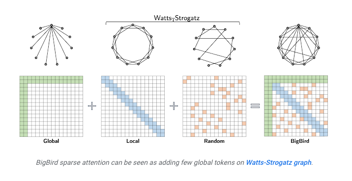
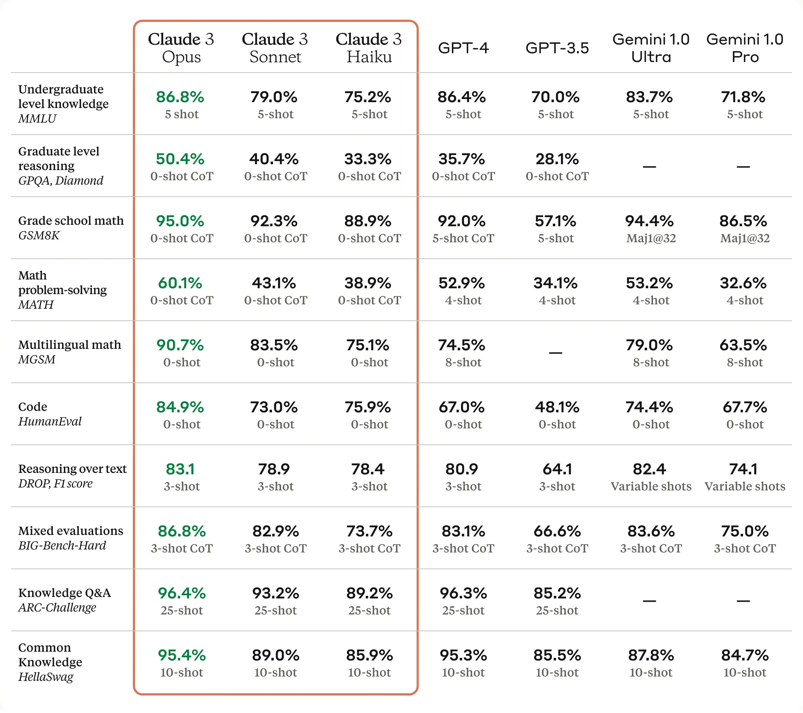
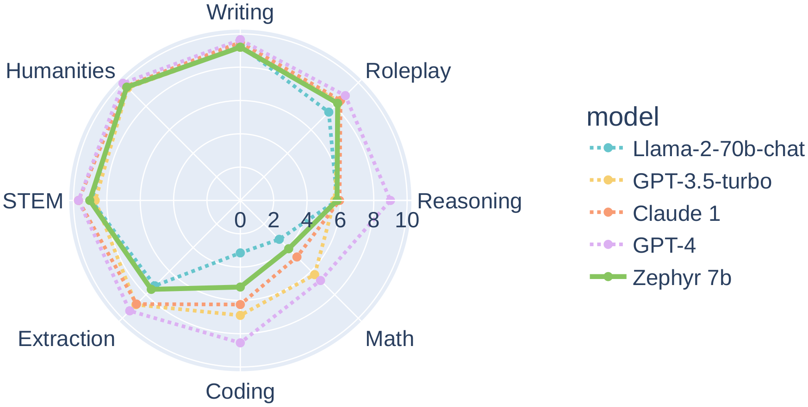

Primers • Overview of Large Language Models
- Overview
- Embeddings
- How do LLMs work?
- Retrieval/Knowledge-Augmented Generation or RAG (i.e., Providing LLMs External Knowledge)
- Vector Database Feature Matrix
- Context Length Extension
- The “Context Stuffing” Problem
- LLM Knobs
- Token Sampling
- Prompt Engineering
- Token healing
- Evaluation Metrics
- Methods to Knowledge-Augment LLMs
- Summary of LLMs
- Leaderboards
- Open LLM Leaderboard
- LMSYS Chatbot Arena Leaderboard
- Massive Text Embedding Benchmark (MTEB) Leaderboard
- Big Code Models Leaderboard
- Open VLM Leaderboard
- LLM Safety Leaderboard
- AlpacaEval Leaderboard
- Hallucination Leaderboard
- LLM-Perf Leaderboard
- Vectara’s Hallucination Leaderboard
- YALL - Yet Another LLM Leaderboard
- Artificial Analysis Leaderboard
- Martian’s Provider Leaderboard
- Enterprise Scenarios Leaderboard
- Extending prompt context
- Recent techniques powering LLMs
- Popular LLMs
- Popular Foundation LLMs
- Llama
- GPT
- Bard API
- Claude
- Alpaca
- Vicuna
- StableVicuna
- Dolly 2.0
- StableLM
- OpenLLaMA
- MPT
- Falcon
- RedPajama
- Pythia
- Orca
- phi-1
- XGen
- OpenLLMs
- LlongMA-2
- Qwen
- Mistral 7B
- Zephyr: Direct Distillation of LM Alignment
- Yi
- effi
- Starling
- NexusRaven-V2
- Llama Guard
- Notus
- OpenChat
- phi-1.5
- Phi-2
- DeciLM
- LLM360
- OLMo
- DeepSeek LLM
- Liberated-Qwen1.5
- Command-R
- EagleX
- Grok
- SaulLM
- DBRX
- Jamba
- WizardLM-2
- Gemini
- Popular Medical LLMs
- Popular Indic LLMs
- Popular Code LLMs
- Popular Foundation LLMs
- Frameworks
- Miscellaneous
- Further Reading
- References
- Citation
Overview
- Large Language Models (LLMs) are deep neural networks that utilize the Transformer architecture. LLMs are part of a class of models known as foundation models because these models can be transferred to a number of downstream tasks (via fine-tuning) since they have been trained on a huge amount of unsupervised and unstructured data.
- The Transformer architecture has two parts: encoder and decoder. Both encoder and decoder are mostly identical (with a few differences); (more on this in the primer on the Transformer architecture). Also, for the pros and cons of the encoder and decoder stack, refer Autoregressive vs. Autoencoder Models.
- Given the prevalence of decoder-based models in the area of generative AI, the article focuses on decoder models (such as GPT-x) rather than encoder models (such as BERT and its variants). Henceforth, the term LLMs is used interchangeably with “decoder-based models”.
- “Given an input text “prompt”, at essence what these systems do is compute a probability distribution over a “vocabulary”—the list of all words (or actually parts of words, or tokens) that the system knows about. The vocabulary is given to the system by the human designers. Note that GPT-3, for example, has a vocabulary of about 50,000 tokens.” Source
- It’s worthwhile to note that while LLMs still suffer from a myriad of limitations, such as hallucination and issues in chain of thought reasoning (there have been recent improvements), it’s important to keep in mind that LLMs were trained to perform statistical language modeling.
Specifically, language modeling is defined as the task of predicting the next token given some context.
Embeddings
- In the context of Natural Language Processing (NLP), embeddings are dense vector representations of words or sentences that capture semantic and syntactic properties of words or sentences. These embeddings are usually obtained by training models, such as BERT and its variants, Word2Vec, GloVe, or FastText, on a large corpus of text, and they provide a way to convert textual information into a form that machine learning algorithms can process. Put simply, embeddings encapsulate the semantic meaning of words (which are internally represented as one or more tokens) or semantic and syntactic properties of sentences by representing them as dense, low-dimensional vectors.
- Note that embeddings can be contextualized (where the embeddings of each token are a function of other tokens in the input; in particular, this enables polysemous words such as “bank” to have a unique embedding depending on whether the word occurs in a “finance” or “river” context) vs. non-contextualized embeddings (where each token has a static embedding irrespective of its context, which can be pre-trained and utilized for downstream applications). Word2Vec, GloVe, FastText, etc. are examples of models that offer non-contextualized embeddings, while BERT and its variants offer contextualized embeddings.
- To obtain the embedding for the token, extract the learned weights from the trained model for each word. These weights form the word embeddings, where each word is represented by a dense vector.
Contextualized vs. Non-Contextualized Embeddings
- Encoder models, like the Transformer-based BERT (Bidirectional Encoder Representations from Transformers), are designed to generate contextualized embeddings. Unlike traditional word embeddings that assign a static vector to each word (such as Word2Vec or GloVe), these models consider the context of a word (i.e., the words that surround it). This allows the model to capture a richer and more nuanced understanding of words since the same word can have different meanings based on the context it is used in.
Use-cases of Embeddings
-
With embeddings, you can perform various arithmetic operations to carry out specific tasks:
-
Word similarity: You can compare the embeddings of two words to understand their similarity. This is often done using cosine similarity, a metric that measures the cosine of the angle between two vectors. A higher cosine similarity between two word vectors indicates that the words are more similar in terms of their usage or meaning.
-
Word analogy: Vector arithmetic can be used to solve word analogy tasks. For example, given the analogy task “man is to woman as king is to what?”, we can find the answer (queen) by performing the following operation on the word embeddings: “king” - “man” + “woman”.
-
Sentence similarity: If you want to measure the similarity between two sentences, you could use the embedding of the special
[CLS]token produced by models like BERT, which is designed to capture the aggregate meaning of the sentence. Alternatively, you could average the embeddings of all tokens in each sentence and compare these average vectors. Note that when it comes to sentence-level tasks like sentence similarity, Sentence-BERT (SBERT), a modification of the BERT model, is often a better choice. SBERT is specifically trained to produce sentence embeddings that are directly comparable in semantic space, which generally leads to better performance on sentence-level tasks. In SBERT, both sentences are fed into the model simultaneously, allowing it to understand the context of each sentence in relation to the other, resulting in more accurate sentence embeddings.
-
Similarity Search with Embeddings
- For encoder models, contextualized embeddings are obtained at the output. Arithmetic operations can be performed on the embeddings to for various tasks such as understanding the similarity between two words, identifying word analogies, etc.
- For the task of word similarity, the respective contextualized embeddings of the words can be used; while for sentence similarity, the output of the
[CLS]token can be used or the word embeddings of all tokens can be averaged. For best performance on sentence similarity tasks, Sentence BERT variants of encoder models are preferred. - Word/sentence similarity is the measure of the degree to which two words/sentences are semantically equivalent in meaning.
- Below are the two most common measures of word/sentence similarity (note that neither of them is a “distance metric”).
Dot Product Similarity
- The dot product of two vectors \(u\) and \(v\) is defined as:
- It’s perhaps easiest to visualize its use as a similarity measure when \(\|v\|=1\), as in the diagram (source) below, where \(\cos \theta=\frac{u \cdot v}{\|u\|\|v\|} = \frac{u \cdot v}{\|u\|}\).
- Here you can see that when \(\theta=0\) and \(\cos \theta=1\), i.e., the vectors are colinear, the dot product is the element-wise product of the vectors. When \(\theta\) is a right angle, and \(\cos \theta=0\), i.e. the vectors are orthogonal, the dot product is 0. In general, \(\cos \theta\) tells you the similarity in terms of the direction of the vectors (it is -1 when they point in opposite directions). This holds as the number of dimensions is increased, and \(\cos \theta\) thus has important uses as a similarity measure in multidimensional space, which is why it is arguably the most commonly used similarity metric.
Geometric intuition
- The dot product between \(u, v\) can be interpreted as projecting \(u\) onto \(v\) (or vice-versa), and then taking product of projected length of \(u\) \((\|u\|)\) with length of \(v\) \((\|v\|)\).
- When \(u\) is orthogonal to \(v\), projection of \(u\) onto \(v\) is a zero length vector, yielding a zero product. If you visualize all possible rotations of \(u\) while keeping \(v\) fixed, the dot product gives:
- Zero value when \(u\) is orthogonal to \(v\) as the projection of \(u\) onto \(v\) yields a vector of zero length. This corresponds to the intuition of zero similarity.
- Largest value of \(\|u\|\|v\|\) when \(u\) and \(v\) point in the same direction.
- Lowest value of \(-\|u\|\|v\|\) when \(u\) and \(v\) point in opposite direction.
- Dividing \(u \cdot v\) by the magnitude of \(u\) and \(v\), i.e., \(\|u\|\|v\|\), limits the range to \([-1,1]\) making it scale invariant, which is what brings us to cosine similarity.
Cosine Similarity
\[\text{cosine_similarity}(u,v) = \frac{u \cdot v}{\left\|u\right\|\left\|v\right\|} = \frac{\sum_{i=1}^{n} u_i v_i}{\sqrt{\sum_{i=1}^{n} u_i^2} \sqrt{\sum_{i=1}^{n} v_i^2}}\]- where,
- \(u\) and \(v\) are the two vectors being compared.
- \(\cdot\) represents the dot product.
- \(\|u\|\) and \(\|v\|\) represent the magnitudes (or norms) of the vectors, and \(n\) is the number of dimensions in the vectors.
- Note that as mentioned earlier, the length normalization part (i.e., dividing \(u \cdot v\) by the magnitude of \(u\) and \(v\), i.e., \(\|u\|\|v\|\)) limits the range to \([-1,1]\), making it scale invariant.
Cosine similarity vs. dot product similarity
- Cosine similarity and dot product similarity are both techniques used to determine the similarity between vectors, which can represent things like text documents, user preferences, etc. The choice between the two depends on the specific use case and desired properties. Here’s a comparison of the advantages of cosine similarity over dot product similarity:
- Magnitude Normalization: Cosine similarity considers only the angle between two vectors, ignoring their magnitudes. This is particularly useful when comparing documents of different lengths or vectors where magnitude isn’t representative of similarity. Dot product, on the other hand, can be affected by the magnitude of the vectors. A long document with many mentions of a particular term might have a high dot product with another document, even if the percentage of relevant content is low. Note that if you normalize your data to have the same magnitude, the two are indistinguishable. Sometimes it is desirable to ignore the magnitude, hence cosine similarity is nice, but if magnitude plays a role, dot product would be better as a similarity measure. In other words, cosine similarity is simply dot product, normalized by magnitude (hence is a value \(\in [0, 1]\)). Cosine similarity is preferable because it is scale invariant and thus lends itself naturally towards diverse data samples (with say, varying length). For instance, say we have two sets of documents and we computing similarity within each set. Within each set docs are identical, but set #1 documents are shorter, than set #2 ones. Dot product would produce different numbers if the embedding/feature size is different, while in both cases cosine similarity would yield comparable results (since it is length normalized). On the other hand, plain dot product is a little bit “cheaper” (in terms of complexity and implementation), since it involves lesser operations (no length normalization).
- Bound Values: Cosine similarity returns values between -1 and 1 for all vectors, but it specifically returns values between 0 and 1 for vectors with non-negative dimensions (like in the case of TF-IDF representations of documents). This bounded nature can be easier to interpret. Dot product values can range from negative to positive infinity, which can make normalization or thresholding harder.
- Robustness in High Dimensions: In high dimensional spaces, most pairs of vectors tend to be almost orthogonal, which means their dot products approach zero. However, their cosine similarities can still provide meaningful differentiation. Dot product can be highly sensitive to the magnitude of individual dimensions, especially in high-dimensional spaces.
- Common Use Cases: Cosine similarity is extensively used in text analytics, information retrieval, and recommender systems because of its effectiveness in these domains. When representing text with models like TF-IDF, where vectors are non-negative and the magnitude might be influenced by the length of the text, cosine similarity is more appropriate. While dot product has its own strengths, it might not be as suitable for these use cases without additional normalization.
- Intuitiveness: In many scenarios, thinking in terms of angles (cosine similarity) can be more intuitive than considering the raw projection (dot product). For instance, when two vectors point in the exact same direction (regardless of their magnitudes), their cosine similarity is 1, indicating perfect similarity.
- Centroid Calculation: When trying to calculate the centroid (average) of multiple vectors (like in clustering), the centroid remains meaningful under cosine similarity. If you average the vectors and then compare another vector using cosine similarity, you get a measure of how similar the vector is to the “average” vector. This isn’t necessarily true with dot product. Despite these advantages, it’s worth noting that in some applications, especially in neural networks and deep learning, raw dot products (sometimes followed by a normalization step) are preferred due to their computational properties and the nature of learned embeddings. Always consider the specific application and the properties of the data when choosing between these measures.
How do LLMs work?
- Like we discussed in the Overview section, LLMs are trained to predict the next token based on the set of previous tokens. They do this in an autoregressive manner (where the current generated token is fed back into the LLM as input to generate the next one), enabling generation capabilities.
- The first step involves taking the prompt they receive, tokenining it, and converting it into embeddings, which are vector representations of the input text. Note that these embeddings are initialized randomly and learned during the course of model training, and represent a non-contextualized vector form of the input token.
- Next, they do layer-by-layer attention and feed-forward computations, eventually assigning a number or logit to each word in its vocabulary (in the case of a decoder model like GPT-N, LLaMA, etc.) or outputs these features as contextualized embeddings (in the case of an encoder model like BERT and its variants such as RoBERTa, ELECTRA, etc.).
- Finally, in the case of decoder models, the next step is converting each (unnormalized) logit into a (normalized) probability distribution (via the Softmax function), determining which word shall come next in the text.
-
Let’s break the steps down into finer detail:
- Tokenization:
- Before processing, the raw input text is tokenized into smaller units, often subwords or words. This process breaks down the input into chunks that the model can recognize.
- This step is crucial because the model has a fixed vocabulary, and tokenization ensures the input is in a format that matches this vocabulary.
- OpenAI’s tokenizer for GPT-3.5 and GPT-4 can be found here.
- Please refer to our primer on Tokenization for more details.
- Embedding:
- Each token is then mapped to a high-dimensional vector using an embedding matrix. This vector representation captures the semantic meaning of the token and serves as the input to the subsequent layers of the model.
- Positional Encodings are added to these embeddings to give the model information about the order of tokens, especially important since models like transformers do not have inherent sequence awareness.
- Transformer Architecture:
- The core of most modern LLMs is the transformer architecture.
- It comprises multiple layers, and each layer has two primary components: a multi-head self-attention mechanism and a position-wise feed-forward network.
- The self-attention mechanism allows tokens to weigh the importance of other tokens relative to themselves. In essence, it enables the model to “pay attention” to relevant parts of the input for a given token.
- After attention, the result is passed through a feed-forward neural network independently at each position.
- Please refer to our primer on the Transformer architecture for more details.
- Residual Connections:
- Each sub-layer (like self-attention or feed-forward neural network) in the model has a residual connection around it, followed by layer normalization. This helps in stabilizing the activations and speeds up training.
- Output Layer:
- After passing through all the transformer layers, the final representation of each token is transformed into a vector of logits, where each logit corresponds to a word in the model’s vocabulary.
- These logits describe the likelihood of each word being the next word in the sequence.
- Probability Distribution:
- To convert the logits into probabilities, the Softmax function is applied. It normalizes the logits such that they all lie between 0 and 1 and sum up to 1.
- The word with the highest probability can be chosen as the next word in the sequence.
- Decoding:
- Depending on the application, different decoding strategies like greedy decoding, beam search, or top-k sampling might be employed to generate coherent and contextually relevant sequences.
- Please refer to our primer on Token Sampling Methods for more details.
- Tokenization:
- Through this multi-step process, LLMs can generate human-like text, understand context, and provide relevant responses or completions to prompts.
LLM Training Steps
- At a top-level, here are steps involved in training LLMs:
- Corpus Preparation: Gather a large corpus of text data, such as news articles, social media posts, or web documents.
- Tokenization: Split the text into individual words or subword units, known as tokens.
- Embedding Generation: Typically accomplished using a randomly initialized embedding table, via the
nn.Embeddingclass in PyTorch. Pre-trained embeddings such Word2Vec, GloVe, FastText, etc. can also be used as a starting point for training. Note that these embeddings represent the non-contextualized vector form of the input token. - Neural Network Training: Train a neural network model on the input tokens.
- For encoder models such as BERT and its variants, the model learns to predict the context (surrounding words) of a given word which are masked. BERT is specifically trained on the Masked Language Modeling task (known as the Cloze task) and the Next Sentence Prediction objective; described in our BERT primer.
- For decoder models such as GPT-N, LLaMA, etc., the model learns to predict the next token in the sequence, given the prior context of tokens.
Reasoning
- Let’s delve into how reasoning works in LLMs; we will define reasoning as the “ability to make inferences using evidence and logic.” (source)
- There are a multitude of varieties of reasoning, such as commonsense reasoning or mathematical reasoning.
- Similarly, there are a variety of methods to elicit reasoning from the model, one of them being chain-of-thought prompting which can be found here.
- It’s important to note that the extent of how much reasoning an LLM uses in order to give its final prediction is still unknown, since teasing apart the contribution of reasoning and factual information to derive the final output is not a straightforward task.
Retrieval/Knowledge-Augmented Generation or RAG (i.e., Providing LLMs External Knowledge)
- In an industrial setting, cost-conscious, privacy-respecting, and reliable solutions are most desired. Companies, especially startups, are not looking to invest in talent or training models from scratch with no RoI on the horizon.
- In most recent research and release of new chatbots, it’s been shown that they are capable of leveraging knowledge and information that is not necessarily in its weights. This paradigm is referred to as Retrieval Augmented Generation (RAG).
- RAG enables in-context learning without costly fine-tuning, making the use of LLMs more cost-efficient. By leveraging RAG, companies can use the same model to process and generate responses based on new data, while being able to customize their solution and maintain relevance. RAG also helps alleviate hallucination.
- There are several ways we can accomplish this, first of those being leveraging another LM by iteratively calling it to extract information needed.
- In the image below (source), we get a glimpse into how iteratively calling LM works:
- Another method for LLM gaining external knowledge is through information retrieval via memory units such as an external database, say of recent facts. As such, there are two types of information retrievers, dense and sparse.
- As the name suggests, sparse retrievers use sparse bag of words representation of documents and queries while dense (neural) retrievers use dense query and document vectors obtained from a neural network.
- Yet another method is to leverage using agents which utilize APIs/tools to carry out a specializes task. The model chooses the most appropriate tool corresponding to a given input. With the help of tools like Google Search, Wikipedia and OpenAPI, LLMs can not only browse the web while responding, but also perform tasks like flight booking and weather reporting. LangChain offers a variety of different tools.
- “Even though the idea of retrieving documents to perform question answering is not new, retrieval-augmented LMs have recently demonstrated strong performance in other knowledge-intensive tasks besides Q&A. These proposals close the performance gap compared to larger LMs that use significantly more parameters.” (source)
- “With RAG, the external data used to augment your prompts can come from multiple data sources, such as a document repositories, databases, or APIs. The first step is to convert your documents and any user queries into a compatible format to perform relevancy search.
- To make the formats compatible, a document collection, or knowledge library, and user-submitted queries are converted to numerical representations using embedding language models. Embedding is the process by which text is given numerical representation in a vector space.
- RAG model architectures compare the embeddings of user queries within the vector of the knowledge library. The original user prompt is then appended with relevant context from similar documents within the knowledge library. This augmented prompt is then sent to the foundation model. You can update knowledge libraries and their relevant embeddings asynchronously.” source
Process
- First step is to store the knowledge of your internal documents in a format that is suitable for querying. We do so by embedding all of your internally held knowledge using an embedding model:
- Split text corpus of the entire knowledge base into chunks – a chunk represents a single piece of context available to be queried. Keep in mind that the data of interest can be coming from multiple sources of different types, e.g. documentation in Confluence supplemented by PDF reports.
- Use the Embedding Model to transform each of the chunks into a vector embedding.
- Store all vector embeddings in a Vector Database.
- Save text that represents each of the embeddings separately together with the pointer to the embedding (we will need this later).
-
The following flowchart (source) illustrates the architecture of the system:
- Next we can start constructing the answer to a question/query of interest:
- Embed a question/query you want to ask using the same Embedding Model that was used to embed the knowledge base itself.
- Use the resulting Vector Embedding to run a query against the index in Vector Database. Choose how many vectors you want to retrieve from the Vector Database - it will equal the amount of context you will be retrieving and eventually using for answering the query question.
- Vector DB performs an Approximate Nearest Neighbour (ANN) search for the provided vector embedding against the index and returns previously chosen amount of context vectors. The procedure returns vectors that are most similar in a given Embedding/Latent space.
- Map the returned Vector Embeddings to the text chunks that represent them.
- Pass a question together with the retrieved context text chunks to the LLM via prompt. Instruct the LLM to only use the provided context to answer the given question. This does not mean that no Prompt Engineering will be needed - you will want to ensure that the answers returned by LLM fall into expected boundaries, e.g. if there is no data in the retrieved context that could be used make sure that no made up answer is provided.
- To make a real demo (for e.g., an interactive chatbot like ChatGPT), face the entire application with a Web UI that exposes a text input box to act as a chat interface. After running the provided question through steps 1. to 9. - return and display the generated answer. This is how most of the chatbots that are based on a single or multiple internal knowledge base sources are actually built nowadays.
Summary
- RAG augments the knowledge base of an LM with relevant documents. Vector databases such as Pinecone, Chroma, Weaviate, etc. offer great solutions to augment LLMs. Open-soruce solutions such as Milvus and LlamaIndex are great options as well.
- Here is RAG step-by-step:
- Chunk, embed, & index documents in a vector database (VDB).
- Match the query embedding of the claim advisor using (approximate) nearest neighbor techniques.
- Retrieve the relevant context from the VDB.
- Augment the LLM’s prompt with the retrieved content.
- As a stack recommendation, you can build prototypes with LangChain or for more of an industrial flair, go with Google Vertex.
- Another method recent LM’s have leveraged is the search engine itself such as WebGPT does. “WebGPT learns to interact with a web-browser, which allows it to further refine the initial query or perform additional actions based on its interactions with the tool. More specifically, WebGPT can search the internet, navigate webpages, follow links, and cite sources.” (source)
Vector Database Feature Matrix
- To compare the plethora of Vector DB offerings, a feature matrix that highlights the differences between Vector DBs and which to use in which scenario is essential.
- Vector DB Comparison by VectorHub offers a great comparison spanning 37 vendors and 29 features (as of this writing).

- As a secondary resource, the following table (source) shows a comparison of some of the prevalent Vector DB offers along various feature dimensions:
- Access the full spreadsheet here.
Context Length Extension
- Language models like LLaMA have traditionally been bounded by a fixed context window size, which essentially means they can only consider a fixed number of previous tokens when predicting the next one. Positional embeddings are a core component in these models to provide a sense of sequence order. However, scaling these embeddings to accommodate longer sequences has its own set of challenges.
- For example, GPT-4 has a context length of 32K input tokens, while Anthropic has 100K input tokens. To give an idea, The Great Gatsby is 72K tokens, 210 pages.
- Let’s delve deeper into the context length issue found in Transformers:
- Background:
- Weight Matrix Shapes and Input Tokens:
- In the Transformer model, the sizes (or shapes) of the learnable weight matrices do not depend on the number of input tokens (\(n\)). This means the architecture itself doesn’t change if you provide more tokens.
- The implication of this is that a Transformer trained on shorter sequences (like 2K tokens) can technically accept much longer sequences (like 100K tokens) without any structural changes.
- Training on Different Context Lengths:
- While a Transformer model can accept longer sequences, it may not produce meaningful results if it hasn’t been trained on such long sequences. In the given example, if a model is trained only on 2K tokens, feeding it 100K tokens might result in outputs that are not accurate or coherent.
- Computational Complexity and Costs: - The original Transformer has a quadratic computational complexity with respect to both the number of tokens (\(n\)) and the embedding size (\(d\)). This means that as sequences get longer, the time and computational resources needed for training increase significantly. - As a concrete example, the author points out that training a model called LLaMA on sequences of 2K tokens is already quite expensive (~$3M). Due to the quadratic scaling, if you tried to train LLaMA on sequences of 100K tokens, the cost would balloon to an estimated ~$150M.
- Weight Matrix Shapes and Input Tokens:
- Potential Solution:
- Fine-tuning on Longer Contexts: - A potential solution to the problem might seem to be training a model on shorter sequences (like 2K tokens) and then fine-tuning it on longer sequences (like 65K tokens). This approach is often used in other contexts to adapt a model to new data or tasks. - However, this won’t work well with the original Transformer due to its Positional Sinusoidal Encoding. This encoding is designed to add positional information to the input tokens, but if the model is only familiar with shorter sequences, it might struggle to interpret the positional encodings for much longer sequences accurately.
- Background:
- We will look at other more viable solutions, such as Flash Attention, below.
- For more, refer to our Context Length Extension primer.
Challenges with Context Scaling
- Fixed Maximum Length: Positional embeddings are configured for a predetermined sequence length. If a model is designed for 512 tokens, it possesses 512 distinct positional embedding vectors. Beyond this, there’s no positional information for extra tokens, making longer sequences problematic.
- Memory Overhead: Extending these embeddings for incredibly lengthy sequences demands more memory, especially if the embeddings are parameters that need to be learned during training.
- Computational Burden: The self-attention mechanism in Transformers grows in computational intensity with the length of the sequence. It’s quadratic in nature, meaning that even a modest increase in sequence length can substantially raise the computation time.
The “Needle in a Haystack” Test
- To understand the in-context retrieval ability of long-context LLMs over various parts of their prompt, a simple ‘needle in a haystack’ analysis could be conducted. This method involves embedding specific, targeted information (the ‘needle’) within a larger, more complex body of text (the ‘haystack’). The purpose is to test the LLM’s ability to identify and utilize this specific piece of information amidst a deluge of other data.
- In practical terms, the analysis could involve inserting a unique fact or data point into a lengthy, seemingly unrelated text. The LLM would then be tasked with tasks or queries that require it to recall or apply this embedded information. This setup mimics real-world situations where essential details are often buried within extensive content, and the ability to retrieve such details is crucial.
- The experiment could be structured to assess various aspects of the LLM’s performance. For instance, the placement of the ‘needle’ could be varied—early, middle, or late in the text—to see if the model’s retrieval ability changes based on information location. Additionally, the complexity of the surrounding ‘haystack’ can be modified to test the LLM’s performance under varying degrees of contextual difficulty. By analyzing how well the LLM performs in these scenarios, insights can be gained into its in-context retrieval capabilities and potential areas for improvement.
- This can be accomplished using the Needle In A Haystack library. The following plot shows OpenAI’s GPT-4-128K’s (top) and (bottom) performance with varying context length.
- The following figure (source) shows Claude 2.1’s long context question answering errors based on the areas of the prompt context length. On an average, Claude 2.1 demonstrated a 30% reduction in incorrect answers compared to Claude 2.
- However, in their Long context prompting for Claude 2.1 blog, Anthropic noted that adding “Here is the most relevant sentence in the context:” to the start of Claude’s response raised the score from 27% to 98% on the original evaluation! The figure below from the blog shows that Claude 2.1’s performance when retrieving an individual sentence across its full 200K token context window. This experiment uses the aforementioned prompt technique to guide Claude in recalling the most relevant sentence.
Status quo
- Considering the fact that self-attention in the Transformer has a quadratic time and space complexity with respect to the context length, here’s how context length sizes of 100k tokens and longer are achieved in practice in the state-of-the-art open LLMs:
- The LLMs are first pretrained using the exact attention (without using approximations such as Linformer, Performer, BigBird, etc.), usually with up to 4096 token contexts using FlashAttention 2 (which significantly speeds up the training process compared to a vanilla attention implementation) and Rotary Position Embedding (RoPE, which allows modeling very long sequences).
- Post this step, the context size is extended via additional pre-training using techniques with various degrees of approximation as compared to the exact attention. This part is often missing in open model info cards while OpenAI and Anthropic keep this information secret. The most effective such techniques used in open models are currently YaRN, LongLoRA, and Llama 2 Long.
- Inference with such long contexts requires multiple GPUs of A100 or H100 grade even for relatively small models such as 7B or 13B.
- Some techniques allow extending the context size of a pretrained LLM without additional pretraining. Two such techniques proposed recently are SelfExtend and LM-Infinite.
RAG vs. Ultra Long Context (1M+ Tokens)
- The recent unveiling of the Gemini Pro 1.5 model, featuring a 1 million token context window, has reignited a pivotal discussion: is there still a place for RAG?
- The consensus appears to affirm the continued relevance of RAG, especially considering the financial implications associated with the Gemini Pro 1.5’s extensive token usage. Specifically, each query within this model demands payment for every token in the 1 million token context, thereby accruing significant costs—approximately $7 per call. This pricing structure starkly contrasts with RAG’s cost-effective approach, where only a select number of pertinent tokens are charged, potentially reducing costs by an estimated 99%, albeit possibly at the expense of performance.
- This financial consideration sharply defines viable applications for the Gemini Pro 1.5 model, particularly discouraging its use in scenarios typically suited for RAG due to the prohibitive costs involved. Nonetheless, this does not preclude the utility of long context window models in other domains. When the full breadth of the context window is leveraged, these models can provide substantial value, making even a seemingly high cost per call appear reasonable.
- Optimal uses for such large context window models (source) would include deriving patterns from the entire dataset, might include:
- Analyzing a compilation of 1,000 customer call transcripts to generate insights on the reasons for calls, sentiment analysis, detection of anomalies, assessment of agent performance, and compliance monitoring. 2. Examining extensive marketing performance data to unearth trends or optimization opportunities.
- Processing the recorded dialogue from an all-day workshop to extract pivotal ideas and discussions.
- Given a large codebase, resolve a particular bug.
- Prohibitive use cases would include applications that requires multi-turn or follow-up questions, which are more efficiently handled by RAG systems (asking a coding assistant follow-up questions given a piece of code).
- These examples underscore a critical principle: utilizing 1 million tokens to inquire about a fraction of that amount is inefficient and costly—RAG is better suited for such tasks. However, deploying long context models to analyze and derive patterns across the entirety of their token capacity could indeed be transformative, offering a compelling advantage where the scale and scope of the data justify the investment.
- The following infographic (source) illustrates this:
Solutions to Challenges
Positional Interpolation (PI)
-
Concept: Think of PI as a ‘resizing’ tool. Just as you might resize an image to fit a specific frame, PI adjusts position indices to fit within the existing context size. This is done using mathematical interpolation techniques.
-
Functionality: Suppose you trained a model for a 512-token context, but now want it to manage 1024 tokens. PI would transform positions [0,1,2,…,1023] to something like [0,0.5,1,…,511.5] to utilize the existing 512 embeddings.
-
Advantages: It’s like giving an old model a new pair of glasses. The model can now ‘see’ or process longer sequences without having to undergo rigorous training again from scratch.
-
Fine-tuning: After employing PI, models often need some brushing up. This is done through fine-tuning, where the model learns to adjust to its new sequence processing capability.
Rotary Positional Encoding (RoPE)
-
Concept: Rather than adding distinct positional information, RoPE rotates the existing embeddings based on their positions. By distributing positional data across all dimensions, the essence of sequence position is captured in a more fluid manner.
-
Functionality: RoPE employs mathematical operations to rotate the input embeddings. This allows the model to handle sequences that go beyond its original training without requiring explicit positional data for each new position.
-
Advantages: The rotation-based mechanism is more dynamic, meaning the model can work with sequences of any length without needing distinct embeddings for every position. This offers significant flexibility, especially when dealing with texts of unpredictable lengths.
-
Limitation: The continuous nature of RoPE’s rotation can cause some imprecision, especially when sequences become extremely lengthy.
ALiBi (Attention with Linear Biases)
- Author: Ofer Press from FAIR et al.
- While ALiBi does not directly increase context length, it enhances the Transformer’s adaptability to varied sequence lengths by introducing biases in the attention mechanism, optimizing its performance on extended contexts.
- The original Transformer leveraged Positional Sinusoidal Encoding which did not have the ‘extrapolation’ ability, thus, it performed poorly during inference/ fine-tuning when the context length was increased.
- For example, when you train a transformer model on sequences of a particular length (say 2K tokens) and later want to use it on longer sequences (like 65K tokens), this encoding does not effectively “extrapolate” to these longer sequences. This means that the model starts to perform poorly when dealing with sequences longer than what it was trained on.
- AliBi is an alternative to Positional Sinusoidal Encoding and is a modification to the attention mechanism within the Transformer architecture. Instead of adding positional information at the start (or bottom) of the model, ALiBi integrates this information within the attention mechanism itself.
- In the attention mechanism, attention scores are computed between query and key pairs. ALiBi introduces a bias to these attention scores based on the distance between tokens in the sequence. Specifically, the farther apart two tokens are in the sequence, the more penalty or bias is added to their attention score. This bias ensures that the model is aware of the token positions when calculating attention.
- Benefits of ALiBi:
- Adaptability: Unlike Positional Sinusoidal Encoding, ALiBi is more adaptable to different sequence lengths, making it more suitable for models that need to handle varying sequence lengths during training and inference.
- Training Speed: Incorporating ALiBi can speed up the training process.
- The image below depicts the constant bias added from the original ALiBi paper.

Sparse Attention
- Sparse attention is another modification to self-attention and it exploits the reasoning that not all tokens within your content size are relevant to each other.
- Thus, it considers only some tokens when calculating the attention score, and adds sparsity to make the computation linear not quadratic w.r.t. input token size.
- There are many ways in which sparse attention can be implemented and we will look at a few below:
- Sliding Window Attention or Local: implements a fixed-size window attention surrounding each token. Here, each token doesn’t look at all other tokens but only a fixed number around it, defined by a window size \(w\). If \(w\) is much smaller than \(n\), this significantly reduces computations. However, information can still flow across the entire sequence since each token can pass its information to its neighbors, who pass it to their neighbors, and so on.
- BigBird Attention: Another approach, introduced in the BigBird model, combines different types of attention: some tokens attend globally (to all tokens), some attend locally (like the sliding window), and some attend to random tokens. This combination ensures efficient computation while maintaining a good flow of information across the entire sequence.
- The image below, source depicts full attention and how it can be viewed as a graph.
- In contrast, the image below, source depicts sparse attention specifically from the BigBird paper.

Flash Attention
- FlashAttention optimizes the attention mechanism for GPUs by breaking computations into smaller blocks, reducing memory transfer overheads and enhancing processing speed. Let’s see how below:
- Background context:
- Remember from earlier, transformers utilize an attention mechanism that involves several computational steps to determine how much focus each word in a sentence should have on other words. These steps include matrix multiplications, as illustrated by the operations: S = Q * K, P = softmax(S), and O = P * V.
- However, when processing these operations on a GPU, there are some inefficiencies that slow down the computation:
- GPU Memory Hierarchy: GPUs have different types of memory. SRAM (Static Random-Access Memory) is fast but has limited size, while HBM (High Bandwidth Memory) has a much larger size but is slower. For effective GPU operations, data needs to be loaded into the quick SRAM memory. But due to SRAM’s limited size, larger intermediate results (like the matrices P, S, and O) need to be stored back into the slower HBM memory, which adds overheads.
- Memory Access Overhead: Constantly moving these large intermediate results (P, S, and O) between the SRAM and HBM memories creates a bottleneck in performance.
- Solution - FlashAttention:
-
FlashAttention was introduced to optimize these operations for GPUs. Instead of computing the attention for the entire matrices at once, FlashAttention breaks them down into smaller blocks or tiles:
- Tiling: The Q, K, and V matrices are divided into smaller blocks. These blocks are then loaded from the HBM to the faster SRAM for computation.
- Optimized Computation: Within each block, the attention output is computed without the need to constantly shift large intermediate results between the two types of memory. This means fewer transfers between the slow and fast memories, which leads to speed improvements.
- Optimized for GPU: While individual operations like matrix multiplication are already efficient on GPUs, FlashAttention makes the entire attention layer more GPU-friendly by minimizing memory transfers and fusing several operations.
- The result of these optimizations is a significant speedup in both training and inference times. Moreover, this optimization is now integrated into popular frameworks like PyTorch 2.0, making it easily accessible for developers.
- In essence, FlashAttention is a smart way to restructure and execute the attention mechanism’s computations on GPUs, minimizing the bottlenecks caused by the GPU’s memory architecture.
- The image below, source, depicts Flash Attention from the original paper.
Multi-Query Attention
- Background context:
- Multi-Head Attention (MHA) in Transformers:
- In the original Transformer architecture, the attention mechanism uses multiple heads. Each of these heads independently calculates its own attention scores by projecting the input into different “query”, “key”, and “value” spaces using separate weight matrices. The outputs from all heads are then concatenated and linearly transformed to produce the final result.
- The Challenge with MHA:
- While MHA allows the model to focus on different parts of the input simultaneously, it has its costs. One such cost is memory usage. During the inference stage, especially in decoders, previous tokens’ “keys” and “values” are cached so that the model doesn’t need to recompute them for each new token. However, as more tokens are processed, the cache grows, consuming more GPU memory.
- Multi-Head Attention (MHA) in Transformers:
- Introducing Multi-Query Attention (MQA):
- MQA is an optimization over the standard MHA. Instead of each head having separate weight matrices for projecting the “key” and “value”, MQA proposes that all heads share a common weight matrix for these projections.
- Advantages of MQA:
- Memory Efficiency: By sharing weights for the “key” and “value” projections across heads, you significantly reduce the memory required for caching during inference. For instance, a model with 96 heads, like GPT-3, can reduce its memory consumption for the key/value cache by up to 96 times.
- Speed in Inference: Since you’re now working with shared projections and a reduced cache size, the calculation of attention scores during inference becomes faster. This is especially beneficial when generating longer sequences of text.
- Maintains Training Speed: Despite these changes, the training speed remains largely unaffected. This means you get the advantages of MQA without any significant downside in terms of training time.
Comparative Analysis
-
Stability: PI’s methodology, in certain settings, can be more consistent in performance than RoPE.
-
Approach: While PI essentially ‘squeezes’ or ‘stretches’ positional indices to align with existing embeddings, RoPE modifies the very nature of how embeddings encapsulate position information.
-
Training Dynamics: Post-PI models often crave some refinement to accommodate the interpolated positions, whereas RoPE’s intrinsic design means it’s already geared up for variable sequence lengths without additional training.
-
Flexibility: RoPE’s absence of dependency on fixed embeddings gives it an edge, as it can gracefully handle sequences of any conceivable length.
Dynamically Scaled RoPE
- Static RoPE can sometimes force a compromise between catering to very long sequences and maintaining efficacy on shorter ones. Enter the dynamic variant of RoPE, which seeks to fluidly adjust scaling based on the sequence’s length, offering the best of both worlds.
Approach
-
Adaptivity: Instead of a one-size-fits-all scaling, this method tailors the scaling based on the present sequence length. It’s like adjusting the focus of a camera lens based on the subject’s distance.
-
Scale Dynamics: The model starts with precise position values for the initial context (up to the first 2k tokens). Beyond that, it recalibrates the scaling factor in real-time, relative to how the sequence length evolves.
Key Benefits
-
Performance Boost: Dynamic scaling typically exhibits enhanced efficacy compared to its static counterpart and other techniques like NTK-Aware.
-
Versatility: The real-time adaptability ensures that the model remains effective across a wide spectrum of sequence lengths.
NTK-Aware Method Perspective
-
Performance Metrics: NTK-Aware may falter a bit with shorter sequences, but it tends to flourish as sequences grow.
-
Parameter Dynamics: Both dynamic RoPE and NTK-Aware possess parameters influencing their performance over different sequence lengths. The distinction lies in dynamic RoPE’s ability to adjust these parameters on-the-fly based on the current sequence length, enhancing its responsiveness.
Summary
- Dynamically Scaled RoPE, with its adaptive nature, represents a promising direction in the quest for more versatile and efficient language models. By dynamically adjusting to varying sequence lengths, it ensures that models like LLaMA maintain optimal performance across diverse contexts.
Related: Traditional DBs v/s Vector DBs
- The below infographic (source) performs a comparative analysis between traditional databases and vector databases.
When not to use Vector DBs?
- Credits for this section go to Prithivi Da.
- Vector DBs are “leaky abstractions”.
A leaky abstraction is an abstraction that exposes details and limitations of its underlying implementation to its users that should ideally be hidden away
- Encoders are usecase specific, so you need to know which encoder and hidden dimension size will yield the best representation. For some-cases / domains you have to train your own instead of using a pre-trained one.
- Default similarity and distance functions for relevance may not be good for all usecase. Cosine is default for most VdBs (which tools like langchain blindly keep). For instance if the indexed data is noisy, Jaccard similarity is robust to noise, while cosine similarity is not.
- LSH isn’t a good option for multi billion record scale hence Milvus skipped it keeping only IVF-PQ and HSNW; you should know when to use what.
- If your case requires “read-your-own-writes” the latency of encoding and indexing cannot tolerate your needs.
- Total Cost of Ownership (TCO) is higher compared to traditional and hybrid data stores.
- Backfilling can be very slow if your historical dataset is huge.
Knowledge Graphs with LLMs: Best of Both Worlds
- Credits to the following section go to Tony Seale.
- The recent increasing significance on LLMs within organisations is not just a fleeting fad but part of a transformative shift that all forward-thinking organisations must come to terms with. However, for an organisation to succeed in this transition, effectively leveraging ontologies (of which knowledge graphs are a popular instantiation) is a crucial factor.
- LLMs possess remarkable AI capabilities, allowing them to comprehend and generate human-like text by learning intricate patterns from vast volumes of training data. These powerful models are capable of crafting eloquent letters, analysing data, generating code, orchestrating workflows, and performing a myriad of other complex tasks. Their potential seems increasingly disruptive, with Microsoft even ‘betting the house’ on them.
- However, when deploying LLMs within an enterprise context, reliability, trustworthiness, and understandability are vital concerns for those running and governing these systems. Hallucination is simply not an option.
- Ontologies offer structured and formal representations of knowledge, defining relationships between concepts within specific domains. These structures enable computers to comprehend and reason in a logical, consistent, and comprehensible manner. Yet, designing and maintaining ontologies requires substantial effort. Before LLMs came along, they were the ‘top dog in town’ when it came to a semantic understanding, but now they seem relatively inflexible, incomplete and slow to change.
- Enter the intriguing and powerful synergy created by the convergence of LLMs AND Ontologies. The ability of LLMs to generate and extend ontologies is a game-changer. Although you still need a ‘human-in-the-loop,’ the top LLMs demonstrate surprising effectiveness. Simultaneously, ontologies provide vital context to the prompts given to LLMs, enriching the accuracy and relevance of the LLM’s responses. Ontologies can also be used to validate the consistency of those responses.
- LLMs can help discover new knowledge, and the ontologies compile that knowledge down for future use.
- This collaborative partnership between LLMs and ontologies establishes a reinforcing feedback loop of continuous improvement. As LLMs help generate better ontologies faster and more dynamically, the ontologies, in turn, elevate the performance of LLMs by offering a more comprehensive context of the data and text they analyse. This positive feedback loop has the potential to catalyse an exponential leap in the capabilities of AI applications within organisations, streamlining processes, adding intelligence, and enhancing customer experiences like never before.
Continuous v/s Discrete Knowledge Representation
- Credits to the following section go to Tony Seale.
- We can think of information existing in a continuous stream or in discrete chunks. LLMs fall under the category of continuous knowledge representation, while Knowledge Graphs belong to the discrete realm. Each approach has its merits, and understanding the implications of their differences is essential.
- LLM embeddings are dense, continuous real-valued vectors existing in a high-dimensional space. Think of them as coordinates on a map: just as longitude and latitude can pinpoint a location on a two-dimensional map, embeddings guide us to rough positions in a multi-dimensional ‘semantic space’ made up of the connections between the words on the internet. Since the embedding vectors are continuous, they allow for an infinite range of values within a given interval, making the embeddings’ coordinates ‘fuzzy’.
- An LLM embedding for ‘Jennifer Aniston’ will be a several-thousand-dimensional continuous vector that leads to a location in a several-billion-parameter ‘word-space’. If we add the ‘TV series’ embedding to this vector then I will be pulled towards the position of the ‘Friends’ vector. Magic! But this magic comes with a price: you can never quite trust the answers. Hallucination and creativity are two sides of the same coin.
- On the other hand, Knowledge Graphs embrace a discrete representation approach, where each entity is associated with a unique URL. For example, the Wikidata URL for Jennifer Aniston is
https://www.wikidata.org/wiki/Q32522. This represents a discrete location in ‘DNS + IP space’. Humans have carefully structured data that is reliable, editable, and explainable. However, the discrete nature of Knowledge Graphs also comes with its own price. There is no magical internal animation here; just static facts.
The “Context Stuffing” Problem
- Research shows that providing LLMs with large context windows – “context stuffing” – comes at a cost and performs worse than expected.
-
Less is More: Why Use Retrieval Instead of Larger Context Windows summarizes two studies showing that:
- LLMs tend to struggle in distinguishing valuable information when flooded with large amounts of unfiltered information. Put simply, answer quality decreases, and the risk of hallucination increases, with larger context windows.
- Using a retrieval system to find and provide narrow, relevant information boosts the models’ efficiency per token, which results in lower resource consumption and improved accuracy.
- The above holds true even when a single large document is put into the context, rather than many documents.
- Costs increase linearly with larger contexts since processing larger contexts requires more computation. LLM providers charge per token which means a longer context (i.e, more tokens) makes each query more expensive.
- LLMs seem to provide better results when given fewer, more relevant documents in the context, rather than large numbers of unfiltered documents.
RAG for limiting hallucination
- Hallucination is typically caused due to imperfections in training data, lack of access to external, real-world knowledge, and limited contextual understanding from prompts.
- RAG (using either an agent or an external data-source such as a Vector DB) can serve as a means to alleviate model hallucination and improve accuracy.
- Furthermore, augmenting the prompt using examples is another effective strategy to reduce hallucination.
- Another approach which has recently gained traction is plan-and-execute where the model is asked to first plan and then solve the problem step-by-step while paying attention to calculations.
- Lastly, as contaminated training data can cause hallucinations, cleaning up the data and fine-tuning your model can also help reduce hallucinations. However, as most models are large to train or even fine-tune, this approach should be used while taking the cost-vs-accuracy tradeoff into consideration.
LLM Knobs
-
When working with prompts, you interact with the LLM via an API or directly. You can configure a few parameters to get different results for your prompts.
-
Temperature: In short, the lower the temperature, the more deterministic the results in the sense that the highest probable next token is always picked. Increasing temperature could lead to more randomness, which encourages more diverse or creative outputs. You are essentially increasing the weights of the other possible tokens. In terms of application, you might want to use a lower temperature value for tasks like fact-based QA to encourage more factual and concise responses. For poem generation or other creative tasks, it might be beneficial to increase the temperature value.
-
Top_p: Similarly, with top_p, a sampling technique with temperature called nucleus sampling, you can control how deterministic the model is at generating a response. If you are looking for exact and factual answers keep this low. If you are looking for more diverse responses, increase to a higher value.
-
The general recommendation is to alter one, not both.
-
Before starting with some basic examples, keep in mind that your results may vary depending on the version of LLM you use.
Token Sampling
- Please refer to the Token Sampling primer.
Prompt Engineering
- Please refer to the Prompt Engineering primer.
Token healing
- This section is leveraged from Guidance by Microsoft.
-
The standard greedy tokenizations used by most LLMs introduce a subtle and powerful bias that can have all kinds of unintended consequences for your prompts. “Token healing” automatically removes these surprising biases, freeing you to focus on designing the prompts you want without worrying about tokenization artifacts.
- Consider the following example, where we are trying to generate an HTTP URL string:
# we use StableLM as an open example, but these issues impact all models to varying degrees
guidance.llm = guidance.llms.Transformers("stabilityai/stablelm-base-alpha-3b", device=0)
# we turn token healing off so that guidance acts like a normal prompting library
program = guidance('''The link is <a href="http:''')
program()
-
Note that the output generated by the LLM does not complete the URL with the obvious next characters (two forward slashes). It instead creates an invalid URL string with a space in the middle. Why? Because the string “://” is its own token (1358), and so once the model sees a colon by itself (token 27), it assumes that the next characters cannot be “//”; otherwise, the tokenizer would not have used 27 and instead would have used 1358 (the token for “://”).
-
This bias is not just limited to the colon character – it happens everywhere. Over 70% of the 10k most common tokens for the StableLM model used above are prefixes of longer possible tokens, and so cause token boundary bias when they are the last token in a prompt. For example the “:” token 27 has 34 possible extensions, the “ the” token 1735 has 51 extensions, and the “ “ (space) token 209 has 28,802 extensions). guidance eliminates these biases by backing up the model by one token then allowing the model to step forward while constraining it to only generate tokens whose prefix matches the last token. This “token healing” process eliminates token boundary biases and allows any prompt to be completed naturally:
guidance('The link is <a href="http:')()
Evaluation Metrics
- Evaluating LLMs often requires a combination of traditional and more recent metrics to gain a comprehensive understanding of their performance. Here’s a deep dive into some key metrics and how they’re applied to LLMs:
- Perplexity (PPL):
- Definition: Perplexity measures how well a probability model predicts a sample. In the context of language models, it indicates the model’s uncertainty when predicting the next token in a sequence. A lower perplexity score implies the model is more confident in its predictions.
- Calculation: Given a probability distribution ( p ) and a sequence of ( N ) tokens, [ \text{PPL}(p) = \exp\left(-\frac{1}{N} \sum_{i=1}^{N} \log p(x_i)\right) ]
- Usage: It’s commonly used in the initial stages of LLM development as a sanity check and for model selection during hyperparameter tuning. However, while perplexity provides an overall measure of how well the model fits the data, it doesn’t necessarily correlate directly with performance on specific tasks.
- BLEU (Bilingual Evaluation Understudy) Score:
- Definition: Originally designed for machine translation, BLEU scores measure how many n-grams (phrases of n words) in the model’s output match the n-grams in a reference output.
- Usage: While primarily used for translation tasks, BLEU scores have been adapted for other generative tasks as a measure of content quality and relevance.
- ROUGE (Recall-Oriented Understudy for Gisting Evaluation):
- Definition: Used mainly for summarization tasks, ROUGE compares the overlap between the n-grams in the generated text and a reference text.
- Usage: ROUGE can capture various dimensions like precision, recall, or F1 score based on overlapping content.
- METEOR (Metric for Evaluation of Translation with Explicit ORdering):
- Definition: Another metric for translation quality, METEOR considers precision and recall, synonymy, stemming, and word order.
- Usage: METEOR gives a more holistic evaluation of translation outputs compared to BLEU.
- Fidelity and Faithfulness:
- Definition: These metrics measure whether the generated content retains the meaning of the source without introducing any false information.
- Usage: Especially important in tasks like summarization or paraphrasing where the content’s meaning must be preserved.
- Diversity Metrics:
- Definition: Evaluate how varied the outputs of a model are, especially in generative tasks. Measures might include distinct n-grams or entropy.
- Usage: Ensure that the model doesn’t overfit to particular phrases or produce monotonous outputs.
- Entity Overlap:
- Definition: Measures the overlap of named entities between generated content and reference text.
- Usage: Can be particularly relevant in tasks like question-answering or summarization where retaining key entities is crucial.
- Completion Metrics:
- Definition: Used for tasks where a model must complete a given prompt, these metrics assess how relevant and coherent the completions are.
- Usage: Relevant in chatbot interactions or any prompt-response generation.
Methods to Knowledge-Augment LLMs
- Let’s look at a few methodologies to knowledge-augment LLMs:
- Few-shot prompting: it requires no weight updates and the reasoning and acting abilities of the LM are tied to the provided prompt, which makes it very powerful as a method in teaching the LM what the desired outputs are.
- Fine-tuning: Complementary to few-shot prompting, via supervised learning we can always fine-tune and update the weights of the parameters.
- Prompt pre-training: “A potential risk of fine-tuning after the pre-training phase is that the LM might deviate far from the original distribution and overfit the distribution of the examples provided during fine-tuning. To alleviate this issue, Taylor et al. (2022) propose to mix pre-training data with labeled demonstrations of reasoning, similar to how earlier work mixes pre-training data with examples from various downstream tasks (Raffel et al. 2020); however, the exact gains from this mixing, compared to having a separate fine-tuning stage, have not yet been empirically studied. With a similar goal in mind, Ouyang et al. (2022) and Iyer et al. (2022) include examples from pre-training during the fine-tuning stage.” (source)
- Bootstrapping: “This typically works by prompting a LM to reason or act in a few-shot setup followed by a final prediction; examples for which the actions or reasoning steps performed did not lead to a correct final prediction are then discarded.” (source)
- Reinforcement Learning: “Supervised learning from human-created prompts is effective to teach models to reason and act” (source).
Fine-tuning vs. Prompting
- You can think of fine-tuning as a more-powerful form of prompting, where instead of writing your instructions in text you actually encode them in the weights of the model itself. You do this by training an existing model on example input/output pairs that demonstrate the task you want your fine-tuned model to learn. Fine-tuning can work with as few as 50 examples but offers optimal performance with thousands to tens of thousands if possible.
- Prompting has some big advantages over fine-tuning, as follows:
- It’s way easier/faster to iterate on your instructions than label data and re-train a model.
- Operationally, it’s easier to deploy one big model and just adjust its behavior as necessary vs deploying many small fine-tuned models that will likely each get lower utilization.
- On the other hand, the benefits of fine-tuning are as follows:
- The biggest advantage is that it it is far more effective at guiding a model’s behavior than prompting (leading to better performance), so you can often get away with a much smaller model. This enables faster responses and lower inference costs. For e.g., a fine-tuned Llama 7B model is 50x cheaper than GPT-3.5 on a per-token basis, and for many use cases can produce results that are as good or better!
- Fine-tuning enables check-pointing of your model with relevant data; while prompting requires stuffing up your prompt every single time with relevant data (which is an exercise that needs to be repeated per inference run).
- Fine-tuning costs can be categorized as NRE costs; they’re one-off while with prompt tuning, per-token costs with a stuffed prompt can accumulate with every run (so the apt choice of technique for a particular use-case depends on the amount of inference runs are planned).
- With LoRA-based schemes (such as QLoRA), you can fine-tune a minimal (sub-1%) fraction of parameters and still be able to render great performance levels compared to prompting.
RAG
- Please refer the RAG primer for a detailed discourse on RAG.
RAG vs. Fine-tuning
- The table below (source) compares RAG vs. fine-tuning.

- To summarize the above table:
- RAG engages retrieval systems with LLMs to offer access to factual, access-controlled, timely information. Fine tuning can not do this, so there’s no competition.
- Fine tuning (not RAG) adapts the style, tone, and vocabulary of LLMs so that your linguistic “paint brush” matches the desired domain and style
- All in all, focus on RAG first. A successful LLM application must connect specialized data to the LLM workflow. Once you have a first full application working, you can add fine tuning to improve the style and vocabulary of the system. Fine tuning will not save you if the RAG connection to data is built improperly.
Augmenting LLMs with Knowledge Graphs
Motivation
- Per Tony Seale,
- The butcher-on-the-bus is a rhetorical device that sheds light on human memory processes. Imagine recognising someone on a bus but struggling to place their identity. Without a doubt, you know them, but it takes a moment of reflection before it hits you … a-ha! They’re the local butcher!
- This scenario illustrates how our memory seemingly comprises two types: one that is flexible, fuzzy, generalisable, and gradually learned, and another that is specific, precise, and acquired in a single shot.
- Could this dualistic model enhance AI systems? LLMs learn statistical approximations from text corpora, granting them generalisation, flexibility, and creativity. However, they also suffer from hallucinations, unreliability, and staleness. On the other hand, databases offer accuracy, speed, and reliability but lack adaptability and intelligence.
- Perhaps the key lies in bridging these two worlds, and that’s where graphs come into play. By integrating LLMs with internal data through Knowledge Graphs (KGs), we can create a Working Memory Graph (WMG) that combines the strengths of both approaches in order to achieve a given task.
- To build a WMG, the LLM processes a question and returns a graph of nodes using URLs as identifiers, these URLs link to ground truths stored in the organisation’s Knowledge Graph. The WMG can also incorporate nodes representing conceptual understanding, establishing connections between the LLM’s numerical vectors and the KG’s ontological classes.
- Thus, combining the best of both worlds (LLMs with their reasoning capabilities along with KGs with their structured, static ontology) can yield a system with the structured knowledge capabilities of knowledge graphs as well as the reasoning capabilities of LLMs. This will enable unleashing the true potential of your organisation’s knowledge assets. Combining the power of LLMs with the reliability of knowledge graphs can be a game-changer. However, bridging the gap between these two representations has been an ongoing challenge. More on this in the next section.
Process
- Per Tony Seale, a simple and pragmatic technique to connect your knowledge graph to LLMs effectively is as follows:
- Extract Relevant Nodes: Begin by pulling all the nodes that you wish to index from your Knowledge Graph, including their descriptions:
rows = rdflib_graph.query(‘SELECT * WHERE {?uri dc:description ?desc}’) - Generate Embedding Vectors: Employ your large language model to create an embedding vector for the description of each node:
node_embedding = openai.Embedding.create(input = row.desc, model=model) ['data'][0]['embedding'] - Build a Vector Store: Store the generated embedding vectors in a dedicated vector store:
index = faiss.IndexFlatL2(len(embedding)) index.add(embedding) - Query with Natural Language: When a user poses a question in natural language, convert the query into an embedding vector using the same language model. Then, leverage the vector store to find the nodes with the lowest cosine similarity to the query vector:
question_embedding = openai.Embedding.create(input = question, model=model) ['data'][0]['embedding'] d, i = index.search(question_embedding, 100) - Semantic Post-processing: To further enhance the user experience, apply post-processing techniques to the retrieved related nodes. This step refines the results and presents information in a way that best provides users with actionable insights.
- Extract Relevant Nodes: Begin by pulling all the nodes that you wish to index from your Knowledge Graph, including their descriptions:
Summary of LLMs
- The following table (source) offers a summary of large language models, including original release date, largest model size, and whether the weights are fully open source to the public:
Leaderboards
Open LLM Leaderboard
- With the plethora of LLMs and chatbots being released week upon week, often with grandiose claims of their performance, it can be hard to filter out the genuine progress that is being made by the open-source community and which model is the current state of the art. The Open LLM Leaderboard aims to track, rank and evaluate LLMs and chatbots as they are released.
LMSYS Chatbot Arena Leaderboard
- The LMSYS Chatbot Arena Leaderboard brings a human touch to model evaluation, utilizing crowdsourced user votes to rank models based on real user preferences. It features open and closed models like Mistral, Gemini, etc. Put simply, LMSYS Chatbot Arena is thus a crowdsourced open platform for LLM evaluation.
- Chatbot Arena ranks AI models based on three benchmarks: Chatbot Arena, which uses over 200,000 collected human preference votes to rank LLMs with the Elo ranking system, MT-Bench, a set of multi-turn challenging questions graded by GPT-4, and MMLU (5-shot), a multitask accuracy test covering 57 different tasks.
- It spun out of Judging LLM-as-a-Judge with MT-Bench and Chatbot Arena presented at NeurIPS 2023 by Zheng et al. from UC Berkeley, UC San Diego, Carnegie Mellon University, Stanford, and MBZUAI, which introduces an innovative approach for evaluating LLMs used as chat assistants. The authors propose using strong LLMs as judges to assess the performance of other LLMs in handling open-ended questions.
- The study introduces two benchmarks: MT-Bench, a series of multi-turn questions designed to test conversational and instruction-following abilities, and Chatbot Arena, a crowdsourced battle platform for user interaction and model evaluation.
- A key focus of the research is exploring the use of LLMs, like GPT-4, as automated judges in these benchmarks, to approximate human preferences. This approach, termed “LLM-as-a-judge”, is tested for its alignment with human preferences and its practicality as a scalable, cost-effective alternative to human evaluations.
- The authors address several biases and limitations inherent in LLM judges. Position bias, where the order of answers affects judgment, is mitigated by randomizing answer order. Verbosity bias, the tendency to favor longer answers, is countered by length normalization. Self-enhancement bias, where LLMs might prefer answers similar to their own style, is reduced through style normalization. Limited reasoning ability in math questions is addressed by introducing chain-of-thought and reference-guided judging methods.
- The figure below from the paper shows multi-turn dialogues between a user and two AI assistants—LLaMA-13B (Assistant A) and Vicuna-13B (Assistant B)—initiated by a question from the MMLU benchmark and a follow-up instruction. GPT-4 is then presented with the context to determine which assistant answers better.

- In their empirical evaluations, the authors demonstrate that strong LLM judges like GPT-4 can achieve over 80% agreement with human preferences, matching the level of agreement among humans. This highlights the potential of LLMs as effective judges in the automated evaluation of chatbots.
- The study also evaluates the performance of various LLM models, including Vicuna and LLaMA variants, using MT-Bench and Chatbot Arena, underscoring the effectiveness of these benchmarks in differentiating the capabilities of chatbots.
- The research contributes to the field by offering a systematic study of the LLM-as-a-judge approach and by providing publicly available datasets from MT-bench and Chatbot Arena for future exploration. The paper argues for a hybrid evaluation framework that combines capability-based benchmarks with preference-based benchmarks for comprehensive model assessment.

Massive Text Embedding Benchmark (MTEB) Leaderboard
- Text embeddings are commonly evaluated on a small set of datasets from a single task not covering their possible applications to other tasks. It is unclear whether state-of-the-art embeddings on semantic textual similarity (STS) can be equally well applied to other tasks like clustering or reranking. This makes progress in the field difficult to track, as various models are constantly being proposed without proper evaluation.
- To solve this problem, Muennighoff et al. from HuggingFace and cohere.ai introduce the Massive Text Embedding Benchmark (MTEB) Leaderboard. MTEB spans 8 embedding tasks covering a total of 58 datasets and 112 languages.
- Through the benchmarking of 33 models on MTEB, they establish the most comprehensive benchmark of text embeddings to date. The following figure from the paper shows an overview of tasks and datasets in MTEB. Multilingual datasets are marked with a purple shade
- They find that no particular text embedding method dominates across all tasks. This suggests that the field has yet to converge on a universal text embedding method and scale it up sufficiently to provide state-of-the-art results on all embedding tasks.
- Paper.
Big Code Models Leaderboard
- Inspired from the Open LLM Leaderboard and Open LLM-Perf Leaderboard, the Big Code Models Leaderboard compares performance of base multilingual code generation models on HumanEval benchmark and MultiPL-E.
- Note that Big Code Models Leaderboard only compares open pre-trained multilingual code models (and not fine-tuned models).
Open VLM Leaderboard
- Based on VLMEvalKit: A Toolkit for Evaluating Large Vision-Language Models which is an open-source evaluation toolkit for VLMs.
- As of this writing, the Open VLM Leaderboard covers 54 different VLMs (including GPT-4V, Gemini, QwenVL-Plus, LLaVA, etc.) and 22 different multi-modal benchmarks.
LLM Safety Leaderboard
- The LLM Safety Leaderboard aims to provide a unified evaluation for LLM safety and help researchers and practitioners better understand the capabilities, limitations, and potential risks of LLMs.
- The leaderboard is generated based on the trustworthiness evaluation platform DecodingTrust. DecodingTrust provides a multifaceted evaluation framework covering eight trustworthiness perspectives: toxicity, stereotype bias, adversarial robustness, OOD robustness, robustness on adversarial demonstrations, privacy, machine ethics, and fairness. In particular, DecodingTrust 1) offers comprehensive trustworthiness perspectives for a holistic trustworthiness evaluation, 2) provides novel red-teaming algorithms tailored for each perspective, enabling in-depth testing of LLMs, 3) supports easy installation across various cloud environments, 4) provides a comprehensive leaderboard for both open and closed models based on their trustworthiness, 5) provides failure example studies to enhance transparency and understanding, 6) provides an end-to-end demonstration as well as detailed model evaluation reports for practical usage.
- Hugging Face Post
AlpacaEval Leaderboard
- The AlpacaEval Leaderboard is an automatic evaluator for instruction-following language models.
Hallucination Leaderboard
- The Hallucination Leaderboard tracks, ranks and evaluates hallucinations in LLMs. It evaluates the propensity for hallucination in LLMs across a diverse array of tasks, including Closed-book Open-domain QA, Summarization, Reading Comprehension, Instruction Following, Fact-Checking, and Hallucination Detection.
- The evaluation encompasses a wide range of datasets such as NQ Open, TriviaQA, TruthfulQA, XSum, CNN/DM, RACE, SQuADv2, MemoTrap, IFEval, FEVER, FaithDial, True-False, HaluEval, NQ-Swap, and PopQA, offering a comprehensive assessment of each model’s performance in generating accurate and contextually relevant content.
- Blog
LLM-Perf Leaderboard
- The LLM-Perf Leaderboard](https://huggingface.co/spaces/optimum/llm-perf-leaderboard) tracks the decoding speed (tokens/sec), memory usage (MB), and energy consumption (tokens/kWh) of LLMs.
Vectara’s Hallucination Leaderboard
- Vectara’s Hallucination Leaderboard is computed using Vectara’s Hallucination Evaluation Model. This evaluates how often an LLM introduces hallucinations when summarizing a document.
YALL - Yet Another LLM Leaderboard
- YALL is a leaderboard made with LLM AutoEval using Nous benchmark suite.

Artificial Analysis Leaderboard
- Artificial Analysis Leaderboard presents daily updated metrics to assess the performance and cost-efficiency of language models and their hosting providers (Together, Fireworks, etc.).
Martian’s Provider Leaderboard
- Martian’s Provider Leaderboard collects metrics daily and tracks them over time to evaluate the performance of LLM inference providers on common LLMs.
Enterprise Scenarios Leaderboard
- Enterprise Scenarios Leaderboard from Patronus AI assesses models on real-world enterprise use cases, from finance to customer support, offering insights into their performance on tasks critical to business operations.
- Hugging Face Blog
Extending prompt context
Motivation
- As LLMs become ubiquitous, their applications to long sequences have been a key focus, especially for applications like summarizing text (potentially interleaved with other data sources like tables and images), writing code, and predicting protein sequences, which require the model to effectively consider long distance structural dependencies. A large context allows a pre-trained LLM to look at customer data (e.g., documents the LLM did not use in training) and responds to useful information seeking queries.
- Yet, most open-source LLMs (e.g., LLaMA, MPT, Falcon) have been trained with a maximum of 2K token sequence length, which is a key limitation in modeling long sequences. Inference time solutions such as ALiBi have yet to be evaluated for larger models (e.g. MPT-7b-StoryWriter-65k+). Recent work on model scaling has shown that for a given compute budget, the best performances are not necessarily achieved by the largest models, but by smaller models trained on more data (measured by number of tokens). A smaller model is also generally preferred for inference efficiency during serving including on-device serving.
- In light of this, LLMs with extended prompt contexts offer various advantages especially for use-cases centered around extracting long-range dependencies such as long-document question answering and summarization.
Status quo
- Open-source LLMs are behind commercial models when it comes to context length. For example, OpenAI’s GPT-3.5 now has a context length of 16k, GPT-4 of 32k, and Anthropic’s Claude up 100k, while Meta’s LLaMA or Technology Innovation Institute’s Falcon only have a context length of 2k.
- But it is possible to extend the context length of open-source models like LLaMa either post-pre-training or during pre-training; here are two amazing blog posts:
- Extending Context is Hard… but not Impossible explores and tests how to extend LLaMa to 8k.
- The Secret Sauce behind 100K context window in LLMs: all tricks in one place explores the main pain points and tricks to extend the context length.
- The problem we’re looking to address is the quadratic time and space complexity of attention layer computations w.r.t. the number of input tokens \(n\).
- The second problem occurs when the embedding size \(d > n\), in which case the linear layers exhibit a quadratic time complexity w.r.t. embedding size \(d\).
- The third problem is Absolute/Sinusoidal Positional Embedding used in the original architecture.
- In Transformer architecture, the shapes of learnable matrix weights are agnostic to the number of input tokens \(n\).
- Thus, a Transformer trained with a 2K context length can consume tokens of any length, even 100K. But the model will not produce meaningful results on 100K tokens during inference if it isn’t trained with a 100K context length.
- “Training the vanilla Transformer on a giant corpus and only on a large context length is unfeasibly expensive due to the quadratic complexity w.r.t. to \(n\) and \(d\). LLaMA on 2K context length was estimated to be trained for ~$3M. Thus, LLaMA on 100K would cost ~$150M.” (source)
Extending Context Length via RoPE scaling
- The technique was originally proposed by u/emozilla on Reddit as “Dynamically Scaled RoPE further increases performance of long context LLaMA with zero fine-tuning” and allows us to scale out the context length of models without fine-tuning by dynamically interpolating RoPE to represent longer sequences while preserving performance.
- While it works well out of the box, performance can be further improved by additional fine-tuning. With RoPE scaling, companies can now easily extend open-source LLMs to the context lengths which work for their given use case.
- From the Reddit post:
- “When u/kaiokendev first posted about linearly interpolating RoPE for longer sequences, I (and a few others) had wondered if it was possible to pick the correct scale parameter dynamically based on the sequence length rather than having to settle for the fixed tradeoff of maximum sequence length vs. performance on shorter sequences. My idea was to use the exact position values for the first 2k context (after all, why mess with a good thing?) and then re-calculate the position vector for every new sequence length as the model generates token by token. Essentially, set scale to original model context length / current sequence length. This has the effect of slowly increasing scale as the sequence length increases.
- I did some experiments and found that this has very strong performance, much better than simple linear interpolation. When u/bloc97 posted his NTK-Aware method, it was much closer to this dynamic linear scaling in terms of performance. Compared to dynamic linear scaling, NTK-Aware has higher perplexity for shorter sequences, but better perplexity at the tail end of the sequence lengths. Unfortunately, it also suffers from catastrophic perplexity blowup, just like regular RoPE and static linear scaling.
- The main hyperparamter of NTK-Aware is \(\alpha\). Like static linear scaling, it represents a tradeoff between short/long sequence performance. So I thought, why not use the same dynamic scaling method with NTK-Aware? For Dynamic NTK, the scaling of \(\alpha\) is set to (\(\alpha\) * current sequence length / original model context length) - (\(\alpha\) - 1). The idea again is to dynamically scale the hyperparameter as the sequence length increases.

- This uses the same methodology as NTK-Aware (perplexity on GovReport test). You can check out all the code on GitHub.”
- Hugging Face Transformers now supports RoPE-scaling (rotary position embeddings) to extend the context length of large language models like LLaMA, GPT-NeoX, or Falcon.
- So in essence, RoPE scaling dynamically rescales relative position differences based on the input length, analogous to a rope stretching and contracting.
Summary of tricks to optimize attention/memory usage for extending prompt context
- From The Secret Sauce behind 100K context window in LLMs: all tricks in one place, we can summarize all the tricks to extend prompt context as follows:
- One option is to train the model on 2K tokens context and then fine-tune it in longer contexts (for example, 65K). But it won’t work with the original Transformer because of the Absolute/Sinusoidal Positional Encoding. To address this, remove Absolute/Sinusoidal Positional Encoding and use ALiBi, a simple and elegant positional embedding that doesn’t hurt accuracy. Then you can train on 2K and fine-tune on 100K.
- You don’t need to calculate attention scores between all tokens. Some tokens are more important than others, so Sparse Attention can be used. It will speed up both training and inference.
- Flash Attention efficiently implements the attention layer for GPU. It uses tiling and avoids materialization of big intermediate matrices \((n, n)\) that do not fit into GPU SRAM. It will speed up both training and inference.
- Multi-Query attention instead of Multi-Head attention. That means you share weights across all heads when linearly projecting \(K\) and \(V\). It dramatically speeds up incremental inference.
- Conditional computation avoids applying all model parameters to all tokens from the input sequence. CoLT5 applies heavy computations only to the most important tokens and processes the rest of the tokens with a lighter version of layers. It will speed up both training and inference.
- To fit a large context, you need a lot of RAM in GPU, so people use 80GB A100 GPUs.
To sum up, the more you speed up the training and inference, the larger the context length you can use.
Large prompt context models
- Anthropic AI announced that they are expanding Claude’s context window to 100k tokens, tripling GPT-4’s maximum of 32k.
- For scale: The first Harry Potter book has 76,944 words, which is ~100k tokens after tokenization.
- Larger context windows significantly elevate LLMs’ capabilities across a wide range of applications:
- Improved comprehension of lengthy and complex texts: by accessing a greater portion of the text, LLMs can generate responses and create content that is contextually relevant, more accurate, comprehensive, and coherent. This opens the door for processing extensive documents such as academic articles or legal contracts with more accuracy.
- Reduced need for fine-tuning: longer prompts can support advanced prompting techniques such as Chain of Thought and Few-Shot Learning, improving the LLM’s performance at inference time.
- Enhanced ability to summarize and synthesize information: with a greater understanding of entire documents, LLMs can generate summaries that encapsulate the key findings and more accurately.
- Improved context: conversational AI systems often struggle to maintain context during extended interactions. A larger context window can store more significant portions of the conversation history, leading to more coherent and contextually appropriate responses.
- Over time, this could gradually diminish the need for vector store approaches for external knowledge retrieval in LLMs because you could now include the information as regular input.
- It will likely make LLMs more efficient few-shot learners as well since more examples can now be provided via the context. However, this will likely not be a replacement for fine-tuning yet. Fine-tuning not only optimizes LLMs for domain-specific datasets, but it also helps to optimize them for a target task.
- As an analogy, a person who specifically studied for a math exam will perform better than a random person who is only given past exams as examples without studying. Moreover, you can combine the two: apply in-context learning to finetuned models (a person who studied the exam subject and also uses past exams as examples).
- MosaicML also announced MPT-65K, an LLM that can handle 65k tokens.
Scaling Transformer to 1M tokens and beyond with RMT
- This technical report by Bulatov et al. from DeepPavlov, Artificial Intelligence Research Institute (AIRI), and London Institute for Mathematical Sciences presents the application of a recurrent memory to extend the context length of BERT, one of the most effective Transformer-based models in natural language processing.
- By leveraging the Recurrent Memory Transformer architecture, we have successfully increased the model’s effective context length to an unprecedented two million tokens, while maintaining high memory retrieval accuracy.
- Their method allows for the storage and processing of both local and global information and enables information flow between segments of the input sequence through the use of recurrence. - Their experiments demonstrate the effectiveness of RMT, which holds significant potential to enhance long-term dependency handling in natural language understanding and generation tasks as well as enable large-scale context processing for memory-intensive applications.
- The following figure from the paper shows memory-intensive synthetic tasks. Synthetic tasks and the required RMT operations to solve them are presented. In the Memorize task, a fact statement is placed at the start of the sequence. In the Detect and Memorize task, a fact is randomly placed within a text sequence, making its detection more challenging. In the Reasoning task, two facts required to provide an answer are randomly placed within the text. For all tasks, the question is at the end of the sequence. ’mem’ denotes memory tokens, ’Q’ represents the question, and ’A’ signifies the answer.

Hyena Hierarchy: Towards Larger Convolutional Language Models
- Recent advances in deep learning have relied heavily on the use of large Transformers due to their ability to learn at scale. However, the core building block of Transformers, the attention operator, exhibits quadratic cost in sequence length, limiting the amount of context accessible. Existing subquadratic methods based on low-rank and sparse approximations need to be combined with dense attention layers to match Transformers, indicating a gap in capability.
- This paper by Poli et al. from proposes Hyena, a subquadratic drop-in replacement for attention constructed by interleaving implicitly parametrized long convolutions and data-controlled gating. Guided by these findings, we introduce the Hyena hierarchy, an operator defined by a recurrence of two efficient subquadratic primitives: a long convolution and element-wise multiplicative gating (see figure below from the paper). A specified depth (i.e., number of steps) of the recurrence controls the size of the operator. For short recurrences, existing models are recovered as special cases. By mapping each step in the Hyena recurrence to its corresponding matrix form, we reveal Hyena operators to be equivalently defined as a decomposition of a data-controlled matrix i.e., a matrix whose entries are functions of the input. Furthermore, we show how Hyena operators can be evaluated efficiently without materializing the full matrix, by leveraging fast convolution algorithms. Empirically, Hyena operators are able to significantly shrink the quality gap with attention at scale, reaching similar perplexity and downstream performance with a smaller computational budget and without hybridization of attention.
- The following figure from the paper illustrates the Hyena operator is defined as a recurrence of two efficient subquadratic primitives: an implicit long convolution \(h\) (i.e. Hyena filters parameterized by a feed-forward network) and multiplicative elementwise gating of the (projected) input. The depth of the recurrence specifies the size of the operator. Hyena can equivalently be expressed as a multiplication with data-controlled (conditioned by the input \(u\)) diagonal matrices \(\mathrm{D}_x\) and Toeplitz matrices \(\mathrm{S}_h\). In addition, Hyena exhibits sublinear parameter scaling (in sequence length) and unrestricted context, similar to attention, while having lower time complexity.

- In recall and reasoning tasks on sequences of thousands to hundreds of thousands of tokens, Hyena improves accuracy by more than 50 points over operators relying on state-spaces and other implicit and explicit methods, matching attention-based models. We set a new state-of-the-art for dense-attention-free architectures on language modeling in standard datasets (WikiText103 and The Pile), reaching Transformer quality with a 20% reduction in training compute required at sequence length 2K. Hyena operators are twice as fast as highly optimized attention at sequence length 8K, and 100x faster at sequence length 64K.
LongNet: Scaling Transformers to 1,000,000,000 Tokens
- Scaling sequence length has become a critical demand in the era of large language models. However, existing methods struggle with either computational complexity or model expressivity, rendering the maximum sequence length restricted.
- This paper by Ding et al. from Furu Wei’s group at MSR introduces LongNet, a Transformer variant that can scale sequence length to more than 1 billion tokens, without sacrificing the performance on shorter sequences. Specifically, they propose dilated attention, which expands the attentive field exponentially as the distance grows. LongNet has significant advantages:
- It has a linear computation complexity and a logarithm dependency between tokens;
- It can be served as a distributed trainer for extremely long sequences;
- Its dilated attention is a drop-in replacement for standard attention, which can be seamlessly integrated with the existing Transformer-based optimization.
- The following figure from the paper illustrates the trend of Transformer sequence lengths over time.
- Experiments results demonstrate that LongNet yields strong performance on both long-sequence modeling and general language tasks. Our work opens up new possibilities for modeling very long sequences, e.g., treating a whole corpus or even the entire Internet as a sequence.
- Code.
Extending Context Window of Large Language Models via Positional Interpolation
- This paper by Chen et al. from Meta AI in 2023 presents Position Interpolation (PI) that extends the context window sizes of RoPE-based pretrained LLMs such as LLaMA models to up to 32768 with minimal fine-tuning (within 1000 steps), while demonstrating strong empirical results on various tasks that require long context, including passkey retrieval, language modeling, and long document summarization from LLaMA 7B to 65B.
- Meanwhile, the extended model by Position Interpolation preserve quality relatively well on tasks within its original context window. To achieve this goal, Position Interpolation linearly down-scales the input position indices to match the original context window size, rather than extrapolating beyond the trained context length which may lead to catastrophically high attention scores that completely ruin the self-attention mechanism.
- They present a theoretical study which shows that the upper bound of interpolation is at least ∼600x smaller than that of extrapolation, further demonstrating its stability.
- Models extended via Position Interpolation retain its original architecture and can reuse most pre-existing optimization and infrastructure.
- The following figure from the paper illustrates the Position Interpolation method. Consider a Llama model pre-trained with a 2048 context window length. Upper left illustrates the normal usage of an LLM model: input position indices (blue dots) are within the pre-trained range. Upper right illustrates length extrapolation where models are required to operate unseen positions (red dots) up to 4096. Lower left illustrates Position Interpolation where we downscale the position indices (blue and green dots) themselves from [0, 4096] to [0, 2048] to force them to reside in the pretrained range.

- From Damien Benveniste’s post:
- The typical Transformer architecture is composed of Embeddings to encode the text input, multiple transformer blocks, and a prediction head specific to the learning task the LLM is used for.
- To encode the text, we use a text embedding matrix \(T\) that has the size of the token vocabulary and a positional embedding \(P\) that encodes the position of the token in the input sequence. That position embedding size defines the context size. That embedding can be learned or it can be a simple sin function of the position index. Typically they are added together \(T + P\) such that the same word is encoded differently at positions \(i\) and \(j\).
- The great thing about Llama 2 is that it uses Rotary Positional Embeddings (RoPE) as opposed to the typical sin function encoding. Each Attention layer is modified using that embedding and it ensures the computed attention between input tokens to be only dependent on the distance between those tokens. If token \(T_1\) is at position \(i\) and a token \(T_2\) at position \(j\), the attention \(A(T_1, T_2) = f(j - i)\) is a function of \(j - i\). The attention is not dependent on the specific token’s locations but on their relative positions.
- The technique used by the paper to extend the context window is to interpolate at non-integer positions. Basically, if the original window size is \(L\), you can extend it to \(L'\) (with \(L' > L\)) by rescaling the integer positions as: \(i' = i * L / L'\).
- As an example, if you wanted to have a text input of 16,384 tokens (so 4x the window size of Llama 2) into Llama 2, you would just need to divide every integer position by 4: \(i' = \frac{i}{4}\). To be clear, if you look at the implementation of Llama 2 available on GitHub (line 50 in model.py), you would just need to replace the following line of code:
t = torch.arange(end, device=freqs.device)by
t = torch.arange(end, device=freqs.device) / 4- How simple is that? Because the model was not trained for that position embedding, you would need to fine-tune a bit the model to adapt it to that new context window and position embedding. When we think that LLama 2 will most likely be used to be fine-tuned on private data, that is the icing on the cake to be able to dynamically adapt the context window to our needs as we fine-tune it.
- They were able to extend LLama’s context window by 16 times while keeping the performance at the same level!
Recent techniques powering LLMs
- Contemporary LLMs that have exhibited exceptional results on common NLP tasks such as paraphrasing, summarization, question answering, etc. utilize a repertoire of recent techniques under-the-hood that have enabled their exceptional capabilities, namely:
- FlashAttention for memory-efficient exact attention.
- Multi-Query Attention for memory bandwidth efficiency.
- SwiGLU as the activation function instead of ReLU.
- ALiBi for larger context width.
- RMSNorm for pre-normalization.
- RoPE to improve the expressivity of positional embeddings.
- Grouped-query attention (GQA) for faster inference.
- Sliding Window Attention (SWA) to handle longer sequences at smaller cost.
Popular LLMs
Popular Foundation LLMs
- The following descriptions of models are from their respective project pages.
Llama
LLaMA
- Read our LLaMA primer here.
Llama 2
- Llama 2 is a collection of pretrained and fine-tuned LLMs from Meta AI ranging in scale from 7 billion to 70 billion parameters. The fine-tuned LLMs, called Llama 2-Chat, are optimized for dialogue use cases. Their models outperform open-source chat models on most benchmarks we tested, and based on their human evaluations for helpfulness and safety, may be a suitable substitute for closed source models. We provide a detailed description of our approach to fine-tuning and safety improvements of Llama 2-Chat in order to enable the community to build on our work and contribute to the responsible development of LLMs.
- Llama 2 is powered by Ghost Attention (GAtt), introduced in the paper, which improves multi-turn memory. From section 3.3 in the technical report:
- “In a dialogue setup, some instructions should apply for all the conversation turns, e.g., to respond succinctly, or to “act as” some public figure. When we provided such instructions to Llama 2-Chat, the subsequent response should always respect the constraint. However, our initial RLHF models tended to forget the initial instruction after a few turns of dialogue, as illustrated in the below figure (left) which shows that issues with multi-turn memory (left) can be improved with GAtt (right).
- To address these limitations, we propose Ghost Attention (GAtt), a very simple method inspired by Context Distillation (Bai et al., 2022) that hacks the fine-tuning data to help the attention focus in a multi-stage process. GAtt enables dialogue control over multiple turns, as illustrated in the figure above (right).
- GAtt Method: Assume we have access to a multi-turn dialogue dataset between two persons (e.g., a user and an assistant), with a list of messages \(\left[u_1, a_1, \ldots, u_n, a_n\right]\), where \(u_n\) and \(a_n\) correspond to the user and assistant messages for turn \(n\), respectively. Then, we define an instruction, inst, that should be respected throughout the dialogue. For example, inst could be “act as.” We can then synthetically concatenate this instruction to all the user messages of the conversation.
- Next, we can sample from this synthetic data using the latest RLHF model. We now have a context-dialogue and the sample with which to fine-tune a model, in a process analogous to Rejection Sampling. Instead of augmenting all context-dialogue turns with the instruction, we can drop it in all but the first turn, but this would lead to a mismatch at training time between the system message, i.e., all the intermediate assistant messages that come before the last turn, and our sample. To fix this issue, which could hurt the training, we simply set the loss to 0 for all the tokens from the previous turns, including assistant messages.
- For the training instructions, we created a few synthetic constraints to sample from: Hobbies (“You enjoy e.g. Tennis”), Language (“Speak in e.g. French”), or Public Figure (“Act as e.g. Napoleon”). To obtain the lists of hobbies and public figures, we asked Llama 2-Chat to generate it, avoiding a mismatch between the instruction and model knowledge (e.g., asking the model to act as someone it had not encountered during training). To make the instructions more complex and diverse, we construct the final instruction by randomly combining the above constraints. When constructing the final system message for the training data, we also modify the original instruction half of the time to be less verbose, e.g., “Always act as Napoleon from now”-> “Figure: Napoleon.” These steps produce an SFT dataset, on which we can fine-tune Llama 2-Chat.
- GAtt Evaluation: We applied GAtt after RLHF V3. We report a quantitative analysis indicating that GAtt is consistent up to 20+ turns, until the maximum context length is reached (see Appendix A.3.5 in the paper). We tried to set constraints not present in the training of GAtt at inference time, for instance “Always answer with Haiku,” for which the model was found to remain consistent.
- To illustrate how GAtt helped reshape attention during fine-tuning, we display the maximum attention activations of the model in Figure 10. The left-hand side of each figure corresponds to the system message (“Act as Oscar Wilde”). From the figure above, we can see that the GAtt-equipped model (right) maintains large attention activations with respect to the system message for a larger portion of the dialogue, as compared to the model without GAtt (left).
- Despite its utility, the current implementation of GAtt is vanilla, and more development and iteration on this technique could likely further benefit the model. For instance, we could teach the model to change the system message during the conversation by integrating such data during fine-tuning.”
- Another important aspect that is highlighted in the report is the effect of RLHF on Llama 2, and this graph from Meta’s paper shows how high-quality human preferences data (obtained from Surge AI) keeps on improving Llama 2 – without saturation.

- They also call out the importance of supervised fine-tuning (SFT) data quality (in the “quality is all you need” section) – it’s not about volume, but diversity and quality.
- From Linxi Fan’s notes:
- Llama-2 likely costed $20M+ to train. Meta has done an incredible service to the community by releasing the model with a commercially-friendly license. AI researchers from big companies were wary of Llama-1 due to licensing issues, but now many of them will jump on the ship and contribute their firepower.
- Meta’s team did a human study on 4K prompts to evaluate Llama-2’s helpfulness. They use “win rate” as a metric to compare models, in similar spirit as the Vicuna benchmark. 70B model roughly ties with GPT-3.5-0301, and performs noticeably stronger than Falcon, MPT, and Vicuna. These real human ratings should be trusted more than academic benchmarks, because they typically capture the “in-the-wild vibe” better.
- Llama-2 is not yet at GPT-3.5 level, mainly because of its weak coding abilities. On “HumanEval” (standard coding benchmark), it isn’t nearly as good as StarCoder or many other models specifically designed for coding. That being said, I have little doubt that Llama-2 will improve significantly thanks to its open weights.
- Meta’s team goes above and beyond on AI safety issues. In fact, almost half of the paper is talking about safety guardrails, red-teaming, and evaluations. A round of applause for such responsible efforts!
- In prior works, there’s a thorny trade-ff between helpfulness and safety. Meta mitigates this by training 2 separate reward models. They aren’t open-source yet, but would be extremely valuable to the community.
- Llama-2 will dramatically boost multimodal AI and robotics research. These fields need more than just blackbox access to an API.
- So far, we have to convert the complex sensory signals (video, audio, 3D perception) to text description and then feed to an LLM, which is awkward and leads to huge information loss. It’d be much more effective to graft sensory modules directly on a strong LLM backbone.
- The whitepaper itself is a masterpiece. Unlike GPT-4’s paper that shared very little info, Llama-2 spelled out the entire recipe, including model details, training stages, hardware, data pipeline, and annotation process. For example, there’s a systematic analysis on the effect of RLHF with nice visualizations. Quote sec 5.1: “We posit that the superior writing abilities of LLMs, as manifested in surpassing human annotators in certain tasks, are fundamentally driven by RLHF.”
- The following figure from the paper shows the training of Llama 2-Chat: This process begins with the pretraining of Llama 2 using publicly available online sources. Following this, they create an initial version of Llama 2-Chat through the application of supervised fine-tuning. Subsequently, the model is iteratively refined using Reinforcement Learning with Human Feedback (RLHF) methodologies, specifically through rejection sampling and Proximal Policy Optimization (PPO). Throughout the RLHF stage, the accumulation of iterative reward modeling data in parallel with model enhancements is crucial to ensure the reward models remain within distribution.
- Summary:
- Llama 2 is available for free (including commercial license).
- Llama 2 can be accessed via managed services in Azure and AWS.
- Llama is trained on 2B tokens, with 4 variants, ranging from 7-70B parameters.
- Llama is intended to be used in English, with almost 90% of the pre-training data being in English.
- The commercial license specifies a number of harmful use cases that violate the license, including spam!
- Llama 2 is very comparable to ChatGPT 3.5 in most benchmarks (particularly, it beats ChatGPT in human evaluation on helpfulness: Win 36%; Tie 32%; Loss 32%) other than coding, looking at the data mix coding data is still quite small (classified under the - unknown language category)
- Llama 2 outperforms all other open-source models including Falcon and MPT, and has three variants including 7B, 13B, and 70B; the 70B variant achieves top performance across the board.
- Benchmarks were done both on standardized ones (like MMLU) and head to head competition against other models, including PaLM-2 Bison and ChatGPT 3.5.
- A large portion of the paper focuses on RLHF improvements and objectives which is super neat.
- Model toxicity and evaluation is another large focus, including evaluations like red-teaming which were found in the Claude 2 model card. Generally Llama 2 performed very well with fewer safety violations than ChatGPT in human evaluations.
- The tokenizer is the same as Llama 1 which is interesting, but the context length is now 4k, double the original 2k!
- There’s both a regular and chat variation, as has been the trend in recent papers.
- Llama 2 (with fine tuning) offers better domain-specificity via fine-tuning at lower cost, and better guardrails.
- Llama 2 is trained on 40% more data than Llama 1 and performs well against benchmarks.
- In short: companies can create their own enterprise “ChatGPT” (without sharing any data with OpenAI).
-
Quantized Llama 2 weights are available for local inference here.
- The following diagram presents summarizes the key graphs/tables of the Llama 2 paper:

- The following infographic (source) presents an overview of Llama 2:

-
Demo; HuggingFace repo; Project page.
- Related: llama2.c
- The quest for running LLMs on a single computer landed Andrej Karpathy to embark on a weekend project to create a simplified version of the Llama 2 model, informally called TinyLlama or BabyLlama.
- Based on llama.cpp, this is a bare-bones project with the Llama 2 architecture hard-coded, FP32 precision, one inference file of pure C with no dependencies.
- “With the code in this repo you can train the Llama 2 LLM architecture from scratch in PyTorch, then export the weights to a binary file, and load that into one ~simple 500-line C file (run.c) that inferences the model. You might think that you need many billion parameter LLMs to do anything useful, but in fact very small LLMs can have surprisingly strong performance if you make the domain narrow enough.” (source)
- Basically, it is nanoGPT, tuned to implement the Llama 2 architecture instead of GPT-2, and the meat of it was writing the C inference engine in run.c,” explained Karpathy in Llama2.c GitHub repository. His objective was to implement nanoGPT into Llama 2 architecture, instead of GPT within C programming language. The repository has already got 2.2K stars.
- The success of Karpathy’s approach lies in its ability to achieve highly interactive rates, even with reasonably sized models containing a few million parameters and trained on a 15 million parameter model of the TinyStories dataset.
- On a M1 MacBook Air, the Llama 2 model with ~15 million parameters can infer at around 100 tokens per second in fp32, all through the C code he developed.
- This surprising result demonstrates the feasibility of running complex models on resource-constrained devices with a straightforward implementation.
- Llama 2 is about as factually accurate as GPT-4 for summaries and is 30X cheaper evaluates Llama 2 for summarization and obtains stellar results compared to GPT-4, with investigations around the issues of LLMs not following instructions and ordering bias.
Llama 3
- Llama 3 by Meta offers substantial enhancements and novelties in the capabilities of the model. An analysis of its development illustrates a significant advance over its predecessors in multiple aspects, reflecting a sustained effort towards refining language model technology.
- Tokenizer Enhancements: Llama 3 has seen a notable expansion in its tokenizer capacity, increasing from 32,000 tokens in Llama 2 to 128,000 tokens. This enlargement allows for more efficient sequence compression, with a reduction in sequence length by approximately 15%, thus potentially enhancing downstream task performance due to a denser information representation.
- Architectural Developments: Despite no radical changes in the overall architecture from Llama 2, all variants of Llama 3 now incorporate Grouped Query Attention (GQA), a scheme previously reserved for larger models. GQA facilitates a more compact representation of the keys/values in the Attention mechanism, significantly reducing the footprint of the Key-Value (KV) cache during inference, thus optimizing computational efficiency.
- Sequence Length Capacity: The context window for Llama 3 has been increased to 8,192 tokens, up from 4,096 in Llama 2 and 2,048 in Llama 1. While this expansion is modest compared to the capabilities of models like GPT-4, which supports up to 128,000 tokens, it marks a progressive improvement, with potential future enhancements in subsequent versions.
- Training Data Scope: The training dataset size for Llama 3 has escalated dramatically to 15 trillion tokens, a substantial increment from the 2 trillion tokens used for Llama 2. This dataset not only focuses on English but also includes a 5% representation from over 30 different languages, incorporating a richer diversity in data, albeit still predominantly English-centric.
- Scaling Laws and Efficiency: The utilization of a 15 trillion token dataset to train a model with 8 billion parameters represents an unconventional approach by current standards, where such large datasets are typically reserved for much larger models. Meta’s approach indicates a shift towards maximizing model capability and efficiency beyond traditional compute-to-performance ratios, as indicated by scaling laws such as those outlined in the Chinchilla study.
- Systems and Infrastructure: Llama 3’s training was executed on a system of 16,000 GPUs, achieving an observed throughput of 400 TFLOPS. This figure suggests approximately 40% utilization of the peak theoretical output based on NVIDIA’s stated capabilities for the H100 GPUs at fp16 precision, acknowledging the adjustments required for realistic sparsity conditions.
- Model “Strength”: Incorporating insights from the model card for Llama 3, the performance comparison between the 8 billion parameter version (Llama 3 8B) and the larger 70 billion parameter version (Llama 2 70B) reveals intriguing nuances. Notably, Llama 3 8B, which was trained with a staggering 15 trillion tokens, exhibits comparable performance to Llama 2 70B, which was trained with just 2 trillion tokens. This discrepancy in training data volume underscores the significant impact of extensive training on model performance.
- Performance Metrics Based on Computational Training: The metrics defining the strength of Llama 3 8B highlight its computational intensity. The model accrued approximately \(1.8 \times 10^{24}\) floating point operations (FLOPs) over 1.3 million GPU hours, assuming a throughput of 400 TFLOPS. In contrast, an alternative calculation method estimating FLOPs as \(6ND\) (where \(N\) is the number of parameters and \(D\) is the number of tokens) yields approximately \(7.2 \times 10^{23}\) FLOPs, suggesting some variability in these estimates. Prioritizing the more comprehensive GPU hours calculation, Llama 3 8B’s total computational input stands around \(2 \times 10^{24}\) FLOPs.
- Comparative Analysis with Llama 3 70B and 400B Models: For Llama 3 70B, the computational input is substantially higher, reaching approximately \(9.2 \times 10^{24}\) FLOPs calculated over 6.4 million GPU hours, which aligns closely with the alternative method’s estimate of \(6.3 \times 10^{24}\) FLOPs. Should the 400 billion parameter model train on the same dataset, the expected computational investment would scale up to approximately \(4 \times 10^{25}\) FLOPs. This projection places it just below the threshold outlined in regulatory frameworks such as the recent Biden Executive Order, which sets a reporting requirement at \(1 \times 10^{26}\) FLOPs.
- The Significance of Data Quality and Comprehensive Model Evaluation: Beyond raw computational power, the quality of training data plays a critical role in shaping a model’s effectiveness. The integration of diverse and high-quality data can significantly enhance model performance, emphasizing the importance of not reducing the model’s capability to merely its computational input. However, when simplifying the comparison across models, total FLOPs provide a useful measure, amalgamating the scale of the model and the extent of its training into a singular metric indicative of its overall ‘strength.’
- In conclusion, Llama 3’s architecture and training regimen illustrate Meta’s strategic emphasis on maximizing model efficiency and performance through both scaled parameter counts and extensive training, setting new benchmarks in the landscape of language models. This approach not only boosts performance but also extends the model’s applicability and utility across a wider range of tasks and scenarios.
- Conclusion: The advancements in Llama 3 underscore Meta’s commitment to pushing the boundaries of what small yet powerfully trained models can achieve. This strategy not only enhances the capabilities of such models but also broadens their applicability in real-world scenarios, paving the way for future innovations in machine learning landscapes. Moreover, the anticipation surrounding the potential release of a 400 billion parameter model highlights the community’s eagerness for more robust, accessible AI tools, reflecting a growing trend towards democratizing high-performance computational models.
- Blog; Model Demo; Model Card; TorchTune
GPT
GPT-3.5 Turbo
- OpenAI’s GPT-3.5 Turbo is based on the transformer architecture, with a context window of 16K tokens.
- While the exact parameters of GPT-3.5 Turbo haven’t been publicly detailed as specifically distinct from other GPT-3 models, it generally falls within the range of the larger GPT-3 models, which can have up to 175 billion parameters.
GPT-4
- Read our GPT-4 primer here.
- Per a rumor, GPT-4 might be an 8-way Mixture-of-Experts (MoE) model with 8 220B parameters (a total of 1.76T parameters).
- A Mixture of Experts (MoE) model essentially revolves around a router that directs questions to the appropriate expert. If GPT-4 does adopt the MoE approach, it would consist of eight specialist models each trained in a specific domain, like mathematics, history, storytelling, etc. When a question is posed, the router analyses it and seamlessly forwards it to the most suitable expert.
- The concept of MoE is quite prevalent (refer Outrageously Large Neural Networks: the Sparsely-Gated Mixture-of-Experts Layer), with Langchain’s high-level implementation of an LLMRouterChain, and notable low-level integrated examples like Google’s Switch Transformer (refer Switch Transformers: Scaling to Trillion Parameter Models with Simple and Efficient Sparsity).
- Per yet another rumor, here are the specifics:
- Parameter count: GPT-4 is more than 10x the size of GPT-3; with a total of ~1.8 trillion parameters across 120 layers.
- Architecture: GPT-4 uses an MoE architecture; the main idea behind used an MoE model was to keep costs training/inference reasonable while ensuring great performance. In other words, it is not a dense transformer like, for instance, PaLM (or GPT-3). They utilizes 16 experts within their model, each is about ~111B parameters for MLP. 2 of these experts are routed per forward pass. There roughly ~55B shared parameters for attention.
- MoE routing: While the literature talks a lot about advanced routing algorithms for choosing which experts to route each token to, OpenAI’s is allegedly quite simple, for the current GPT-4 model.
- Inference: Each forward pass inference (generation of 1 token) only utilizes ~280B parameters and ~560 TFLOPs. This contrasts with the ~1.8 trillion parameters and ~3,700 TFLOP that would be required per forward pass of a purely dense model (vs. the MoE architecture that’s used).
- Dataset: GPT-4 is trained on ~13T tokens. These are not unique tokens, but the total amount of tokens seen over all epochs. There are millions of instruction fine-tuning data samples from ScaleAI & internally (probably acquired through ChatGPT + their API before they changed the policy).
- Training epochs: 2 epochs for text-based data and 4 for code-based data.
- Training paradigm: For pre-training GPT-4 32K, they utilized an 8K context length. The 32K context version of GPT-4 was based on fine-tuning of the 8K after the pre-training. Extending context is hard… but not impossible is a good reference on how to achieve this.
- Batch size: The batch size was gradually ramped up over a number of days on the cluster, but by the end, OpenAI was using a batch size of 60 million! This, of course, is “only” a batch size of 7.5 million tokens per expert due to not every expert seeing all tokens. For the real batch size:** Divide this number by the context width to get the real batch size.
- Parallelism strategies: To parallelize across all their A100s GPUs, they utilized 8-way tensor parallelism as that is the limit for NVLink. Beyond that, they used 15-way pipeline parallelism. Also apparently they used DeepSpeed ZeRo Stage 1 or block-level FSDP.
- Training cost: OpenAI’s training FLOPS for GPT-4 is ~2.15e25, on ~25,000 A100s for 90 to 100 days at about 32% to 36% MFU. Part of this extremely low utilization is due to an absurd number of failures requiring checkpoints that needed to be restarted from. If their cost in the cloud was about $1 per A100 hour, the training costs for this run alone would be about $63 million. Had H100s been used, pre-training could be done with ~8,192 H100s in ~55 days for $21.5 million at $2 per H100 hour.
- MoE tradeoffs: There are multiple MoE tradeoffs taken; for example, MoE is incredibly difficult to deal with on inference because not every part of the model is utilized on every token generation. This means some parts may sit dormant when other parts are being used. When serving users, this really hurts utilization rates. Researchers have shown that using 64 to 128 experts achieves better loss than 16 experts, but that’s purely research. There are multiple reasons to go with fewer experts. One reason for OpenAI choosing 16 experts is because more experts are difficult to generalize at many tasks. More experts can also be more difficult to achieve convergence with. With such a large training run, OpenAI instead chose to be more conservative on the number of experts.
- GPT-4 inference cost: GPT-4 costs 3x that of the 175B parameter DaVinci. This is largely due to the larger clusters required for GPT-4 and much lower utilization achieved. An estimate of it’s costs is $0.0049 cents per 1K tokens for 128 A100s to inference GPT-4 8K context width and $0.0021 cents per 1K tokens for 128 H100s to inference GPT-4 8K context width. It should be noted that they assume decent high utilization and keep batch sizes large.
- Multi-Query Attention: GPT-4 uses MQA instead of MHA (MQA is a classic choice at this point). Because of that only 1 head is needed and memory capacity can be significantly reduced for the KV cache. Even then, the 32K context width GPT-4 definitely cannot run on 40GB A100s, and the 8K is capped on max batch size.
- Continuous batching: OpenAI implements both variable batch sizes and continuous batching. This is so as to allow some level of maximum latency as well optimizing the inference costs.
- Vision multi-modal: They have a separate vision encoder from the text encoder, with cross-attention. The architecture is similar to Google DeepMind’s Flamingo. This adds more parameters on top of the 1.8T text-only GPT-4. It is fine-tuned with another ~2 trillion tokens, after the text only pre-training. On the vision model, OpenAI wanted to train it from scratch, but it wasn’t mature enough, so they wanted to derisk it by starting with text. One of the primary purposes of this vision capability is for autonomous agents able to read web pages and transcribe what’s in images and video. Some of the data they train on is joint data (rendered LaTeX/text), screenshots of web pages, YouTube videos: sampling frames, and run Whisper around it to get transcript.
- Speculative decoding: OpenAI might be using speculative decoding on GPT-4’s inference. The idea is to use a smaller faster model to decode several tokens in advance, and then feeds them into a large oracle model as a single batch. If the small model was right about its predictions (i.e., the larger model agrees), we can decode several tokens in a single batch. But if the larger model rejects the tokens predicted by the draft model then the rest of the batch is discarded. And we continue with the larger model. The conspiracy theory that the new GPT-4 quality had been deteriorated might be simply because they are letting the oracle model accept lower probability sequences from the speculative decoding model.
- Per Andrej Karpathy, speculative sampling/decoding/execution for LLMs is an excellent inference-time optimization. It hinges on the following unintuitive observation: forwarding an LLM on a single input token takes about as much time as forwarding an LLM on \(K\) input tokens in a batch (for larger \(K\) than what might be obvious). This unintuitive fact is because sampling is heavily memory bound: most of the “work” is not doing compute, it is reading in the weights of the transformer from VRAM into on-chip cache for processing. So if you’re going to do all that work of reading in all those weights, you might as well apply them to a whole batch of input vectors.
- At batch_size=1 (i.e. just generating a single stream of prediction on your computer), the inference is super duper memory-bound. The on-chip compute units are twiddling their thumbs while sucking model weights through a straw from DRAM. Every individual weight that is expensively loaded from DRAM onto the chip is only used for a single instant multiply to process each new input token. So the stat to look at is not FLOPS but the memory bandwidth.
- Let’s take a look:
- A100: 1935 GB/s memory bandwidth, 1248 TOPS
- MacBook M2: 100 GB/s, 7 TFLOPS
- The compute is ~200X but the memory bandwidth only ~20X. So the little M2 chip that could will only be about ~20X slower than a mighty A100. This is ~10X faster than you might naively expect just looking at ops.
- The situation becomes a lot more different when you inference at a very high batch size (e.g. ~160+), such as when you’re hosting an LLM engine simultaneously serving a lot of parallel requests. Or in training, where you aren’t forced to go serially token by token and can parallelize across both batch and time dimension, because the next token targets (labels) are known. In these cases, once you load the weights into on-chip cache and pay that large fixed cost, you can re-use them across many input examples and reach ~50%+ utilization, actually making those FLOPS count.
- In summary, why is LLM inference surprisingly fast on your MacBook? If all you want to do is batch 1 inference (i.e. a single “stream” of generation), only the memory bandwidth matters. And the memory bandwidth gap between chips is a lot smaller, and has been a lot harder to scale compared to flops.
- The reason we can’t naively use this fact to sample in chunks of \(K\) tokens at a time is that every \(N^{th}\) token depends on what token we sample at time at step \(N-1\). There is a serial dependency, so the baseline implementation just goes one by one left to right.
- Now the clever idea is to use a small and cheap draft model to first generate a candidate sequence of \(K\) tokens – a “draft”. Then we feed all of these together through the big model in a batch. This is almost as fast as feeding in just one token, per the above. Then we go from left to right over the logits predicted by the model and sample tokens. Any sample that agrees with the draft allows us to immediately skip forward to the next token. If there is a disagreement then we throw the draft away and eat the cost of doing some throwaway work (sampling the draft and the forward passing for all the later tokens).
- The reason this works in practice is that most of the time the draft tokens get accepted, because they are easy, so even a much smaller draft model gets them. As these easy tokens get accepted, we skip through those parts in leaps. The hard tokens where the big model disagrees “fall back” to original speed, but actually a bit slower because of all the extra work.
- In summary, this one weird trick works because LLMs are memory bound at inference time, in the “batch size 1” setting of sampling a single sequence of interest, that a large fraction of “local LLM” use cases fall into. And because most tokens are “easy”.
- More on this here: Blockwise Parallel Decoding for Deep Autoregressive Models, Accelerating Large Language Model Decoding with Speculative Sampling, and Fast Inference from Transformers via Speculative Decoding
- Per Andrej Karpathy, speculative sampling/decoding/execution for LLMs is an excellent inference-time optimization. It hinges on the following unintuitive observation: forwarding an LLM on a single input token takes about as much time as forwarding an LLM on \(K\) input tokens in a batch (for larger \(K\) than what might be obvious). This unintuitive fact is because sampling is heavily memory bound: most of the “work” is not doing compute, it is reading in the weights of the transformer from VRAM into on-chip cache for processing. So if you’re going to do all that work of reading in all those weights, you might as well apply them to a whole batch of input vectors.
- Inference architecture: The inference runs on a cluster of 128 GPUs. There are multiple of these clusters in multiple datacenters in different locations. It is done in 8-way tensor parallelism and 16-way pipeline parallelism. Each node of 8 GPUs has only ~130B parameters, or less than 30GB per GPU at FP16 and less than 15GB at FP8/int8. The model has 120 layers, so it fits in 15 different nodes. (Possibly the there are less layers on the first node since it needs to also compute the embeddings). According to these numbers: OpenAI should have trained on 2x the tokens if they were trying to go by Chinchilla’s optimal. This goes to show that they are struggling to get high quality data.
- Why no Fully Sharded Data Parallel (FSDP)? A possible reason for this could be that some of the hardware infra they secured is of an older generation. This is pretty common at local compute clusters as the organisation usually upgrade the infra in several “waves” to avoid a complete pause of operation. With such a high amount of pipeline parallelism it is very likely that they suffer from the “batch bubble”: slight idle time between batches.
- Dataset mixture: They trained on 13T tokens. CommonCrawl & RefinedWeb are both 5T. Remove the duplication of tokens from multiple epochs and we get to a much reasonable number of “unaccounted for” tokens: the “secret” data – parts of it probably came from Twitter, Reddit, and YouTube. Some speculations are: LibGen (4M+ books), Sci-Hub (80M+ papers), all of GitHub. Part of the missing dataset could also be custom dataset of college textbooks collected by hand for as much courses as possible. This is very easy to convert to text form and than use Self-Instruct to transform it into instruction form. This creates the “illusion” that GPT-4 “is smart” no matter who uses it: for computer scientists, it can help you with your questions about P!=NP; for a philosophy major, it can totally talk to you about epistemology. There are also papers that try to extract by force memorized parts of books from GPT-4 to understand what it trained on. There are some books it knows so well that it had seen them for sure. Moreover, it even knows the unique ids of project Euler problems.
GPT-4 Turbo
- GPT-4 Turbo utilizes the transformer architecture, with a context window of 128K tokens. It features improved instruction following, JSON mode, reproducible outputs, parallel function calling, and more. Returns a maximum of 4,096 output tokens.
Bard API
- Bard is a conversational generative artificial intelligence chatbot developed by Google, based initially on the LaMDA family of LLMs(Large Language Models) and later the PaLM LLM.
- Bard API is a python package that returns response of Google Bard through value of cookie.
Claude
- Claude 2 is Anthropic’s second-gen AI chatbot that’s cheaper, stronger, faster, can handle multiple PDFs, and supports longer conversations. It’s basically Anthropic’s answer to OpenAI’s GPT-4:
- Claude 2 has 100K context. GPT-4 has 32K. So 3x more context.
- Claude 2 is 4-5x cheaper than GPT-4-32k.
- Claude 2’s knowledge cutoff is early 2023, while GPT-4 is late 2021. So more fresher knowledge.
- You can easily upload large files (say, an 80-page 2022 Apple annual report) and ask for a summary, key takeaways, provide financial projections (not 100% there yet), and more.
- Furthermore, you can import several documents into Claude 2 and perform conceptual blending by asking about the relationship between the concepts found in each document.
Claude 2.1
- Claude 2.1 boasts significant enhancements including a 200K token context window, reduced hallucination rates, system prompts, and a beta feature for tool use. Concurrently, pricing updates aim to enhance cost efficiency for customers. Unique features include:
- 200K Token Context Window: Allows processing of up to 200,000 tokens, equivalent to about 150,000 words or over 500 pages, suitable for handling extensive documents like full codebases, financial statements, or lengthy literary works.
- Reduced Hallucination Rates: Achieves a 50% reduction in false statements, enhancing reliability and honesty in outputs, essential for enterprise AI applications.
- Improved Comprehension and Summarization: Demonstrates a 30% reduction in incorrect answers and significantly lower rates of mistakenly supporting false claims in complex documents like legal texts and financial reports.
- Tool Use (Beta Feature): Integrates with users’ existing processes, products, and APIs, enabling functionalities like using calculators, translating requests into API calls, searching databases or the web, and interacting with software or product datasets.
- Enhanced Developer Experience: Includes a new Workbench product for easier testing and iteration of prompts, with capabilities to create, navigate, and save multiple prompts for different projects and generate code snippets for SDK integration.
- System Prompts: Allows custom instructions for Claude to adopt specific personalities, roles, or structured responses, enhancing performance and user experience.
- Availability: Offered for both free and Pro tiers on claude.ai, with exclusive features like the 200K token context window reserved for Pro users.
Claude 3
- Anthropic announced Claude 3 family of LLMs that are competitive compared to OpenAI’s GPT4.
- Based on the comparison table below, Claude 3 Haiku is a GPT3.5 alternative as it performs better and it is cheaper (I: $0.25/M tok; O:$1.25/M tok) in comparison to GPT3.5 (I:$0.50/M tok; O:$1.50/M tok). On the other hand, while Claude 3 Opus is much better than GPT4 in performance, GPT4 is cheaper (I: $30/M tok; O: $60/M tok) for long output generation tasks while Opus is better for long context tasks. (I: $15/M tok; O: $75/M tok).

Alpaca
- Stanford’s Alpaca 7B, a model fine-tuned from the LLaMA 7B model on 52K instruction-following demonstrations. On their preliminary evaluation of single-turn instruction following, Alpaca behaves qualitatively similarly to OpenAI’s text-davinci-003, while being surprisingly small and easy/cheap to reproduce.
Vicuna
- Vicuna-13B, an open-source chatbot trained by fine-tuning LLaMA on user-shared conversations collected from ShareGPT. Preliminary evaluation using GPT-4 as a judge shows Vicuna-13B achieves more than 90% quality of OpenAI ChatGPT and Google Bard while outperforming other models like LLaMA and Stanford Alpaca in more than 90% of cases. The cost of training Vicuna-13B was around $300.
- Vicuna is created by fine-tuning a LLaMA base model using approximately 70K user-shared conversations gathered from ShareGPT.com with public APIs. To ensure data quality, we convert the HTML back to markdown and filter out some inappropriate or low-quality samples. Additionally, we divide lengthy conversations into smaller segments that fit the model’s maximum context length.
- Their training recipe builds on top of Stanford’s Alpaca with the following improvements.
- Memory Optimizations: To enable Vicuna’s understanding of long context, we expand the max context length from 512 in alpaca to 2048, which substantially increases GPU memory requirements. We tackle the memory pressure by utilizing gradient checkpointing and flash attention.
- Multi-round conversations: We adjust the training loss to account for multi-round conversations and compute the fine-tuning loss solely on the chatbot’s output.
- Cost Reduction via Spot Instance: The 40x larger dataset and 4x sequence length for training poses a considerable challenge in training expenses. We employ SkyPilot managed spot to reduce the cost by leveraging the cheaper spot instances with auto-recovery for preemptions and auto zone switch. This solution slashes costs for training the 7B model from $500 to around $140 and the 13B model from around $1K to $300.
StableVicuna
- StableVicuna is the first large-scale open source chatbot trained via reinforced learning from human feedback (RLHF). StableVicuna is a further instruction fine tuned and RLHF trained version of Vicuna v0 13b, which is an instruction fine tuned LLaMA 13B model.
Dolly 2.0
- Dolly 2.0 is the world’s first open source, instruction-tuned LLM, fine-tuned on a human-generated instruction dataset licensed for research and commercial use.
- Dolly 2.0 is a 12B parameter language model based on the EleutherAI pythia model family and fine-tuned exclusively on a new, high-quality human generated instruction following dataset, crowdsourced among Databricks employees.
- They have also released the
databricks-dolly-15kdataset:databricks-dolly-15kcontains 15,000 high-quality human-generated prompt / response pairs specifically designed for instruction tuning large language models. Under the licensing terms fordatabricks-dolly-15k(Creative Commons Attribution-ShareAlike 3.0 Unported License), anyone can use, modify, or extend this dataset for any purpose, including commercial applications.- This dataset is the first open source, human-generated instruction dataset specifically designed to make large language models exhibit the magical interactivity of ChatGPT.
databricks-dolly-15kwas authored by more than 5,000 Databricks employees during March and April of 2023. These training records are natural, expressive and designed to represent a wide range of the behaviors, from brainstorming and content generation to information extraction and summarization.
StableLM
- Stability AI’s StableLM series of language models. StableLM comes in two variants: StableVicuna and StableLM-Alpha.
- StableVicuna is an RLHF fine-tune of Vicuna-13B v0, which itself is a fine-tune of LLaMA-13B. It is our attempt at creating an open-source RLHF LLM Chatbot.
- StableLM-Alpha models are trained on the new dataset that build on The Pile, which contains 1.5 trillion tokens, roughly 3x the size of The Pile. These models will be trained on up to 1.5 trillion tokens. The context length for these models is 4096 tokens. The models range from 3B to 175B parameters. As a proof-of-concept, we also fine-tuned the model with Stanford Alpaca’s procedure using a combination of five recent datasets for conversational agents: Stanford’s Alpaca, Nomic-AI’s gpt4all, RyokoAI’s ShareGPT52K datasets, Databricks labs’ Dolly, and Anthropic’s HH. We will be releasing these models as StableLM-Tuned-Alpha.
- Code.
OpenLLaMA
- OpenLLaMA is a permissively licensed open source reproduction of Meta AI’s LLaMA large language model. They have released a 7B and 3B model trained on 1T tokens, as well as the preview of a 13B model trained on 600B tokens. They provide PyTorch and JAX weights of pre-trained OpenLLaMA models, as well as evaluation results and comparison against the original LLaMA models.
MPT
- MPT-7B is a decoder-style transformer pretrained from scratch on 1T tokens of English text and code. This model was trained by MosaicML.
- MPT-7B is part of the family of MosaicPretrainedTransformer (MPT) models, which use a modified transformer architecture optimized for efficient training and inference.
- These architectural changes include performance-optimized layer implementations and the elimination of context length limits by replacing positional embeddings with Attention with Linear Biases (ALiBi). Thanks to these modifications, MPT models can be trained with high throughput efficiency and stable convergence. MPT models can also be served efficiently with both standard HuggingFace pipelines and NVIDIA’s FasterTransformer.
- MPT-7B is licensed for the possibility of commercial use (unlike LLaMA).
- MPT-7B is trained on a large amount of data (1T tokens like LLaMA vs. 300B for Pythia, 300B for OpenLLaMA, and 800B for StableLM).
- MPT-7B is prepared to handle extremely long inputs, due to ALiBi (they finetuned MPT-7B-StoryWriter-65k+ on up to 65k inputs and can handle up to 84k vs. 2k-4k for other open source models).
- MPT-7B is capable of fast training and inference (via FlashAttention and FasterTransformer)
- MPT-7B is equipped with highly efficient open-source training code via the llm-foundry repository.
Falcon
- Falcon is a causal decoder-only model built by TII and trained on 1,000B tokens of RefinedWeb enhanced with curated corpora. It is made available under the TII Falcon LLM License.
- It was the best open-source model available at the time of release. Falcon-40B outperforms LLaMA, StableLM, RedPajama, MPT, etc. See the OpenLLM Leaderboard.
- It features an architecture optimized for inference, with FlashAttention (Dao et al., 2022) and multiquery attention (Shazeer et al., 2019).
- Unlike LLaMA, it is made available under a license allowing commercial use, see the details of the TII Falcon LLM License.
- There are two variants: Falcon-7B, Falcon-40B, and Falcon-180B.
The RefinedWeb Dataset for Falcon LLM
- Proposed in The RefinedWeb Dataset for Falcon LLM: Outperforming Curated Corpora with Web Data, and Web Data Only](https://arxiv.org/abs/2306.01116).
- Large language models are commonly trained on a mixture of filtered web data and curated high-quality corpora, such as social media conversations, books, or technical papers. This curation process is believed to be necessary to produce performant models with broad zero-shot generalization abilities. However, as larger models requiring pretraining on trillions of tokens are considered, it is unclear how scalable is curation and whether we will run out of unique high-quality data soon.
- This paper by Penedo et al. from the Falcon LLM team shows that properly filtered and deduplicated web data alone can lead to powerful models; even significantly outperforming models from the state-of-the-art trained on The Pile. Despite extensive filtering, the high-quality data we extract from the web is still plentiful, and we are able to obtain five trillion tokens from CommonCrawl. We publicly release an extract of 600 billion tokens from our RefinedWeb dataset, and 1.3/7.5B parameters language models trained on it.
- The following figure from the paper shows subsequent stages of Macrodata Refinement remove nearly 90% of the documents originally in CommonCrawl. Notably, filtering and deduplication each result in a halving of the data available: around 50% of documents are discarded for not being English, 24% of remaining for being of insufficient quality, and 12% for being duplicates. We report removal rate (grey) with respect to each previous stage, and kept rate (shade) overall. Rates measured in % of documents in the document preparation phase, then in tokens.
- The following figure from the paper shows models trained on REFINEDWEB alone outperform models trained on curated corpora. Zero-shot performance on our
main-aggtask aggregate. At equivalent compute budgets, our models significantly outperform publicly available models trained on The Pile, and match the performance of the GPT-3 models when tested within our evaluation setup.
- Related: Falcon LLM details –
- Data is key! As noted in the abstract and benchmarks, Falcon performs very well due to the data refinement techniques used. A key theme through the paper
- Falcon follows a very close scaling law to GPT-3, with the authors of the paper testing Babbage and Currie (two smaller variants). They measure it using the Eleuther AI evaluation harness.
- Data Filtering and deduplication is key. Starting with Common Crawl, they apply a 7 part pipeline including URL dedup, website specific actions, document dedup and line by line dedup.
- The final dataset is only \(\frac{1}{9}^{th}\) of the Common Crawl original!
- The team conducts several tests on 1B and 3B param models to validate their data cleaning hypothesis. C4 is still an excellent dataset, but Refined web outperforms The Pile and Oscar, which have duplications.
- After blocking NSFW urls, the dataset/model toxicity matches that of The Pile, indicating that more work can be done to further decrease it. Minimal work was done on investigating social and other biases.
- The team open sourced a 600B subset from their 5000B Token dataset.
RedPajama
- The RedPajama project aims to create a set of leading open-source models and to rigorously understand the ingredients that yield good performance. In April 2023, they released the RedPajama base dataset based on the LLaMA paper, which has worked to kindle rapid innovation in open-source AI.
- The 5 terabyte dataset has been downloaded thousands of times and used to train over 100 models!
- They’ve trained 3B and 7B models on the Summit supercomputer, in collaboration with AAI CERC lab at Université de Montréal, EleutherAI & LAION for compute time on Summit within the INCITE program award “Scalable Foundation Models for Transferable Generalist AI”.
- They have released the v1 versions of the RedPajama-INCITE family of models, including instruct-tuned and chat versions under the Apache 2.0 license.
- RedPajama-INCITE-7B-Instruct is the highest scoring open model on HELM benchmarks, making it ideal for a wide range of tasks. It outperforms LLaMA-7B and state-of-the-art open models such as Falcon-7B (Base and Instruct) and MPT-7B (Base and Instruct) on HELM by 2-9 points.
- RedPajama-INCITE-7B-Chat is available in OpenChatKit, including a training script for easily fine-tuning the model and is available to try now! The chat model is built on fully open-source data and does not use distilled data from closed models like OpenAI’s – ensuring it is clean for use in open or commercial applications.
- RedPajama-INCITE-7B-Base was trained on 1T tokens of the RedPajama-1T dataset and releases with 10 checkpoints from training and open data generation scripts allowing full reproducibility of the model. This model is 4 points behind LLaMA-7B, and 1.3 points behind Falcon-7B/MPT-7B on HELM.
- Project page.
Pythia
- Proposed in Pythia: A Suite for Analyzing Large Language Models Across Training and Scaling by Biderman et al. from EleutherAI, Booz Allen Hamilton, Yale University, IIIT Delhi, Stability AI, Datasaur.ai, and University of Amsterdam. This paper introduces Pythia, a suite of 16 LLMs, ranging from 70M to 12B parameters, all trained on public data in the same order, aimed at understanding the development and evolution of LLMs across training and scaling.
- The Pythia Scaling Suite is a collection of models developed to facilitate interpretability research. It contains two sets of eight models of sizes 70M, 160M, 410M, 1B, 1.4B, 2.8B, 6.9B, and 12B. For each size, there are two models: one trained on the Pile, and one trained on the Pile after the dataset has been globally deduplicated. All 8 model sizes are trained on the exact same data, in the exact same order.
- Pythia allows public access to 154 checkpoints for each model, with tools to download and reconstruct their exact training data, offering insights into memorization, term frequency effects on few-shot performance, and reducing gender bias.
- The Pythia model suite was deliberately designed to promote scientific research on large language models, especially interpretability research. Despite not centering downstream performance as a design goal, they find the models match or exceed the performance of similar and same-sized models, such as those in the OPT and GPT-Neo suites.
- The following table from the paper shows commonly used model suites and how they rate according to theirmerg requirements.

- The suite’s consistent setup across models is used to analyze gender bias mitigation by modifying training data’s gendered terms, demonstrating reduced bias measures in larger models.
- Another focus is memorization dynamics, where memorization is modeled as a Poisson point process, indicating that memorization occurrences are uniformly distributed throughout training, contrary to the theory that later training data is memorized more.
- The study also explores the impact of term frequency in pretraining data on model performance, finding a correlation between term frequency and task accuracy in larger models, an emergent property not observed in smaller models.
- The paper, presented at the International Conference on Machine Learning (ICML) 2023, emphasizes the utility of Pythia for detailed analysis and research on LLM behaviors, offering a new perspective on how pretraining data affects model development.
- Hugging Face.
Orca
- Orca 13B, a small yet mighty AI model developed by Microsoft that’s making waves in the AI community. Despite its size, Orca 13B is proving that it can stand toe-to-toe with the giants, demonstrating capabilities that rival even the larger foundation models (LFMs) like ChatGPT and GPT-4.
- Orca 13B’s progressive learning approach is a cornerstone of its success. By learning from rich signals from GPT-4, including explanation traces, step-by-step thought processes, and other complex instructions, Orca is able to develop a deeper understanding of the reasoning process. This is a significant departure from traditional AI models, which often focus on imitating the style of LFMs but fail to capture their reasoning process.
- The use of explanation traces, for instance, allows Orca to understand the underlying logic behind the responses generated by GPT-4. This not only enhances Orca’s ability to generate accurate responses, but also enables it to understand the context and nuances of different scenarios, thereby improving its overall performance.
- Furthermore, the role of ChatGPT as a teacher assistant is crucial in providing a supportive learning environment for Orca. By providing guidance and feedback, ChatGPT helps Orca refine its learning process and improve its understanding of complex instructions. This teacher-student dynamic is a key factor in Orca’s ability to imitate the reasoning process of LFMs.
- Orca’s performance in various benchmarks is a testament to its capabilities. In complex zero-shot reasoning benchmarks like Big-Bench Hard (BBH) and AGIEval, Orca surpasses conventional state-of-the-art instruction-tuned models such as Vicuna-13B by more than 100% and 42% respectively. This is a significant achievement, considering that these benchmarks are designed to test the model’s ability to reason and make decisions in complex scenarios.
- One of the most remarkable aspects of Orca is its size. Despite being a smaller AI model compared to giants like ChatGPT, Orca manages to perform at the same level. This is a significant breakthrough in technology as it demonstrates that powerful AI models can be built by smaller teams, making AI development more accessible.
- The size of Orca also has implications for its efficiency and scalability. Being a smaller model, Orca requires less computational resources to train and operate, making it a more sustainable and cost-effective solution for AI development. Furthermore, its smaller size makes it easier to scale and adapt to different applications, thereby increasing its versatility and utility.
phi-1
- Proposed in Textbooks Are All You Need by Gunasekar from Microsoft Research, phi-1 is a large language model for code, with significantly smaller size than competing models: phi-1 is a Transformer-based model with 1.3B parameters, trained for 4 days on 8 A100s, using a selection of “textbook quality” data from the web (6B tokens) and synthetically generated textbooks and exercises with GPT-3.5 (1B tokens).
- Despite this small scale, phi-1 attains pass@1 accuracy 50.6% on HumanEval and 55.5% on MBPP. It also displays surprising emergent properties compared to phi-1-base, the model before their finetuning stage on a dataset of coding exercises, and phi-1-small, a smaller model with 350M parameters trained with the same pipeline as phi-1 that still achieves 45% on HumanEval.
- They demonstrate that increasing layer count and sacrificing computational cost is not the only approach to increase LLM accuracy, but instead focusing on data quality can also result in a significant accuracy boost – reinforcing the fact that a data-centric approach also helps in making your model better.

XGen
- A series of 7B LLMs named XGen-7B from Salesforce with standard dense attention on up to 8K sequence length for up to 1.5T tokens. We also fine tune the models on public-domain instructional data. The main take-aways are:
- On standard NLP benchmarks, XGen achieves comparable or better results when compared with state-of-the-art open-source LLMs (e.g. MPT, Falcon, LLaMA, Redpajama, OpenLLaMA) of similar model size.
- Our targeted evaluation on long sequence modeling benchmarks show benefits of our 8K-seq models over 2K- and 4K-seq models.
- XGen-7B archives equally strong results both in text (e.g., MMLU, QA) and code (HumanEval) tasks.
- Training cost of $150K on 1T tokens under Google Cloud pricing for TPU-v4.
- Project page; Code; Model checkpoint.
OpenLLMs
- OpenLLMs is a series of open-source language models fine-tuned on a small, yet diverse and high-quality dataset of multi-round conversations. Specifically, we utilize only ~6K GPT-4 conversations directly filtered from the ~90K ShareGPT conversations. Despite the small size of the dataset, OpenLLMs has demonstrated remarkable performance.
- Generic Models:
- OpenChat: based on LLaMA-13B with a context length of 2048.
- Achieves 105.7% of ChatGPT score on the Vicuna GPT-4 evaluation.
- Achieves 80.9% win-rate on AlpacaEval.
- OpenChat-8192: based on LLaMA-13B, with an extended context length of 8192.
- Achieves 106.6% of ChatGPT score on the Vicuna GPT-4 evaluation.
- Achieves 79.5% win-rate on AlpacaEval.
- OpenChat: based on LLaMA-13B with a context length of 2048.
- Code Models:
- OpenCoderPlus: based on StarCoderPlus with a native context length of 8192.
- Achieves 102.5% of ChatGPT score on the Vicuna GPT-4 evaluation.
- Achieves a 78.7% win-rate on AlpacaEval.
- OpenCoderPlus: based on StarCoderPlus with a native context length of 8192.
- Dataset:
- openchat_sharegpt4_dataset: ~6k cleaned and filtered GPT-4 data from ShareGPT.
LlongMA-2
- LlongMA-2, a suite of Llama-2 models, trained at 8k context length using linear positional interpolation scaling. The model was trained in collaboration with @theemozilla of NousResearch and Kaiokendev1, by extending the context length of the Llama-2 7b model through fine-tuning. The models maintain the same perplexity at 8k extrapolation surpassing the performance of other recent methodologies.
- The model has similar performance to LLaMA 2 under 4k context length, performance scales directly to 8k, and works out-of-the-box with the new version of transformers (4.31) or with
trust_remote_codefor <= 4.30.
Qwen
- Qwen is a Transformer-based LLM by Alibaba, opensourced as two variants: Qwen-7B and Qwen-7B-Chat. Qwen-7B is pre-trained on self-constructed large-scale high-quality dataset of over 2.2 trillion tokens created using web texts, books, codes, etc.
- In comparison with similar-sized models, Qwen outperforms the competitors on a series of benchmarks that evaluates natural language understanding, mathematics, coding, etc. Both Qwen-7B and Qwen-7B-Chat support the context length of 8K, which allows inputs with long contexts. Qwen-7B-Chat is trained with plugin-related alignment data, and thus it is capable of using tools, including APIs, models, databases, etc., and it is capable of playing as an agent!
- The features of the Qwen-7B series include:
- Trained with high-quality pretraining data. Qwen-7B is pretrained on a self-constructed large-scale high-quality dataset of over 2.2 trillion tokens. The dataset includes plain texts and codes, and it covers a wide range of domains, including general domain data and professional domain data.
- Strong performance. In comparison with the models of the similar model size, we outperform the competitors on a series of benchmark datasets, which evaluates natural language understanding, mathematics, coding, etc.
- Better support of languages. Qwen’s tokenizer, based on a large vocabulary of over 150K tokens, is a more efficient one compared with other tokenizers. It is friendly to many languages, and it is helpful for users to further finetune Qwen-7B for the extension of understanding a certain language.
- Support of 8K Context Length. Both Qwen-7B and Qwen-7B-Chat support the context length of 8K, which allows inputs with long contexts.
- Support of Plugins. Qwen-7B-Chat is trained with plugin-related alignment data, and thus it is capable of using tools, including APIs, models, databases, etc., and it is capable of playing as an agent.
Mistral 7B
- Mistral 7B is a 7.3B parameter model that:
- Outperforms Llama 2 13B on all benchmarks.
- Outperforms Llama 1 34B on many benchmarks.
- Approaches CodeLlama 7B performance on code, while remaining good at English tasks.
- Uses Grouped-query attention (GQA) for faster inference.
- Uses Sliding Window Attention (SWA) to handle longer sequences at smaller cost.
- Mistral 7B uses a sliding window attention (SWA) mechanism (Child et al., Beltagy et al.), in which each layer attends to the previous 4,096 hidden states. The main improvement, and reason for which this was initially investigated, is a linear compute cost of
O(sliding_window.seq_len). In practice, changes made to FlashAttention and xFormers yield a 2x speed improvement for sequence length of 16k with a window of 4k. - Sliding window attention exploits the stacked layers of a transformer to attend in the past beyond the window size: A token
iat layerkattends to tokens[i-sliding_window, i]at layerk-1. These tokens attended to tokens[i-2*sliding_window, i]. Higher layers have access to information further in the past than what the attention patterns seems to entail.
- The following image from the paper illustrates sliding window attention. The number of operations in vanilla attention is quadratic in the sequence length, and the memory increases linearly with the number of tokens. At inference time, this incurs higher latency and smaller throughput due to reduced cache availability. To alleviate this issue, we use sliding window attention: each token can attend to at most \(W\) tokens from the previous layer (here, \(W\) = 3). Note that tokens outside the sliding window still influence next word prediction. At each attention layer, information can move forward by W tokens. Hence, after \(k\) attention layers, information can move forward by up to \(k \times W\) tokens.

- Finally, a fixed attention span means we can limit our cache to a size of sliding_window tokens, using rotating buffers (read more in their reference implementation repo). This saves half of the cache memory for inference on sequence length of 8192, without impacting model quality.
- Mistral 7B has been released under the Apache 2.0 license, it can be used without restrictions.
- Download it and use it anywhere (including locally) with their reference implementation.
- Deploy it on any cloud (AWS/GCP/Azure), using vLLM inference server and skypilot.
- Use it on HuggingFace.
- Mistral 7B is easy to fine-tune on any task. As a demonstration, they’re providing a model fine-tuned for chat, which outperforms Llama 2 13B chat.
Mixtral 8x7B MoE
- Proposed in Mixtral of Experts by Jiang et al. from Mistral.AI, Mixtral 8x7B is a Sparse Mixture of Experts (SMoE) language model that notably enhances the architecture of its predecessor, Mistral 7B, by incorporating 8 feedforward blocks per layer, termed “experts”. Unlike conventional models where each token is processed by the entire network, Mixtral uses a router network to select two experts per token per layer, allowing for a dynamic engagement of 47B parameters while maintaining 13B active parameters during inference.
- The architecture employs a novel gating mechanism where a softmax function is applied over the top-K logits of a linear layer to dynamically allocate computational resources per token, ensuring efficient processing without engaging all available parameters. This approach significantly reduces computational costs while maintaining or enhancing performance metrics compared to larger models like Llama 2 70B and GPT-3.5.
- Mixtral is pretrained using multilingual data and demonstrates superior performance in mathematics, code generation, and multilingual tasks. The model’s unique capability to handle large context sizes (up to 32k tokens) allows it to effectively manage long-range dependencies and complex queries, showcasing its robustness in retrieving contextually relevant information across varied sequence lengths and information densities.
- They perform a routing analysis (i.e., a study on expert specialization) which indicated showed no significant patterns in expert assignment across different topics such as biology, philosophy, or mathematics within The Pile validation dataset, suggesting a mostly syntactic rather than semantic specialization. However, a notable syntactic specialization was observed, where specific tokens in different domains consistently mapped to the same experts, indicating structured syntactic behavior that impacts the model’s training and inference efficiency. Proportion of tokens assigned to each expert on different domains from The Pile dataset for layers 0, 15, and 31. The gray dashed vertical line marks 1/8, i.e. the proportion expected with uniform sampling. Here, they consider experts that are either selected as a first or second choice by the router.

- The paper also discusses Mixtral 8x7B – Instruct, a variant fine-tuned to follow instructions more precisely, using techniques such as supervised fine-tuning and Direct Preference Optimization. This version surpasses other leading models on human evaluation benchmarks and exhibits reduced biases and a balanced sentiment profile across diverse datasets.
- Despite its expansive parameter space, Mixtral is optimized for efficiency, using only a fraction of its parameters per inference, which allows for faster computation speeds and lower operational costs. Both the base and instruct models are released under the Apache 2.0 license, promoting widespread use and adaptation in both academic and commercial settings.
- The model’s integration with the open-source vLLM project and its compatibility with Megablocks CUDA kernels for enhanced execution speeds illustrate a commitment to community-driven improvements and accessibility. The provided modifications ensure that Mixtral can be deployed efficiently across different computing environments, including cloud-based platforms via Skypilot.
- Extensive benchmarks reveal that Mixtral matches or outperforms Llama 2 70B across a spectrum of tasks, with particular strengths in code synthesis and mathematical reasoning. Detailed results highlight its efficacy in multilingual settings and its capability to handle extensive context lengths without performance degradation.
- The paper positions Mixtral 8x7B as a state-of-the-art model in the landscape of sparse mixture of experts architectures, providing substantial improvements over existing models in terms of scalability, efficiency, and performance, while maintaining lower computational and memory costs.
Summary
- Mixtral 8x7B (56B params) from Mistral follows a Mixture of Experts (MoE) architecture, consisting of 8x 7B experts. With 8 experts and a router network that selects two of them at every layer for the inference of each token, it looks directly inspired from rumors about GPT-4’s architecture. This information can be derived from the model metadata:
{"dim": 4096, "n_layers": 32, "head_dim": 128, "hidden_dim": 14336, "n_heads": 32, "n_kv_heads": 8, "norm_eps": 1e-05, "vocab_size": 32000, "moe": {"num_experts_per_tok": 2, "num_experts": 8}}
- Based on leaks associated with GPT-4, we can speculate that GPT-4 is a MoE model with 8 experts, each with 111B parameters of their own and 55B shared attention parameters (166B parameters per model). For the inference of each token, also only 2 experts are used.
- Since the model size (87GB) is smaller than 8x Mistral 7B (8*15GB=120GB), we could assume that the new model uses the same architecture as Mistral 7B but the attention parameters are shared, reducing the naïve 8x7B model size estimation.
- The conclusion is that Mistral 8x7B uses a very similar architecture to that of GPT-4, but scaled down:
- 8 total experts instead of 16 (2x reduction).
- 7B parameters per expert instead of 166B (24x reduction).
- 42B total parameters (estimated) instead of 1.8T (42x reduction).
- Free to use under Apache 2.0 license
- Outperforms Llama 2 70B with 6x faster inference.
- Matches or outperforms GPT-3.5
- Multilingual: vastly outperforms LLaMA 2 70B on French, Italian, German and Spanish
- Same 32K context as the original GPT-4.
- Each layer in a 8x MoE model has its FFN split into 8 chunks and a router picks 2 of them, while the attention weights are always used in full for each token. This means that if the new mistral model uses 5B parameters for the attention, you will use 5+(42-5)/4 = 14.25B params per forward pass.
- They’ve also released Mixtral 8x7B Instruct v0.1 trained using supervised fine-tuning and direct preference optimization (DPO). It scores 8.3 on MT-Bench making it the best open-source model, with performance comparable to GPT3.5.
- They offer three chat endpoints with competitive pricing via Mistral AI La Plateforme:
- Mistral-tiny: Mistral 7B Instruct v0.2, upgraded base model with higher context length 8K \(\rightarrow\) 32K and better fine-tuning, 6.84 \(\rightarrow\) 7.61 on MT Bench.
- Mistral-small: Mistral 8x7B Instruct v0.1, matches or exceeds GPT-3.5 performance, multilingual.
- Mistral-medium: Outperforms GPT-3.5 on all metrics, multilingual.
- They’ve also announced Mistral-embed, an embedding model with a 1024 embedding dimension, which achieves 55.26 on MTEB.
- Refer MoE Explanation.
- Blog; La Plateforme; Mixtral-8x7B-v0.1 Base model; Mixtral-8x7B-v0.1 Instruct model.
Mixtral 8x22B MoE
- A 262 GB open 8x22B MoE from Mistral with 65k token context and 2 active experts (overall 44B active params).
Zephyr: Direct Distillation of LM Alignment
- Introduced by Tunstall et al. from Huggingface in Zephyr: Direct Distillation of LM Alignment. Tunstall et al. introduce a technique termed “distilled direct preference optimization” (dDPO), designed to align a small language model (LM) to user intent via distillation, eliminating the need for human feedback. Furthermore, the study presents a 7B parameter language model named Zephyr, which is specifically tailored to align with user intent. Their approach has 3 main steps:
- Distilled Supervised Fine-Tuning (dSFT): They first fine-tune the base 7B Mistral model using the UltraChat dataset, which contains 1.4M dialogues generated by having a large proprietary teacher model like GPT-3.5 Turbo converse with itself. This provides a strong initialization for the student model.
- AI Feedback (AIF) Collection: An ensemble of diverse open chat models (e.g. Claude, Falcon) are used to generate responses to prompts from the UltraFeedback dataset. These responses are then scored by a powerful teacher model like GPT-4. The top scoring response is taken as the “chosen” response and one random lower scoring response as the “rejected” response. This provides training pairs of good vs bad responses.
- Distilled Direct Preference Optimization (dDPO): The dSFT model is further optimized by training it to rank the “chosen” responses higher than “rejected” responses from the AIF collection step. This is done by directly optimizing a preference likelihood objective on the static AIF data without needing to sample from the model during training.
- They apply this approach to train Zephyr-7B, starting from Mistral-7B. First dSFT using UltraChat (1.4M examples from GPT-3.5), then AIF from UltraFeedback (64K prompts ranked by GPT-4), then dDPO.
- Results:
- Zephyr-7B sets a new SOTA for 7B models on MT-Bench (7.34 score) and AlpacaEval (90.6% win rate), surpassing prior best dSFT and PPO distillation methods.
- It matches performance of 70B RLHF models like LLaMA2 on MT-Bench.
- Ablations show dSFT is necessary before dDPO, and overfitting dDPO can still improve performance.
- The key technical innovation is direct distillation of preferences without human involvement, through dSFT then dDPO, achieving strong alignment for small 7B models.
- The resulting 7B Zephyr model sets a new SOTA for alignment and conversational ability compared to other 7B models. It even outperforms the 70B LLaMA2 model on the MT-Bench benchmark.
- Key advantages are that it requires no human labeling or feedback, scales easily to larger models, and can be trained in just a few hours on commercially available hardware. Limitations are potential biases inherited from the teacher models and lack of safety considerations. Overall, it demonstrates the surprising efficacy of distillation and preference learning for aligning smaller open models.
- The image below (source) gives a graphical sense of Zephyr’s performance on tasks as compared with our LLMs.

HuggingFace’s Alignment Handbook
- The Alignment Handbook contains robust recipes to align language models with human and AI preferences. It also contains code to train your very own Zephyr models:
- Full fine-tuning with Microsoft’s DeepSpeed ZeRO-3 on A100s
- LoRA or QLoRA fine-tuning on consumer GPUs
- Dataset from HuggingFace called No Robots of 10k instructions and demonstrations to train instruct models. This is based on the SFT dataset from OpenAI’s InstructGPT paper. 100% organic and written entirely by skilled human annotators.
Yi
- 01.AI offers two new opensource LLMs Yi-34B and Yi-6B trained on 3 trillion tokens with an extraordinarily long 200K context window.
- It outperforms Llama-2 70B and Falcon-180B in most of the benchmarks and comes with a free commercial license, based on global open-source LLM English/Chinese benchmarks:
effi
- effi-13B parameters is a causal decoder-only model built by AI Planet based on Llama-2-13b-chat-hf and fine tuned using the 1.8 Million coversations from CoT dataset available in huggingface datasets. The model is made available under the Apache 2.0 license.
- Why use effi-13B-Instruct?
- This is a ready to use chat/instruct model based on Llama-2-13b-chat-hf, which provides a rationale for the context provided.
- Llama-2 is the best open-source model available. This is an instruct model, which may not be ideal for further fine-tuning. If you are interested in building your own instruct/chat model, we recommend starting from Llama-2-13b-chat-hf.
- You will need at least 85-100GB of memory to swiftly run inference with effi-13b.
- Model Description:
- This model has been fine-tuned on Chain of Thought datasets, which has context from mixed sources with corresponding rationale. The final finetuned Large Language Model(LLM) have shown enhanced capabilities of solving novel tasks by providing a reasoning.
Starling
- Proposed in Starling-7B: Increasing LLM Helpfulness & Harmlessness with RLAIF, this report by Zhu et al. from UC Berkeley introduces Starling-7B, a large language model enhanced by Reinforcement Learning from AI Feedback (RLAIF). It utilizes a new GPT-4 labeled ranking dataset, Nectar, and a novel reward training and policy tuning pipeline.
- Starling-7B-alpha achieves a score of 8.09 on MT Bench, evaluated by GPT-4, surpassing most models except GPT-4 and GPT-4 Turbo. The model and its components, including the ranking dataset Nectar and the reward model Starling-RM-7B-alpha, are available on HuggingFace and as an online demo in LMSYS Chatbot Arena.

- The report discusses the effectiveness of Supervised Fine-Tuning (SFT) in chatbot systems, contrasting it with Reinforcement Learning from Human Feedback (RLHF) and AI feedback (RLAIF). It emphasizes the need for high-quality ranking datasets for chat, leading to the creation of Nectar, which includes 183K chat prompts and 3.8M pairwise comparisons.
- Starling-7B is fine-tuned using the Starling-RM-7B-alpha reward model, improving its MT-Bench and AlpacaEval scores, reflecting increased helpfulness.
- The model’s evaluation involves MT-Bench and AlpacaEval, with results indicating improvements in helpfulness and safety but minor regressions in areas like QA, math, and coding.
- The report details the dataset creation process, particularly the efforts to mitigate positional bias in GPT-4-based rankings, resulting in the Nectar dataset.
- Training of the reward model involves the K-wise maximum likelihood estimator under the Plackett-Luce Model. Policy fine-tuning experiments are conducted using different RL methods, with APA being the most effective.
- The report highlights challenges in RLHF evaluation and discusses limitations, including Starling-7B’s struggles with reasoning tasks and susceptibility to jailbreaking prompts.
- The research is subject to licenses and terms from various sources, including LLaMA, OpenAI, and ShareGPT, and acknowledges contributions from the broader research community.
- Project page.
NexusRaven-V2
- Proposed in NexusRaven-V2: Surpassing GPT-4 for Zero-shot Function Calling, this blog by Nexusflow introduces the open-source NexusRaven-V2, a 13B LLM that excels in zero-shot function calling, surpassing GPT-4’s capabilities. This model is pivotal in converting natural language instructions into executable code, integral to the OpenAI Assistants API. It’s a major stride in enhancing copilots and agents for using software tools, emphasizing open-source models’ role in technology and society.
- NexusRaven-V2 achieves up to 7% higher function calling success rates than GPT-4, particularly in complex cases involving nested and composite functions. This is notable considering NexusRaven-V2 was never trained on these functions.
- The model is instruction-tuned on Meta’s CodeLlama-13B-instruct, utilizing data solely from open-code corpora. Its open-source nature and commercial permissiveness cater to both community developers and enterprises.
- NexusRaven-V2 is designed for easy integration into existing software workflows, replacing mainstream proprietary function calling APIs. It includes open-source utility artifacts, online demos, and Colab notebooks for seamless onboarding.
- The following figure from the blog shows that NexusRaven-V2 provides the function calling capability to enable copilots and agents to use software tools. Given human instruction prompts and software documentations, the function calling capability generates executable code to run the functions/APIs.

- The team introduces the Nexus-Function-Calling benchmark and a Hugging Face leaderboard, featuring a wide array of real-life, human-curated function-calling examples. This benchmark, with 8 out of 9 tasks open-sourced, aims to standardize evaluations in function calling.
- The following figure from the blog shows NexusRaven-V2 evaluation with their human-curated Benchmark.

- The model’s robustness is evident in its handling of various descriptions of functions by developers, indicating its potential to match or surpass proprietary LLM APIs in accuracy and robustness.
- Project page.
Llama Guard
- Proposed in Llama Guard: LLM-based Input-Output Safeguard for Human-AI Conversations.
- The Purple Llama initiative by Meta, aimed at promoting responsible and safe development in generative AI, encompasses a variety of tools and evaluations, including the notable Llama-Guard and the Llama 7B model for content moderation.
- Llama Guard, a component of Meta’s Purple Llama Initiative, is a 7B parameter model based on Llama2, designed to classify content in LLM prompts and responses, enhancing trust and safety in AI applications.
- It uses a safety risk taxonomy for content moderation, detecting policy violations and indicating the safety level of text, with detailed subcategory violations when necessary.
- The model is instruction-tuned on a dataset comprising about 13,000 examples, including prompts and responses annotated for safety, with training inputs from the Anthropic dataset and in-house redteaming examples.
- Llama Guard outperforms existing moderation tools in benchmarks like the OpenAI Moderation Evaluation dataset and ToxicChat, and is adept at detecting harmful content across various categories.
- Its functionality includes evaluating probabilities for classifying text as safe or unsafe, and it can generate outputs indicating safety status and policy violations.
- The following figure from the blog shows example task instructions for the Llama Guard prompt and response classification tasks. A task consists of four main components. Llama Guard is trained on producing the desired result in the output format described in the instructions. It acts as an LLM: it generates text in its output that indicates whether a given prompt or response is safe/unsafe, and if unsafe based on a policy, it also lists the violating subcategories. Here is an example:
- Customizable for different use cases, Llama Guard is adaptable for chatbots and digital assistants, offering flexibility without compromising safety.
- Part of the broader Purple Llama ecosystem, which includes industry collaborations and is available on Hugging Face, Llama Guard’s model weights are released for public use, licensed permissively for research and commercial applications.
- In summary, Meta’s Purple Llama initiative represents a major advancement in ensuring safe and responsible development in generative AI. By providing a suite of tools, including the Llama-Guard and the Llama 7B model for content moderation, the initiative addresses the need for comprehensive safety measures in AI applications, fostering an open environment for ongoing innovation in the field.
- Blog; Model; Notebook; Benchmark.
Notus
- Argilla’s Notus-7B-v1 is an open-source LLM developed using Direct Preference Optimization (DPO) and related Reinforcement Learning from Human Feedback (RLHF) techniques. This model represents the first version, fine-tuned with DPO over alignment-handbook/zephyr-7b-sft-full, which is the SFT model used to create zephyr-7b-beta.
- Notus-7B-v1 differentiates itself from Zephyr-7B-beta primarily in the preference dataset used for fine-tuning. Argilla identified and rectified issues in the original UltraFeedback dataset by OpenBMB, which were leading to high scores for bad responses. They proposed a modified version of the UltraFeedback dataset by binarizing the dataset using preference ratings instead of the original overall critique score. This was accomplished by taking the mean of preference ratings for each of the different preference aspects, namely: helpfulness, honesty, instruction-following, and truthfulness. This change led to a significant difference in chosen responses, approximately 50% different from the original dataset. The new dataset version can be found at Argilla’s UltraFeedback Binarized Preferences.
- Notus-7B-v1, with its refined dataset, surpasses both Zephyr-7B-beta and Claude 2 in the AlpacaEval benchmark. It’s evaluated using both Chat (MT-Bench, AlpacaEval) and Academic (Open LLM Leaderboard) benchmarks, providing a direct comparison with the original Zephyr dDPO model and other 7B models.
- This model’s success owes much to resources like the Alignment Handbook and OpenBMB’s release of the UltraFeedback dataset. Discussions with the HuggingFace H4 team and the utilization of zephyr-7b-beta’s recipe were instrumental in its development.
- Intended for use in chat-like applications as an assistant, Notus models are a testament to high-quality data focus. An open question remains regarding the efficacy of using critique scores versus preference ratings post dataset correction, a comparison Argilla is excited to explore in the future.
- Hugging Face.
OpenChat
- Proposed in OpenChat: Advancing Open-Source Language Models with Mixed-Quality Data by Wang et al. from Tsinghua University and Shanghai Artificial Intelligence Laboratory, OpenChat is a novel framework designed to advance open-source language models using mixed-quality data. It explores the integration of supervised fine-tuning (SFT) and reinforcement learning fine-tuning (RLFT) to enhance language model performance with diverse data qualities.
- OpenChat introduces a new approach, Conditioned-RLFT (C-RLFT), which utilizes coarse-grained reward labels to distinguish between different data sources, like GPT-4 or GPT-3.5, within the general SFT training data. This method effectively leverages the mixed-quality training data, comprising a small amount of expert data and a larger proportion of sub-optimal data, without requiring preference labels.
- An intuitive approach to align LLMs is through RL via RLHF, which models rewards according to human preference feedback and fine-tune LLMs to maximize the reward. The reward either modeled explicitly (by training a separate model) or implicitly (via the LLM itself, as in DPO), assigns high values on desirable responses and low values on bad ones to guide the alignment of the finetuned LLM. A popular RL framework for fine-tuning LLMs is the KL-regularized RL as in DPO, which adds an additional KL penalty to constrain the fine-tuned LLM \(\pi_\theta(y \mid x)\) to stay close to the base pre-trained LLM \(\pi_0(y \mid x)\). This has been shown beneficial to avoid distribution collapse as compared to naïvely maximize reward using RL.
- C-RLFT, based on the KL-regularized RL framework, focuses on maximizing reward while minimizing the difference between the fine-tuned policy and a reference policy. Uniquely, it employs single-stage supervised learning (which implies that reinforcement learning step, e.g., based on PPO, is not required similar to DPO), which is both lightweight and free from the need for costly human preference labeling. C-RLFT learns to distinguish expert and sub-optimal data. To this end, mixed-quality data from different sources is sufficient. The reward label can be as simple as a relative value differentiating different classes of data sources, i.e., GPT-4 or GPT-3.5.
- Note that regular SFT treats all training data uniformly but that’s not the case for C-RLFT. The paper used a dataset of a small amount of expert data and a large proportion of easily accessible sub-optimal data using coarse-grained reward labels.
- The figure below from the paper shows the proposed framework OpenChat with Conditioned-RLFT to advance the open-source language model fine-tuning with mixed-quality data, comparing to previous supervised fine-tuning (SFT) method and reinforcement learning fine-tuning (RLFT) method. MLE and RL denote maximum likelihood estimates and reinforcement learning, respectively.

- Implementation details:
- Collect mixed-quality data from different sources (e.g. GPT-4 and GPT-3.5 conversations) and assign coarse-grained rewards based on data source quality, e.g., GPT-4=1.0 GPT-3.5=0.1.
-
Construct class-conditioned dataset by augmenting data with source class labels, e.g., “User: {QUESTION}< end_of_turn >GPT4 Assistant: {RESPONSE}” - Train LLM using C-RLFT regularizing the class-conditioned references for the optimal the policy.
- The paper demonstrates that OpenChat, particularly when fine-tuned with C-RLFT on the ShareGPT dataset, significantly outperforms other 13b open-source language models in terms of average performance across standard benchmarks. Notably, OpenChat-13b excels in AGIEval, surpassing the base model in terms of generalization performance.
- The implementation details include using the llama-2-13b as the base model and fine-tuning it for 5 epochs on the ShareGPT dataset with AdamW optimizer, a sequence length of 4096 tokens, and an effective batch size of 200k tokens. The training involves class-conditioning and assigning weights to different data types, with a cosine learning rate schedule.
- Extensive ablation studies and analyses were conducted to validate the contributions of different components, like coarse-grained rewards and class-conditioned policy, and performance consistency. These studies shed light on the effectiveness and robustness of OpenChat.
- The paper suggests future research directions, including refining the coarse-grained rewards to better reflect the actual quality of data points and exploring applications of OpenChat to enhance reasoning abilities in language models.
- Code; HuggingFace
phi-1.5
- Proposed in Textbooks Are All You Need II: phi-1.5 technical report](https://arxiv.org/abs/2309.05463) by Li et al. from Microsoft Research, phi-1.5 extends previous work on Transformer-based language models. It continues the exploration of the power of smaller models, following up on the phi-1, a 1.3 billion parameter model. The phi-1.5 model, also with 1.3 billion parameters, emphasizes “textbook quality” data for training, diverging from traditional web data usage. This approach aims to enhance common sense reasoning in natural language and achieves performance comparable to models five times its size. It excels in complex reasoning tasks like grade-school mathematics and basic coding, while showing characteristics of larger models, including the ability to think step by step and some in-context learning capabilities. However, it also shares some negative traits like hallucinations and potential for biased outputs, though improvements are noted in the absence of web data.
- Phi-1.5 shares the same architecture as phi-1: a Transformer with 24 layers, 32 heads (each head with dimension 64), rotary embedding, context length of 2048, and flash-attention for training speedup. The training data comprises 7 billion tokens from phi-1’s data and 20 billion tokens of new synthetic data focusing on common sense reasoning. Additionally, two variants, phi-1.5-web-only and phi-1.5-web, were created to investigate the value of traditional web data. Phi-1.5-web-only was trained purely on 95 billion tokens of filtered web data, while phi-1.5-web used a mix of filtered web data, phi-1’s code data, and synthetic NLP data.
- Phi-1.5 was evaluated on standard natural language benchmarks including common sense reasoning, language understanding, mathematics, and coding. It achieved results comparable to models like Llama2-7B, Falcon-7B, and Vicuna-13B in these benchmarks. In reasoning tasks, including elementary school math and entry-level Python coding, phi-1.5 outperformed all existing models, including Llama 65B. The addition of web data in phi-1.5-web showed significant improvements on these reasoning tasks.
- The plot below from the paper illustrates benchmark results comparing phi-1.5, its version enhanced with filtered web data phi-1.5-web, and other state-of-the-art open-source LLMs. Sizes range from phi-1.5’s 1.3 billion parameters (Falcon-RW-1.3B) to 10x larger models like Vicuna-13B, a fine-tuned version of Llama-13B). Benchmarks are broadly classified into three categories: common sense reasoning, language skills, and multi-step reasoning. The classification is meant to be taken loosely, for example while HellaSwag requires common sense reasoning, it arguably relies more on “memorized knowledge”. One can see that phi-1.5 models perform comparable in common sense reasoning and language skills, and vastly exceeds other models in multi-step reasoning. Note that the numbers are from our own evaluation pipeline, to ensure consistency between models, and thus they might differ slightly from numbers reported elsewhere.

- The paper acknowledges the challenge of toxic and biased content generation in language models. To assess this, they used the ToxiGen dataset and crafted 86 prompts to test the model’s responses. Phi-1.5 showed an improvement over models like Llama2-7B and Falcon-7B, passing more prompts and failing fewer compared to these models.
- Phi-1.5 and phi-1.5-web, despite not undergoing instruction-based finetuning, demonstrated the ability to comprehend and execute basic human instructions and chat capabilities. This ability is attributed to the synthetic textbook data used in training, which included exercises and answers. The paper describes standard prompting techniques and showcases the model’s flexibility in natural language processing and code generation.
Phi-2
- Microsoft’s Research team has been addressing inefficiencies in LLMs, specifically the trade-off between size and performance. Smaller models traditionally underperform in tasks like coding, common-sense reasoning, and language understanding compared to their larger counterparts. By advancing a suite of Small Language Models (SLMs), named “Phi”, Microsoft aims to bridge this performance gap, ensuring that more compact models can still deliver high levels of accuracy and utility in various applications.
- Introduced in Phi-2: The surprising power of small language models by Javaheripi and Bubeck. The article details Microsoft Research’s release of Phi-2, a 2.7 billion-parameter language model. This model is part of the “Phi” series of SLMs, including Phi-1 (1.3 billion parameters) and Phi-1.5 (also 1.3 billion parameters). Phi-2 stands out for its exceptional capabilities, achieving equivalent language understanding capabilities to models 5x larger and matching reasoning capabilities of models up to 25x larger.
- The Phi series of models scale down the number of parameters without a proportional loss in performance. Phi-1 showcased this in coding benchmarks, performing on par with larger models. With Phi-1.5 and the latest Phi-2, Microsoft has implemented novel model scaling techniques and refined training data curation to achieve results comparable to models many times their size. The success of Phi-2, a 2.7 billion-parameter language model, signifies a leap in optimization that allows it to demonstrate state-of-the-art reasoning and language understanding, matching or exceeding models with up to 25 times more parameters.
- Phi-2’s success relies on two core strategies: firstly, Phi-2’s prowess stems from a relentless focus on high-quality “textbook-quality” data, integrating synthetic datasets designed to impart common sense reasoning and general knowledge. Thus, highly selected/curated/generated data used in Phi-2’s training to educate the model on some specific foundational capabilities (e.g., common sense reasoning, problem solving, math, etc) is central to Phi-2’s exceptional performance. Secondly, it utilizes innovative scaling techniques by building upon the knowledge embedded in the 1.3 billion parameter Phi-1.5, employing scaled knowledge transfer for enhanced performance and faster training convergence. By valuing textbook-caliber content and embedding knowledge from its predecessor Phi-1.5, Phi-2 emerges as a powerhouse in reasoning and comprehension. This scaled knowledge transfer not only accelerates training convergence but shows clear boost in Phi-2 benchmark scores, as shown in the graphs from the blog below.

- The model, which is a Transformer-based model, was trained on 1.4 trillion tokens from a mix of Synthetic and Web datasets, over 14 days using 96 A100 GPUs. Notably, Phi-2 has not undergone alignment through reinforcement learning from human feedback (RLHF) or been instruct fine-tuned, yet demonstrates improved behavior regarding toxicity and bias.
- Phi-2 is so small that it can run on a device, thus opening the door to a bunch of very interesting edge scenarios where latency or data sensitivity (e.g., for personalization) is paramount.
- Phi-2’s performance is highlighted in several benchmarks, including Big Bench Hard (BBH), commonsense reasoning, language understanding, math, and coding tasks, often surpassing or matching other models like Mistral, Llama-2, and Gemini Nano 2 despite its smaller size.
- Additionally, the article presents Phi-2’s proficiency in practical applications, such as solving physics problems and correcting student errors, showcasing its potential beyond benchmark tasks.
- The research underlines the significance of quality training data and strategic model scaling in achieving high performance with smaller models, challenging conventional beliefs about language model scaling laws.
- Smaller yet high-performing models like Phi-2 present an ideal testbed for experiments in mechanistic interpretability and safety, reducing the computational resources required for fine-tuning and exploring new tasks. Their more manageable size also makes them suitable for applications where deploying larger models is impractical. The ongoing work from Microsoft Research signals continuous improvements in SLMs, which could redefine industry benchmarks and open new avenues for widespread adoption of sophisticated AI tools in diverse fields.
- Hugging Face; Blog
DeciLM
- Deci AI has released DeciLM-7B, a new state-of-the-art 7B pretrained LLM with a permissive Apache-2.0 license, outperforming the excellent Mistral-7B.
- DeciLM-7B is Apache 2.0-licensed, and as of this writing, it’s officially #1 on the Open LLM Leaderboard for the 7B text generation category.
- DeciLM-7B’s throughput is also 1.83x and 2.39x faster than Mistral 7B and Llama 2 7B, respectively.
- Base; Instruct; Demo; Technical blog; [Notebooks: DeciLM-7B-Instruct; Fine-tune DeciLM-7B for Translation
LLM360
- Proposed in LLM360: Towards Fully Transparent Open-Source LLMs by Liu et al. from Petuum, MBZUAI, and CMU, LLM360 is a framework aimed at enhancing the transparency and reproducibility of LLMs. It emphasizes the importance of fully open-sourcing LLMs, including training code, data, model checkpoints, and intermediate results.
- The paper introduces two 7B parameter LLMs, AMBER and CRYSTALCODER. AMBER is an English LLM pre-trained on 1.3 trillion tokens, while CRYSTALCODER is an English and code LLM pre-trained on 1.4 trillion tokens. Both models are notable for their transparency, with the release of all training components.
- For AMBER, data preparation entailed combining RefinedWeb, StarCoder, and RedPajama-v1 datasets, with no further cleaning or sub-sampling, resulting in 1.26 trillion tokens. CRYSTALCODER’s pre-training dataset blended SlimPajama and StarCoder data, totaling around 1382 billion tokens. The training for CRYSTALCODER was divided into three stages, with a unique mix of English and coding data.
- The following figure from the paper shows a summary of notable open-source LLMs. We note a trend of progressively less disclosure of important pretraining details over time: (1) availability of pretraining code, (2) disclosure of training configurations and hyperparameters, (3) intermediate checkpoints of model weights, (4) intermediate checkpoints of optimizer states, (5) disclosure of data mixture and sources, (6) reproducibility of pretraining data sequence, and (7) availability (or reconstruction scripts) of the pretraining data.

- In terms of infrastructure, AMBER was trained on an in-house GPU cluster, utilizing 56 DGX A100 nodes, with a throughput of approximately 582.4k tokens per second. CRYSTALCODER was trained on the Cerebras Condor Galaxy 1, a 4 exaFLOPS supercomputer.
- The paper discusses challenges encountered during pre-training, such as NaN loss on specific data chunks and missing optimizer states. It also highlights the importance of data cleaning and mixing ratios in LLM pre-training.
- One of the key contributions of LLM360 is the release of training code, hyperparameters, configurations, model checkpoints, and evaluation metrics, all aimed at fostering a collaborative and transparent research environment.
- The paper concludes with insights into future work, including a more detailed analysis of AMBER and CRYSTALCODER, exploration of optimal data mixing ratios, and the pre-training of a larger LLM.
- Project page
OLMo
- Proposed in OLMo: Accelerating the Science of Language Models by Groeneveld et al. from the Allen AI, UW, Yale, NYU, and CMU.
- OLMo is a state-of-the-art open language model and framework. It aims to advance the science of language modeling by providing open access to model weights, training, and evaluation code, in response to the proprietary nature of recent powerful models. This initiative seeks to foster innovation and scientific study of language models, including their biases and potential risks.
- Unlike previous efforts that provided limited access to model components, OLMo releases a comprehensive framework encompassing the training data Dolma, hundreds of intermediate checkpoints, training logs, and evaluation tools like Catwalk for downstream evaluation and Paloma for perplexity-based evaluation. This release supports the examination of the impact of training data, design choices, and optimization methods on model performance.
- OLMo adopts a decoder-only transformer architecture with several enhancements for stability and efficiency, such as the exclusion of bias terms and the use of SwiGLU activation functions. It is available in 1B and 7B variants, with a 65B version in progress, all trained on a diverse, multi-source corpus of 3T tokens across 5B documents.
- The pretraining dataset, Dolma, is a significant contribution to open research, comprising 3T tokens from various sources with detailed documentation. It underwent extensive curation, including language and quality filtering, deduplication, and mixing from multiple sources, to support the study of training data’s impact on model capabilities.
- OLMo’s evaluation showcases competitive performance across various metrics compared to other models, underscoring its potential as a base model for further research and application. Additionally, the adaptation of OLMo using instruction tuning and Direct Preference Optimization demonstrates its versatility for creating safer and more effective language models.
- The release also emphasizes the environmental impact of training large models, providing detailed estimates of power consumption and carbon footprint to highlight the cost of developing state-of-the-art models and encourage the use of open models to reduce redundant efforts and emissions.
- OLMo is part of a broader effort to push the boundaries of open language models, with plans for future releases that include larger models, more modalities, and enhanced safety measures. This endeavor aims to empower the research community and drive forward innovation in language modeling.
- Code; Data; Weights
DeepSeek LLM
- Proposed in DeepSeek LLM: Scaling Open-Source Language Models with Longtermism by Bi et al. from the DeepSeek-AI team, DeepSeek LLM is a project aimed at advancing the capabilities of open-source language models with a long-term perspective. Building upon the foundations laid by previous literature which presented varied conclusions on scaling LLMs, this paper presents novel findings that facilitate the scaling of large-scale models in two commonly used open-source configurations: 7B and 67B parameters.
- At the core of their approach is the development of a dataset comprising 2 trillion tokens, which supports the pre-training phase. Additionally, supervised fine-tuning (SFT) and direct preference optimization (DPO) are conducted on the base models to create the DeepSeek Chat models. Through rigorous evaluation, DeepSeek LLM 67B demonstrates its superiority over LLaMA-2 70B across various benchmarks, especially in code, mathematics, and reasoning, and exhibits enhanced performance in open-ended evaluations against GPT-3.5.
- The architecture of DeepSeek LLM adheres closely to the LLaMA design, utilizing a Pre-Norm structure with RMSNorm, SwiGLU for the Feed-Forward Network (FFN), and incorporating Rotary Embedding for positional encoding. Modifications include a 30-layer network for the 7B model and a 95-layer network for the 67B model, differing in layer adjustments to optimize training and inference efficiency.
- A critical contribution of this study is the exploration of scaling laws for hyperparameters, where optimal values for batch size and learning rate are identified based on extensive experimentation. This leads to a significant revelation: the quality of training data critically impacts the optimal scaling strategy between model size and data volume. The higher the data quality, the more a scaling budget should lean towards model scaling.
- The paper also delves into alignment strategies through SFT and DPO, employing a dataset with 1.5 million instances to enhance the model’s helpfulness and harmlessness. The evaluation framework spans across a wide array of public benchmarks in both English and Chinese, addressing various domains such as language understanding, reasoning, and coding.
- Safety evaluation forms a pivotal part of the study, ensuring that the models adhere to ethical guidelines and are devoid of harmful outputs. The results across multiple safety evaluation metrics underscore the model’s reliability and safe interaction capabilities.
- The DeepSeek LLM initiative not only pushes the envelope in the open-source landscape of LLMs but also sets a new benchmark for future research in scaling, safety, and alignment of language models, driving forward the quest towards Artificial General Intelligence (AGI).
Liberated-Qwen1.5
- Abacus.AI has released an intriguing new open-source large language model called Liberated-Qwen1.5-72B. What makes this LLM unique is its strict adherence to system prompts, even when those prompts conflict with the user’s instructions.
- As enterprises adopt LLMs for uses like customer service chatbots, getting models to reliably follow set guidelines is crucial. Too often, existing LLMs can veer off in unexpected directions when conversing with users over multiple turns. Liberated-Qwen aims to solve this with its system prompt compliance.
- The team at Abacus fine-tuned the Alibaba Qwen1.5-72B model on a new 7K SystemChat dataset specifically designed to train obedience to system messages, even when contradicting user input. The result is an uncensored model that will execute directives like answering only in capitals.
- Initial tests show Liberated-Qwen performing slightly better than the original Qwen model on areas like coding (HumanEval) while maintaining strong general capabilities (MMLU scores). However, it lacks safety guardrails, so caution is advised before deployment.
- The team plans to further improve the model’s coding performance and release enhanced versions blending the SystemChat data with the training used for their previous Smaug release.
- This innovative approach could make Liberated-Qwen and its successors compelling options for businesses needing LLMs that prioritize obedience to rules and guidelines, but getting safe deployment right will be key.
Command-R
- Cohere’s Command-R is optimized for long context tasks such as retrieval augmented generation (RAG), using external APIs and tools. It boasts low latency, high accuracy, supports 10 languages, and has 128k context length.
- The model excels at 10 major languages of global business: English, French, Spanish, Italian, German, Portuguese, Japanese, Korean, Arabic, and Chinese.
- Hugging Face
Command R+
- C4AI Command R+ is an open weights research release of a 104B billion parameter model with highly advanced capabilities, this includes Retrieval Augmented Generation (RAG) and tool use to automate sophisticated tasks. The tool use in this model generation enables multi-step tool use which allows the model to combine multiple tools over multiple steps to accomplish difficult tasks.
- C4AI Command R+ is a multilingual model evaluated in 10 languages for performance: English, French, Spanish, Italian, German, Brazilian Portuguese, Japanese, Korean, Arabic, and Simplified Chinese. Command R+ is optimized for a variety of use cases including reasoning, summarization, and question answering.
- Hugging Face; Demo;
EagleX
- EagleX 1.7T is a early research release of a 7.52B parameter model training that is
- Built on the RWKV-v5 architecture, a linear transformer with 10-100x+ lower inference cost.
- Is continuation based on the original Eagle 7B model
- Ranks as the world’s greenest 7B model (per token)
- Trained on 1.7 Trillion tokens across 100+ languages
- Outperforms all 7B class models in multi-lingual benchmarks
- Passes LLaMA2 (2T) in multiple English evals, approaches Mistral (>2T?)
- All while being an “Attention-Free Transformer”
- Hugging Face; Hugging Face Demo
Grok
Grok-1
- xAI has released the base model weights and network architecture of Grok-1, a 314 billion parameter Mixture-of-Experts model trained from scratch by xAI using a custom training stack on top of JAX and Rust in October 2023.
- This is the raw base model checkpoint from the Grok-1 pre-training phase, which concluded in October 2023. This means that the model is not fine-tuned for any specific application, such as dialogue.
- Code
Grok-1.5
- Grok-1.5 is introduced as the latest advancement in long context understanding and advanced reasoning, promising availability to early testers and existing users on the X platform shortly. Following the release of Grok-1’s model weights and network architecture, xAI’s Grok-1.5 showcases enhanced reasoning and problem-solving capabilities, particularly highlighted in coding and math-related tasks.
- In performance benchmarks, Grok-1.5 demonstrated significant improvements by achieving a 50.6% score on the MATH benchmark, a 90% score on the GSM8K benchmark, and a 74.1% score on the HumanEval benchmark, showcasing its prowess in a wide range of mathematical and coding challenges.
- A notable feature of Grok-1.5 is its ability to process contexts up to 128,000 tokens, expanding its memory capacity significantly to handle information from longer documents. This is visualized through a graph indicating a 100% recall rate across varying context lengths, emphasizing the model’s robust information retrieval capacity even with extensive contexts.
- Grok-1.5’s infrastructure is based on a custom distributed training framework integrating JAX, Rust, and Kubernetes, designed for the demanding requirements of LLM research. This framework addresses challenges in training LLMs on large compute clusters by optimizing reliability, uptime, and efficient resource management through a custom training orchestrator and improvements in checkpointing, data loading, and training job restarts.
SaulLM
- Proposed in SaulLM-7B: A pioneering Large Language Model for Law, SaulLM-7B, introduced by Colombo et al., is the first LLM with 7 billion parameters, designed specifically for the legal domain, based on the Mistral 7B architecture. It is trained on over 30 billion tokens from an English legal corpus, showing state-of-the-art proficiency in legal document comprehension and generation. Additionally, the paper introduces an instructional fine-tuning method using legal datasets to enhance SaulLM-7B’s performance on legal tasks, released under the MIT License.
- The creation of SaulLM-7B addresses the gap in specialized LLM applications within the legal field, marked by complex document volumes and unique linguistic challenges. The model’s pretraining incorporates extensive legal corpora from English-speaking jurisdictions, including the USA, Canada, the UK, and Europe, aiming to comprehend and adapt to the evolving legal discourse. This focus targets the needs of legal practitioners, representing a significant step towards integrating artificial intelligence within legal applications.
- SaulLM-7B’s family includes SaulLM-7B-Instruct, an instruction-tuned variant that outperforms models like Mistral and Llama on various legal tasks. This achievement is part of the paper’s contributions, which also introduce LegalBench-Instruct and model evaluation code & licensing under the MIT License. LegalBench-Instruct, a refined iteration of LegalBench, aims to better assess and refine legal language model proficiency, incorporating tasks from the MMLU benchmark related to international law, professional law, and jurisprudence.
- The paper details the data sources and preprocessing steps involved in constructing the training corpus, highlighting the combination of pre-existing datasets and new data scraped from the web. Rigorous data cleaning, deduplication, and the inclusion of “replay” sources to mitigate catastrophic forgetting during continued pretraining form the foundation of a robust 30 billion token corpus. Instruction fine-tuning mixes further refine the model’s ability to understand and follow legal instructions.
- Evaluation of SaulLM-7B involves comparing its performance against other open-source models using benchmarks like LegalBench-Instruct and Legal-MMLU. The results demonstrate SaulLM-7B’s superior proficiency in legal document processing and task performance. The perplexity analysis across different types of legal documents further confirms the model’s effectiveness in the legal domain.
- SaulLM-7B signifies a novel approach in the AI-driven assistance for legal professionals, aiming for widespread adoption and innovation across commercial and research endeavors in law. The release of SaulLM-7B under an open license encourages collaborative development and application in various legal contexts, setting a precedent for future advancements in AI-powered legal tools.
- The model is open-sourced and allows commercial use, inviting the legal sector and AI engineers to further tinker with legal LLMs.
- Model
DBRX
- DBRX is a new state-of-the-art Open LLM by Databricks Mosaic Research Team that achieves state-of-the-art performance across multiple benchmarks, surpassing existing open models like GPT-3.5 and showing competitive results against Gemini 1.0 Pro. DBRX is notable for its exceptional capabilities in coding tasks, even outperforming specialized models such as CodeLLaMA-70B.
- Key features and advancements of DBRX include:
- Efficiency and Performance: DBRX introduces significant efficiency improvements in training and inference through its fine-grained mixture-of-experts (MoE) architecture. It boasts inference speeds up to 2x faster than LLaMA2-70B and has about 40% fewer parameters compared to Grok-1, without compromising on model quality. The model demonstrates a quadruple reduction in computational requirements compared to its predecessors while maintaining similar performance levels.
- Architecture Innovations: The model utilizes a transformer-based decoder-only structure with 132B total parameters, incorporating advanced techniques such as rotary position encodings, gated linear units, and grouped query attention. It’s pretrained on a diverse mix of 12T tokens from text and code, allowing for a maximum context length of 32k tokens. This architectural choice enables DBRX to efficiently handle a wide range of tasks with fewer parameters activated per input.
- Benchmark Performance: DBRX sets new records on various benchmarks, including language understanding, programming, and mathematics, significantly outperforming other leading open models. It is also competitive with or surpasses leading closed models in nearly all considered benchmarks, particularly excelling in programming and mathematical reasoning. The plot below from the paper shows that DBRX outperforms established open source models on language understanding (MMLU), Programming (HumanEval), and Math (GSM8K).
- Open Access and Integration: DBRX weights for both base and fine-tuned versions are openly available on Hugging Face, facilitating easy access for further experimentation and development. Databricks customers can utilize DBRX via APIs and have the option to pretrain or continue training DBRX-class models using Databricks tools and infrastructure.
- Training and Inference Efficiency: The paper highlights DBRX’s training and inference efficiency, illustrating that MoE models like DBRX offer significant improvements in compute efficiency. It provides detailed comparisons in training efficiency, showing that models within the DBRX family require fewer FLOPs to reach similar or better performance scores compared to denser models. In terms of inference, DBRX achieves higher throughput than comparable non-MoE models, benefiting from the model’s efficient parameter usage.
- Development and Deployment: The development of DBRX leveraged a robust suite of tools provided by Databricks, including data management, experiment tracking, and large-scale model training and finetuning services. This comprehensive toolset facilitated the efficient creation of DBRX and its integration into GenAI-powered products, demonstrating the practical application and scalability of Databricks’ infrastructure.
- DBRX represents a significant milestone in the development of open-source LLMs, offering a highly efficient, powerful, and accessible model for a wide range of applications. Its release underscores the potential of open models to drive innovation and democratize access to cutting-edge AI technologies.
Jamba
- Jamba is AI21’s Groundbreaking SSM-Transformer Model, which represents a novel leap in language model architecture by integrating Mamba Structured State Space (SSM) technology with the traditional Transformer model, creating the world’s first production-grade Mamba based model. This hybrid approach notably addresses the scalability and performance limitations of pure SSM or Transformer models, providing a substantial increase in efficiency and throughput. Key advancements include a 256K context window and the capacity to fit up to 140K context on a single GPU, marking it as a leader in its class.
- To capture the best that both Mamba and Transformer architectures have to offer, we developed the corresponding Joint Attention and Mamba (Jamba) architecture. Composed of Transformer, Mamba, and mixture-of-experts (MoE) layers, Jamba optimizes for memory, throughput, and performance – all at once – as depicted in the table below.
- The architecture of Jamba combines Transformer layers, Mamba layers, and mixture-of-experts (MoE) layers to optimize memory usage, computational throughput, and overall performance. One of the critical innovations is the use of MoE layers, allowing Jamba to selectively utilize just 12B out of its available 52B parameters during inference, making it significantly more efficient than a Transformer model of equivalent size.
- As depicted in the diagram below, AI21’s Jamba architecture features a blocks-and-layers approach that allows Jamba to successfully integrate the two architectures. Each Jamba block contains either an attention or a Mamba layer, followed by a multi-layer perceptron (MLP), producing an overall ratio of one Transformer layer out of every eight total layers.
- Jamba has been scaled to a production-grade level, a feat previously unachieved by Mamba models beyond 3B parameters. Its architecture employs a blocks-and-layers design that alternates between attention or Mamba layers and multi-layer perceptrons (MLP), with a Transformer layer included for every eight total layers. This design is instrumental in optimizing the model for high-quality output and throughput on common hardware, such as a single 80GB GPU.
- Significant results have been observed in Jamba’s performance, with a 3x improvement in throughput on long contexts compared to similar models like Mixtral 8x7B, without compromising on efficiency. These achievements have been made possible by innovative engineering choices, including the strategic use of MoE layers to manage computational demands and the integration of Mamba with Transformer architectures for superior model capacity and efficiency.
- Jamba is released with open weights under Apache 2.0, encouraging further exploration and development within the AI community. Additionally, it’s made accessible via Hugging Face and is slated for inclusion in the NVIDIA API catalog, facilitating its adoption in enterprise applications through the NVIDIA AI Enterprise software platform.
- Model
WizardLM-2
- WizardLM-2 is a series of three cutting-edge models: WizardLM-2 8x22B, WizardLM-2 70B, and WizardLM-2 7B, which offer improved performance on complex chat, multilingual, reasoning and agent.
- WizardLM-2 70B reaches top-tier reasoning capabilities and is the first choice in the same size. WizardLM-2 7B is the fastest and achieves comparable performance with existing 10x larger opensource leading models.
- WizardLM 2 capabilities:
- MT-Bench (Figure 1) The WizardLM-2 8x22B even demonstrates highly competitive performance compared to the most advanced proprietary works such as GPT-4-Trubo and Glaude-3. Meanwhile, WizardLM-2 7B and WizardLM-2 70B are all the top-performing models among the other leading baselines at 7B to 70B model scales.
- Human Preferences Evaluation (Figure 2) Through this human preferences evaluation, WizardLM-2’s capabilities are very close to the cutting-edge proprietary models such as GPT-4-1106-preview, and significantly ahead of all the other open source models.
- WizardLM-2 uses a fully AI powered synthetic training system as shown below:
Gemini
- Proposed in Gemini: A Family of Highly Capable Multimodal Models.
- Google’s Gemini series represents a milestone in AI development, featuring three models: Ultra, Pro, and Nano, each tailored for specific tasks ranging from complex problem-solving to on-device operations. Gemini Ultra, the flagship model, excels in demanding tasks and sets new benchmarks in AI performance. Gemini Pro is optimized for a wide range of tasks, while Nano is designed for efficiency in on-device applications. This suite of models, part of Google DeepMind’s vision, marks a significant scientific and engineering endeavor for the company.
- Gemini models are built with a transformative architecture that allows for a “deep fusion” of modalities, surpassing the capabilities of typical modular AI designs. This integration enables seamless concept transfer across various domains, such as vision and language. The models, trained on TPUs, support a 32k context length and are capable of handling diverse inputs and outputs, including text, vision, and audio. The visual encoder, inspired by Flamingo, and the comprehensive training data, comprising web documents, books, code, and multimedia, contribute to the models’ versatility.
- The figure below from the paper illustrates that Gemini supports interleaved sequences of text, image, audio, and video as inputs (illustrated by tokens of different colors in the input sequence). It can output responses with interleaved image and text.

- The training infrastructure for Gemini utilizes Google’s latest TPU v4 and v5e accelerators, ensuring efficient scaling and reliable performance at an unprecedented scale. This advanced setup is integral to handling hardware failures and silent data corruption, ensuring high-quality training outcomes.
- The training dataset is multimodal and multilingual, with quality and safety filters to enhance model performance. The dataset mix is adjusted during training to emphasize domain-relevant data, contributing to the models’ high performance.
- Gemini Ultra showcases extraordinary capabilities across various benchmarks, surpassing GPT-4 in areas like coding and reasoning. Its performance in benchmarks like HumanEval and Natural2Code, as well as its superior reasoning capabilities in complex subjects like math and physics, demonstrate its state-of-the-art capabilities. For instance, the figure below from the paper shows solving a geometrical reasoning task. Gemini shows good understanding of the task and is able to provide meaningful reasoning steps despite slightly unclear instructions.

- Furthermore, in another instance, the figure below from the paper shows Gemini verifying a student’s solution to a physics problem. The model is able to correctly recognize all of the handwritten content and verify the reasoning. On top of understanding the text in the image, it needs to understand the problem setup and correctly follow instructions to generate LaTeX.

- Gemini outperforms OpenAI’s GPT-4 in 30 out of 32 benchmarks. Furthermore, it’s worth noting is that Gemini Ultra is the first model to outperform human experts on MMLU (massive multitask language understanding). The following table from Google’s blog Gemini surpasses state-of-the-art performance on a range of benchmarks including text and coding.

- For image understanding, Gemini Ultra sets new standards by outperforming existing models in zero-shot evaluations for OCR-related tasks. Its native multimodality and complex reasoning abilities enable it to excel in interpreting and reasoning with visual information. The following table from Google’s blog Gemini surpasses state-of-the-art performance on a range of multimodal benchmarks.

- Gemini’s training involves Reinforcement Learning from Human Feedback (RLHF), enhancing its performance and capabilities. This advanced training, combined with its innovative architecture and diverse dataset, contributes to its exceptional performance across various tasks.
- Despite its remarkable capabilities, specific details about Gemini’s architecture, training data, and the size of the Ultra and Pro models remain undisclosed. However, the models represent a significant leap in AI development, driven by the promise of AI to benefit humanity in diverse ways.
- Safety and responsibility are central to Gemini’s development, with comprehensive safety evaluations for bias and toxicity. Google is collaborating with external experts and partners to stress-test the models and ensure they adhere to robust safety policies, aligning with Google’s AI Principles.
- Gemini’s capabilities and its development approach reflect Google’s commitment to advancing AI responsibly and ethically, emphasizing safety and collaboration with the industry and broader ecosystem to define best practices and safety benchmarks.
- Report; Blog.
Gemma
- Proposed in Gemma: Open Models Based on Gemini Research and Technology.
- This paper by Gemma Team from Google DeepMind introduces Gemma, a family of open models based on the Gemini model architecture. It comprises two versions: a 7 billion parameter model for GPU and TPU applications, and a 2 billion parameter model suited for CPU and on-device implementations. Both models are trained using up to 6 trillion tokens from primarily English sources, focusing on web documents, mathematics, and code, with a tokenizer that supports a large vocabulary size of 256k entries.
- The models utilize advanced techniques including Multi-Query Attention, RoPE Embeddings, GeGLU Activations, and RMSNorm. These improvements aim to enhance the model’s performance and efficiency, particularly in processing long sequences up to 8192 tokens.
- Training infrastructure involves extensive use of TPUv5e across multiple pods, with specific configurations for different model scales. The training also incorporates techniques from Google’s earlier projects like Pathways and Jax to manage data efficiently across distributed systems.
- A substantial focus of the Gemma project is on responsible and safe deployment. This includes rigorous filtering of the training data to avoid sensitive or harmful content, and a detailed evaluation of the models against various safety and performance benchmarks.
- The figure below from the paper illustrates the language understanding and generation performance of Gemma 7B across different capabilities compared to similarly sized open models. They group together standard academic benchmark evaluations by capability and average the respective scores.

- Gemma models have shown superior performance on a range of tasks, outperforming other models in benchmarks for question answering, reasoning, math/science, and coding. They also display robust safety features, evaluated through automated benchmarks and human preference studies, ensuring that they behave predictably and safely in diverse applications.
- The models are also equipped with capabilities for supervised fine-tuning and reinforcement learning from human feedback, enabling them to improve over time based on specific user interactions and feedback. This adaptability makes them suitable for a wide array of applications, from automated customer support to sophisticated data analysis tasks.
- Despite their capabilities, the models come with an acknowledgment of their limitations, particularly in terms of their potential use in generating sensitive or misleading information. DeepMind emphasizes the importance of continuous monitoring and evaluation to mitigate any unintended consequences of their use.
Popular Medical LLMs
Med-PaLM
Med-PaLM 1
- Large language models (LLMs) have demonstrated impressive capabilities in natural language understanding and generation, but the quality bar for medical and clinical applications is high. Today, attempts to assess models’ clinical knowledge typically rely on automated evaluations on limited benchmarks. There is no standard to evaluate model predictions and reasoning across a breadth of tasks.
- Proposed in Large Language Models Encode Clinical Knowledge by Singal et al. from Google Research and DeepMind, the authors seek to address this aforementioned gap by presenting MultiMedQA, a benchmark combining six existing open question answering datasets spanning professional medical exams, research, and consumer queries; and HealthSearchQA, a new free-response dataset of medical questions searched online. They propose a framework for human evaluation of model answers along multiple axes including factuality, precision, possible harm, and bias.
- In addition, they evaluate PaLM (a 540-billion parameter LLM) and its instruction-tuned variant, Flan-PaLM, on MultiMedQA. Using a combination of prompting strategies, Flan-PaLM achieves state-of-the-art accuracy on every MultiMedQA multiple-choice dataset (MedQA, MedMCQA, PubMedQA, MMLU clinical topics), including 67.6% accuracy on MedQA (US Medical License Exam questions), surpassing prior state-of-the-art by over 17%. However, human evaluation reveals key gaps in Flan-PaLM responses. To resolve this they introduce instruction prompt tuning, a parameter-efficient approach for aligning LLMs to new domains using a few exemplars. As the name suggests, instruction prompt tuning uses prompt tuning instead of full-model finetuning given compute and clinician data generation costs. Their approach effectively extends Flan-PaLM’s principle of “learning to follow instructions” to the prompt tuning stage. Specifically, rather than using the soft prompt learned by prompt tuning as a replacement for a task-specific human-engineered prompt, they instead use the soft prompt as an initial prefix that is shared across multiple medical datasets, and which is followed by the relevant task-specific human-engineered prompt (consisting of instructions and/or few-shot exemplars, which may be chain-of-thought examples) along with the actual question and/or context. Instruction prompt tuning can thus be seen as a lightweight way (data-efficient, parameter-efficient, compute-efficient during both training and inference) of training a model to follow instructions in one or more domains. In their setting, instruction prompt tuning adapted LLMs to better follow the specific type of instructions used in the family of medical datasets that they target. The resulting model, Med-PaLM, performs encouragingly, but remains inferior to clinicians.
- They show that comprehension, recall of knowledge, and medical reasoning improve with model scale and instruction prompt tuning, suggesting the potential utility of LLMs in medicine. Our human evaluations reveal important limitations of today’s models, reinforcing the importance of both evaluation frameworks and method development in creating safe, helpful LLM models for clinical applications.
- Given the combination of soft prompt with hard prompt, instruction prompt tuning can be considered a type of “hard-soft hybrid prompt tuning”, alongside existing techniques that insert hard anchor tokens into a soft prompt, insert learned soft tokens into a hard prompt [28], or use a learned soft prompt as a prefix for a short zero-shot hard prompt. To the best of their knowledge, ours is the first published example of learning a soft prompt that is prefixed in front of a full hard prompt containing a mixture of instructions and few-shot exemplars.
Med-PaLM 2
- Proposed in Towards Expert-Level Medical Question Answering with Large Language Models by Singhal et al. from Google Research and DeepMind, Med-PaLM 2 is a large language model (LLM) significantly advancing the field of medical question answering. The model builds on the previous Med-PaLM, incorporating improvements from the base model PaLM 2, specialized medical domain fine-tuning, and novel prompting strategies, including ensemble refinement.
- Med-PaLM 2 notably scored up to 86.5% on the MedQA dataset, surpassing the previous model by over 19%, and demonstrated competitive performance on MedMCQA, PubMedQA, and MMLU clinical topics, often reaching or exceeding state-of-the-art results.
- A novel component of Med-PaLM 2’s development is the ensemble refinement prompting strategy, which involves generating multiple reasoning paths from the model, then refining these into a single, more accurate response. This method leveraged chain-of-thought and self-consistency approaches to enhance reasoning capabilities.
- Illustration of Ensemble Refinement (ER) with Med-PaLM 2. In this approach, an LLM is conditioned on multiple possible reasoning paths that it generates to enable it to refine and improves its answer

- The model’s efficacy was extensively tested through various benchmarks and human evaluations, comparing its performance to that of practicing physicians across multiple axes, such as factual accuracy, medical knowledge recall, and reasoning. In tests involving 1066 consumer medical questions, Med-PaLM 2’s responses were preferred over those from human physicians in the majority of cases, especially in terms of reflecting medical consensus and reducing the likelihood of harm.
- Despite its successes, the paper notes the need for ongoing validation in real-world settings, stressing that while Med-PaLM 2 represents a significant advance in medical LLMs, further research is essential to optimize its practical application and ensure safety in clinical environments.
MediTron-70B
- Proposed in MediTron-70B: Scaling Medical Pretraining for Large Language Models by EPFL, Idiap Research Institute, Open Assistant, and Yale.
- MediTron-7B and 70B are language models focused on medical reasoning, adapted from Llama-2 and pretrained on a curated medical corpus including PubMed articles, abstracts, and medical guidelines.
- Engineering challenges were addressed using Nvidia’s Megatron-LM for distributed training, incorporating various forms of parallelism and optimization techniques for handling large-scale models.
- The following figure from the paper shows the complete pipeline for continued pretraining, supervised fine-tuning, and evaluation of MediTron-7B and MediTron-70B.

- Performance was evaluated using four medical benchmarks, showing significant gains over several baselines, both before and after task-specific fine-tuning. MediTron outperformed GPT-3.5 and Med-PaLM and closely approached the performance of GPT-4 and Med-PaLM-2.
- The study emphasizes the use of chain-of-thought and self-consistency methods for improving inference. MediTron models demonstrated strong medical reasoning capabilities even before task-specific fine-tuning.
BioMistral
- Proposed in BioMistral: A Collection of Open-Source Pretrained Large Language Models for Medical Domains by Labrak et al. from Avignon University, Zenidoc, and Nantes University, BioMistral is a family of LLMs that leverage the open-source Mistral model and perform continued pretrainong on it on PubMed Central, thereby tailoring it for the biomedical domain. The model offers advancements in handling medical question-answering tasks across multiple languages and implements novel model compression techniques for efficient deployment.
- BioMistral 7B is evaluated against a set of 10 medical question-answering tasks in English, demonstrating superior performance over other open-source models and maintaining competitive results against proprietary models. To test its multilingual capabilities, these tasks were translated into seven additional languages, marking the first large-scale multilingual evaluation in this domain.
- The team introduced quantization strategies to develop lightweight models, notably Activation-aware Weight Quantization (AWQ) and BitsandBytes (BnB), enabling the model’s deployment on consumer-grade devices without significant loss in performance.
- They also explored model merging techniques combining BioMistral with the original Mistral model to leverage both domain-specific medical knowledge and general linguistic understanding. Techniques like Spherical Linear Interpolation (SLERP) and Task-Induced Ensemble Strategy (TIES) were applied to merge models effectively.
- All resources, including datasets, multilingual evaluation benchmarks, scripts, and models, are made freely available, promoting transparency and facilitating further research in the community.
- Models
OpenBioLLM
- Saama’s release of OpenBioLLM outperforms OpenAI’s GPT-4, Google’s Gemini, Meditron-70B, Google’s Med-PaLM-1, and Med-PaLM-2 in the biomedical domain, setting a new state-of-the-art for the most capable openly available Medical-domain LLMs to date.
- OpenBioLLM-70B delivers SoTA performance, while the OpenBioLLM-8B model even surpasses GPT-3.5 and Meditron-70B.
- The models underwent a rigorous two-phase fine-tuning process using the LLama-3 70B & 8B models as the base and leveraging Direct Preference Optimization (DPO) for optimal performance.
- Results are available on the Open Medical-LLM Leaderboard.
- Evaluation reports
Popular Indic LLMs
OpenHathi
- Indian AI startup Sarvam AI has released OpenHathi-Hi-v0.1, the first open-source LLM foundation model for Hindi. Developed on a budget-friendly platform, the model, a fine-tuned version of Llama2-7B, boasts GPT-3.5-like performance for Indic languages.
- OpenHathi, featuring a new sentence-piece tokenizer with a vocabulary size of 16K, trained on Hindi text, is merged with Llama2-7B’s tokenizer with a 32K original vocabulary (i.e., overall, a tokenizer with a 48K vocbulary), undergoes a two-phase training process. The initial phase focuses on embedding alignment, aligning randomly initialized Hindi embeddings, followed by bilingual language modeling, teaching the model cross-lingual attention across tokens.
- The model demonstrates robust performance across various Hindi tasks, comparable to, if not surpassing, GPT-3.5, while maintaining English proficiency. Sarvam AI’s evaluation includes non-academic, real-world tasks alongside standard Natural Language Generation (NLG) tasks. Evaluations against GPT-3.5 generation with GPT-4 as the judge revealed superior performance in Hindi, both in native and Romanised scripts.
- Developed in collaboration with academic partners at AI4Bhārat, who contributed language resources and benchmarks, and fine-tuned in partnership with KissanAI, the model leverages conversational data from a bot interacting with farmers in multiple languages.
- Hugging Face
BharatGPT
- BharatGPT is an Indic LLM by CoRover.ai. It supports 14 Indian languages, with generative text, voice, and video.
Kannada Llama
- Kannada Llama is aimed at enhancing the capabilities of the Llama 2 model for Kannada, a language predominantly spoken in Southwestern India.
- The project involves adapting the model to better handle Kannada text, notably through an expanded tokenizer. The tokenizer increases Llama 2’s vocabulary from 32K to 48K tokens, incorporating a SentencePiece tokenizer trained on Kannada text. This change significantly improves the model’s ability to process Kannada text, as demonstrated with examples.
- Kannada Llama also utilizes Low-Rank Adaptation (LoRA) for efficient pre-training and fine-tuning of the Kannada Base Llama for conversational abilities. Kannada Llama models and datasets have been released under open licenses for community development.
Tamil-LLaMA
- Proposed in Tamil-LLaMA: A New Tamil Language Model Based on LLaMA 2 by Abhinand Balachandran, Tamil-LLaMA is an enhancement of the open-source LLaMA model, tailored for Tamil language processing.
- The tokenization process is a crucial aspect of enhancing the model’s proficiency in handling the Tamil language. The integration of an additional 16,000 Tamil tokens into the LLaMA model’s vocabulary is a key step in this process. This expansion of the vocabulary allows for a more accurate and nuanced representation of the Tamil language, improving the model’s ability to understand and generate Tamil text. The tokenization specifically aims to address the unique linguistic features of Tamil, making the model more effective in tasks involving this language.
- The approach uses the Low-Rank Adaptation (LoRA) methodology for efficient model training, focusing on a comprehensive Tamil corpus. This ensures computational feasibility while enhancing the model’s robustness in text generation.
- Tamil-LLaMA utilizes datasets like CulturaX for pre-training and a Tamil-translated version of the Alpaca dataset, along with a subset of the OpenOrca dataset, for instruction fine-tuning.
- Key contributions include the expansion of LLaMA’s vocabulary with 16,000 Tamil tokens, training on a comprehensive Tamil dataset, and presenting Tamil-translated versions of Alpaca and OpenOrca datasets for instruction fine-tuning.
- Tamil LLaMA outperforms its predecessors and other open-source models in tasks specific to the Tamil language, demonstrating significant advancements in performance. The paper presents results from instruction tasks, showing Tamil-LLaMA’s superior performance in areas like reasoning, translation, code generation, and open question answering. It surpasses GPT-3.5-turbo in many tasks, according to evaluations using GPT-4.
- Performance comparison on the IndicSentiment-7B dataset (left) and the IndicGLUE Text Classification (right).

- The paper emphasizes the importance of language diversity in LLMs and contributes to advancing language models for Indian languages, with public access to models, datasets, and code to foster further research.
- The table below shows a list of available models:

Ambari
- CognitiveLab’s Ambari is a series of open-source Bilingual Kannada-English LLMs.
- Ambari’s goal is to adapt language models to bridge the gap between Kannada and English, training on a modest 1 billion-token dataset, and identifying efficient training methods.
- A key focus was on specialized tokenization, where the team developed a custom tokenization model for Kannada using SentencePiece. This model was integrated with the base Llama tokenizer, resulting in an enhanced and comprehensive vocabulary of 49,600, expanded by 17,600 tokens. The approach involved training on three different dataset sizes, leading to optimal results with a 100,000 token dataset. The project’s main aim was to bridge linguistic gaps in LLMs and optimize training with a modest 1B-token dataset.
- The model’s journey encompasses stages like pre-training, bilingual next token prediction, and fine-tuning with a focus on language adaptability, efficient tokenization, and bilingual instruction.
- Ambari represents a step forward in the LLM landscape, addressing challenges like limited world knowledge and translation nuances, with future plans to incorporate Romanized Kannada and further refine the model.
- Its inaugural models, Ambari-7B-base-v0.1 and Ambari-7B-Instruct-v0.1, achieve impressive results on a compact 1 billion-token training dataset, trained across multiple stages.
Krutrim
- Krutrim by Ola converses in 22 Indian languages and creates text in 10, trained on a staggering 2 trillion tokens using a specially crafted homegrown tokeniser tailored for Indic languages.
BengaliGPT
- OdiaGenAI’s BengaliGPT model is based on Llama-7b and finetuned with a 252k Bengali instruction set. It also comes with an integrated Text-To-Speech (TTS) feature.
- The instruction set is available at Hugging Face for research and non-commercial purposes.
- The code (translation, training, and inference) is available on GitHub.
Gajendra
- Gajendra is a 7B Hindi-Hinglish-English instruction finetuned model on top of OpenHathi using the translation-classify dataset.
Airavata
- Proposed in Airavata: Introducing Hindi Instruction-Tuned LLM by researchers from Nilekani Centre at AI4Bharat, IIT Madras, IIIT D&M Kancheepuram, Flipkart, University of Surrey, STAR, NICT, IBM Research, Microsoft, Airavata is an instruction-tuned Hindi LLM. This addresses the limited support for Indian languages in current LLMs.
- The model has been built by fine-tuning Sarvam AI’s OpenHathi, with diverse, instruction-tuning Hindi datasets to make it better suited for assistive tasks.
- The paper describes creating high-quality Hindi datasets by translating English-supervised instruction-tuning datasets. The process involved using the IndicTrans2 model for translation, ensuring balanced task representation while retaining high-quality examples. Two native Hindi instruction datasets, wikiHow and Anudesh, were also created for training.
- The process of Instruction Tuning dataset creation can be summarized as follows:
- Sampled instances from diverse English datasets for balance.
- Translated sampled instances (instructions, input, and outputs) in English to Hindi using IndicTrans2. For translation, the authors chose IndicTrans2 over OpenAI models as IndicTrans2 is the state-of-the-art open-source MT model for Indian languages.
- Filtered translated instances using chrF++ score to ensure quality.
- Final instruction tuning dataset includes 385k instances.
- Airavata underwent supervised fine-tuning with these datasets using LoRA (Low-Rank Adaptation) technique, optimizing for specific hyperparameters. Model selection was based on evaluating checkpoints from different epochs on NLU and NLG tasks, leading to a blend of checkpoints providing balanced performance.
- The model was evaluated on various NLP benchmarks, including native Hindi test sets and translated English benchmarks. It showed significant improvement over the base model (OpenHathi) in most tasks, especially in aligning with the instruction-tuned dataset. The plot below from the paper shows an ablation experiment to understand the performance gaps between Full fine-tuning and LoRA fine-tuning across a mix of English and Hindi NLU tasks.

- Human evaluation of Airavata focused on its ability to generate long-form text, provide factual opinions, make content accessible, demonstrate creativity in language, and answer culturally relevant questions. It was compared with other models like ChatGPT, GPT-4, and BactrianX-llama-7B.
- Despite showing promise, the paper acknowledges limitations such as potential generation of biased or objectionable content, and challenges in cultural nuances and mixed-language contexts. The model’s performance is closely tied to the quality and scope of its training data.
- Airavata and its associated resources have been released to facilitate further research in instruction-tuning for Indian language LLMs.
- HuggingFace Repo; Instruction tuning dataset; Airavata paper
MalayaLLM
- MalayaLLM is a pioneering 7B LLaMA-2 Indic model, specifically pre-trained and fine-tuned for the Malayalam language using LoRA techniques. It aims to enhance generative AI capabilities in Malayalam by focusing on tasks like content generation and question answering.
- The MalayaLLM models have been improved and customized to incorporate a comprehensive Malayalam vocabulary comprising approximately 18,000 tokens, expanding upon the groundwork laid by the original LLaMA-2.
- While the model, in its early development stages, shows promise for Malayalam-specific applications, it requires further training and updates to reach optimal performance. The training leverages datasets from AI4Bharat and CulturaX, with fine-tuning on Alpaca_Instruct_Malayalam.
- HuggingFace Repo; Alpaca_Instruct_Malayalam
Hanooman
- The BharatGPT team, led by IIT Bombay and seven other top Indian engineering institutes, has announced the launch of the Hanooman series of language models for Indian languages with the help of Seetha Mahalaxmi Healthcare.
- Hanooman can respond in 11 prominent Indian languages, such as Hindi, Tamil, and Marathi, showcasing its versatility and inclusive linguistic proficiency.
- It can create text, speech, videos, and much more in various Indian languages, making communication more dynamic and accessible than ever before.
Navarasa 2.0
- Navarasa 2.0 are a series of instruction-tuned models based on Gemma 7B and 2B on 15 Indian languages, created by Ravi Theja Desetty and Ramsri Golla.
- Navarasa 2.0 supports Hindi, Telugu, Tamil, Kannada, Malayalam, Marathi, Gujarati, Bengali, Punjabi, Odia, Urdu, Konkani, Assamese, Nepali, Sindhi, and English.
- In addition, they have releasing models in GGUF format alongside a collection of Alpaca-cleaned datasets for all 15 languages.
- The models were fine-tuned on a single A100 machine which took approx. 44 hours for the 7B model and 18 hours for the 2B model.
- To demonstrate real-world information capabilities, they have provided examples of a Retrieval Augmented Generation (RAG) model using LlamaIndex in 15 Indian languages, along with datasets, and examples of reasoning, translation, and question answering with context in their blog post.
- Models; Datasets
Gujju Llama 1.0
- At the core of Gujju Llama lies the powerful Llama 2 7B base model, which was expanded by incorporating a staggering 17,000 Gujarati tokens derived from the ‘Cultura X’ Gujarati subset. This strategic move extended the original 32,000 token vocabulary to an impressive 49,000, significantly enhancing the model’s ability to comprehend and generate Gujarati text.
- To further refine Gujju Llama understanding of the language, they conducted a meticulous fine-tuning process. They leveraged multiple high-quality datasets from Hugging Face 🤗, including Dolly, Alpaca, and Open-Orca. Additionally, they incorporated synthetic data generated by the Google’s Gemini API, culminating in a total of approximately 200,000 data points, meticulously translated into Gujarati using the Google Cloud Translation API.
- Powered by the advanced A100 80GB GPUs from RunPod’s serverless cloud platform, they dedicated 36 hours to pretraining and 52 hours to fine-tuning, ensuring a smooth and efficient training process.
- Dataset; Base-model; Instruction-tuned model
Pragna
- Pragna-1B from Soket AI Labs is India’s inaugural open-source multilingual model, Pragna-1B, meticulously crafted for Indian languages including Hindi, Gujarati, Bangla, and English.
- Pragna-1B is a decoder-only transformer model, inspired by TinyLlama and featuring the following specifications:
- Layers: 22
- Attention Heads: 32
- Context Length: 2048
- Hidden Dimension: 2048
- Expansion Dimension: 5632
- Vocabulary Size: 69632
- Parameter Count: 1.25B
- This model incorporates Rotary Positional Encoding to infuse positional information into the embeddings, utilising a base of 10,000. It employs RMSNorm with an epsilon value of 1e-5 and the Sigmoid Activation Unit (SiLU) as the activation function. Additionally, Pragna-1B adopts Grouped Query Attention, an alternative to Multi-Head Attention, which enhances training and inference speed while reducing memory bandwidth. This also supports the use of lower-compute devices for inference tasks.
- Pragna’s BPE tokenizer has been specifically fine-tuned for Indian languages to enhance tokenization efficiency—significantly reducing the number of tokens per word and increasing throughput.
- Despite its compact size, Pragna-1B delivers performance on par with models nearly six times its size, making it a formidable tool for processing Indic languages.
- Pragna-1B leverages ‘Bhasha’ and other open datasets, training on a total of 150 billion tokens (overall 3.15 trillion), which mirrors the rich linguistic diversity of India.
- Designed for edge deployment, Pragna-1B offers powerful AI capabilities at the source of data generation, ensuring efficiency and effectiveness.
- Hugging Face; Blog
Popular Code LLMs
SQLCoder
- Defog’s SQLCoder is a state-of-the-art LLM for converting natural language questions to SQL queries.
- SQLCoder-34B is a 34B parameter model that outperforms gpt-4 and gpt-4-turbo for natural language to SQL generation tasks on Defog’s sql-eval framework, and significantly outperforms all popular open-source models.
- SQLCoder-34B is fine-tuned on a base CodeLlama model.
- Defog classified each generated question into one of 5 categories. The table below displays the percentage of questions answered correctly by each model, broken down by category.
Panda-Coder
- Panda Coder is a state-of-the-art LLM capable of generating code on the NLP based Instructions
- Model description:
- Panda-Coder is a state-of-the-art LLM, a fine-tuned model, specifically designed to generate code based on natural language instructions. It’s the result of relentless innovation and meticulous fine-tuning, all to make coding easier and more accessible for everyone.
- Key Features:
- NLP-Based Coding: With Panda-Coder, you can transform your plain text instructions into functional code effortlessly. No need to grapple with syntax and semantics – it understands your language.
- Precision and Efficiency: The model is tailored for accuracy, ensuring your code is not just functional but also efficient.
- Unleash Creativity: Whether you’re a novice or an expert coder, Panda-Coder is here to support your coding journey, offering creative solutions to your programming challenges.
- Evol Instruct Code: It’s built on the robust Evol Instruct Code 80k-v1 dataset, guaranteeing top-notch code generation.
Magicoder
- Proposed in Magicoder: Source Code Is All You Need.
- As AI emerges as a vital co-pilot for programmers, the need for high-quality and reliable machine-generated code is increasingly crucial.
- This paper by Wei et al. from UIUC and Tsinghua introduces “Magicoder,” a fully open-source series of LLMs dedicated to code generation. Notably, Magicoder models, despite having no more than 7 billion parameters, significantly close the gap with top-tier code models.
- The core innovation behind Magicoder is OSS-Instruct, a unique approach to code instruction tuning that incorporates real open-source code snippets into the training process as source references. OSS-Instruct functions by prompting an LLM, such as ChatGPT, to generate coding problems and solutions based on seed code snippets sourced from platforms like GitHub. This process not only enables the creation of diverse coding challenges but also mirrors real-world programming scenarios.This methodology enhances the diversity, realism, and controllability of the generated code. Magicoder is trained on 75,000 synthetic instruction data using OSS-Instruct, a novel approach leveraging open-source code snippets to generate high-quality instruction data for coding. The result is a model that not only surpasses its 7 billion parameter counterparts but also competes closely with the 34 billion parameter version of WizardCoder-SC.
- The following figure from the paper shows an overview of OSS-INSTRUCT and the pass@1 results of different LLMs on HumanEval+.
- The following figure from the paper shows the detailed prompt design for OSS-INSTRUCT.
- The implementation details highlight the use of GPT-3.5-turbo-1106 as the foundation model for OSS-INSTRUCT, chosen for its cost-effectiveness. The process involves extracting 1–15 lines from each code document to generate coding problems and solutions, aiming for consistency. Data decontamination is applied to ensure quality and originality. The training process uses CodeLlama-Python-7B and DeepSeek-Coder-Base 6.7B as base LLMs, with fine-tuning on the OSS-Instruct dataset using PyTorch’s Distributed Data Parallel module, Adafactor optimizer, and specific learning rates and batch sizes. For MagicoderS, the models are further fine-tuned with an additional dataset from Evol-Instruct.
- The evaluation of Magicoder involved benchmarks like HumanEval and MBPP, with enhanced versions (HumanEval+ and MBPP+) used for more rigorous testing. The evaluation included a range of baseline models for comparison. Magicoder-CL demonstrated clear improvements over its base model and surpassed most open-source models, including WizardCoder-SC-15B, in HumanEval and HumanEval+ benchmarks. The advanced MagicoderS-CL, trained with Evol-Instruct, outperformed all other models, including ChatGPT, especially in more challenging settings, suggesting its ability to generate more robust code
- Despite having only 7 billion parameters, it challenges much larger models, rivaling even those 5 times its size. This impressive feat is achieved while ensuring both its weights and data are open, a critical aspect for fostering transparent and rapid advancements.
- While GPT-4 remains the top performer in terms of raw output, the rapid advancements in models like Magicoder suggest that scaling these new approaches to 70 billion parameters and beyond is on the horizon. Such a development could signify a paradigm shift in the field, potentially surpassing OpenAI’s current offerings, unless GPT-5 enters the scene first. Magicoder, with its innovative training approach and impressive capabilities, is a strong contender in this evolving landscape, offering a glimpse into a future where AI-generated code becomes even more sophisticated and reliable.
- Code.
AlphaCode 2
- This technical report by the AlphaCode Team at Google DeepMind, published in 2023, introduces AlphaCode 2, an AI system that significantly improves competitive programming performance. It utilizes the Gemini model for various components like code generation and reranking.
- The system’s approach includes fine-tuning Gemini Pro models using the GOLD training objective and datasets with numerous human code samples. This results in a diverse family of policy models.
- AlphaCode 2 adopts an advanced search and reranking mechanism, involving sampling with diverse code samples, filtering out non-compliant samples, clustering similar samples, and employing a scoring model to select the best solutions.
- Specific details are as follows:
- Policy and Fine-Tuning: AlphaCode 2 employs Gemini Pro models, fine-tuned using the GOLD objective on a large dataset of human code samples. First, they fine-tune on an updated version of the CodeContests dataset (containing more problems, more solutions and higher quality, manually-curated tests on the validation set). This dataset contains approximately 15 thousand problems and 30 million human code samples. They generate several fine-tuned models by varying hyperparameters, and end up with a family of fine-tuned models. Second, we conduct a few additional steps of fine-tuning on a different, higher-quality dataset. Relying on a family of policies instead of a single one allows them to maximize diversity, which remains key to tackling hard problems.
- Sampling: Their sampling approach is close to that of AlphaCode. They generate up to a million code samples per problem, using a randomized temperature parameter for each sample to encourage diversity. They also randomize targeted metadata included in the prompt, such as the problem difficulty rating and its categorical tags. They split their sampling budget evenly across our family of fine-tuned models. While they sampled in Python and C++ for AlphaCode, they only used C++ samples for AlphaCode 2 as they found them to be higher quality. Massive sampling allows us to search the model distribution thoroughly and generate a large diversity of code samples, maximizing the likelihood of generating at least some correct samples. Given the amount of samples, filtering and reranking are of paramount importance to the overall system’s performance, as they only submit a maximum of 10 code samples per problem.
- Filtering: Code samples are filtered based on compliance with problem descriptions, with approximately 95% being removed for non-conformity or compilation issues.
- Clustering: Remaining candidates are clustered based on runtime behavior, reducing redundancy. The 10 largest clusters are retained for further evaluation.
- Scoring Model: A second Gemini Pro model scores each candidate, selecting the best from each cluster for submission.
- Evaluation: Tested on Codeforces, AlphaCode 2 solved 43% of problems, a significant improvement over its predecessor, placing it in the top 15% of competitors.
- The following figure from the report shows a high-level overview of the AlphaCode 2 system.
- Evaluation on Codeforces shows AlphaCode 2 solves 43% of problems, a marked improvement over the original AlphaCode. It ranks around the 85th percentile among competitors, illustrating significant advances in AI’s reasoning and problem-solving in competitive programming.
- The system’s sample efficiency and adaptability highlight its potential for interactive programming, aiding human coders in reasoning and code design.
Phind-70B
- Phind-70B closes the code generation quality gap with GPT-4 Turbo and is 4x faster. It can generate 80+ token/s (GPT-4 is reported to generate ~20 tokens/s).
- Phind-70B is based on CodeLlama-70B and tuned on 50B tokens more, with a context window of 32K tokens.
- Phind-70B is also less “lazy” than GPT-4 Turbo and doesn’t hesitate to generate detailed code examples.
Granite
- IBM’s Granite code models are a family of high-performing code language models ranging from 3B to 34B parameters. They cover 116 programming languages and excel at code generation, fixing bugs, explaining code, and more. They are available in base and instruction-following variants for different use cases.
- They outperforms existing open source models on major coding benchmarks and are optimized for enterprise software development workflows.
- They are trained on high-quality data adhering to IBM’s AI ethics principles
- With Granite models, developers can build innovative tools to streamline their workflow:
- Automated code writing from plain English instructions
- Code debugging and issue fixing assistants
- Legacy application modernization and code translation
- Automated documentation and unit test generation
Frameworks
LangChain: Build apps with LLMs
- LangChain is an open-source framework to build applications with LLMs. It enhances the capabilities of LLMs by providing a standard interface for prompt templates and integration of language models with different APIs and external databases. It can be used to build a chatbot, a Q&A answering platform, and any intelligent applications that can understand natural language and respond to user requests in real-time.
- Let’s consider an example of you wanting to build a chatbot for a particular company.
- First, you need to make your text data discoverable by the LLM. The typical way to do that is to index your data into a vector database. You’ll need to partition your data into chunks and encode those chunks into embeddings using a LLM and index those chunks using those embeddings. When you have a question, you can encode the question into another embedding and search in that database for the corresponding piece of data with the highest cosine similarity metric. By feeding that piece of data within a prompt, the LLM can more confidently recover the right answer.
- You might need to insert users’ questions within a prompt template with additional examples to provide the right context for the LLM, or you might need to augment it by asking the LLM to establish a plan of action to accurately respond to the question. Often, chaining multiple (prompt, answer) pairs will be necessary to arrive at the desired outcome.
- There are multiple tools that a LLM can use: Google Search, Python REPL, GraphQL, Wikipedia, etc. We need to prompt the LLM with a set of tools it can use and how to utilize the result to answer the question if it decides to use one of them. Additionally, we may want to keep track of the history for the LLM to remember what was previously discussed. This needs to be coordinated with the data search in the vector database that may happen in parallel.
- When you take into account the initial question, prompt templates, prompt augmentation, data search, tools, plan of action, and memory, we start to understand the difficulty in juggling all those items when we need to construct the right prompts for meaningful results. LangChain is most likely one of the most powerful LLMops tools today! It provides an abstracted interface to chain all those items together in a simple manner to build applications. It has an API connection to ~40 of the public LLMs, Chat and embedding models. It integrates with more than 30 different tools and 20 different vector databases.
- The following flowchart offers a visual summary of the entire process (source).
Cheatsheet
- Credits for the following section go to Sonali Pattnaik.
- Langchain is a popular AI framework for the fast prototyping of AI applications pipelines centered around LLMs. It is used for document summarization, question answering, chat over documents, and many more applications.
- The six major components of LangChain are Prompt Templates, LLMs, Agents, Memory, Indexes, and Chains as described below:
- Prompt templates: Prompt templates are a way to generate prompts consistently and reproducibly. The template is a ‘text string’ that the user can customize in multiple ways. The prompt templates can consist of instructions to LLMs, a few shot examples, etc.
- LLMs: LangChains provide a standard interface to connect to a number of LLMs (OpenAI, Hugging Face, Cohere, Anthropic, and many more) out there. It can also connect to all major cloud providers like Azure, Amazon, and Google Cloud.
- Agents: LangChain Agents use #LMs to decide an action sequence for task completion (e.g., in AutoGPT, BabyAGI, etc.).
- What are LangChain Agents? LangChain Agents employ an LLM as a reasoning mechanism to connect apps to the outside world based on user input. Instead of using a predetermined chain of calls to LLMs/other tools, it uses an LLM to decide a potentially new chain to use that depends on the user’s input.
- Why use Agents? Agents enable the integration of language models with external data sources and computation, such as search APIs and databases. Agents offer enhanced flexibility and capability compared to simple language model-tool connections, enabling better handling of edge cases and multi-hop tasks.
- Memory: “Memory” refers to the ability of an agent (such as a chatbot or language model) to retain information about previous interactions with the user. By default, agents are stateless, which means that each new incoming query or message is processed independently, without any knowledge or recollection of past interactions.
- Popular types:
- ConversationBufferMemory
- ConversationBufferWindowMemory
- ConversationTokenBufferMemory
- ConversationSummaryMemory
- ConversationKnowledgeGraphMemory
- Popular types:
- Indexes: Indexes are used to structure documents for interaction with LLMs. Indexes are commonly used for “retrieval” to find the most relevant documents for a user’s query.
- Chains: LLMs work great for building simple applications. However, for building more complex applications one can leverage LangChain. The ‘main’ idea of LangChain is the ability to chain different components together so that the user can build intricate and interconnected applications that leverage LLMs.
- The following infographic (source) illustrates the aforementioned components:
Resources
- LangChain docs:
- LangChain tutorials and cookbooks
- Code
- Official LangChain Blog
- Medium post: Getting started with LangChain
YouTube Videos
- LangChain explained by AssemblyAI
- LangChain video series by Data Independent
- LangChain Crash Course by Patrick Löber
- LangChain series by James Briggs
- LangChain v0.1.0 Launch
Deploying LangChain
LangChain with MLFlow
LangChain with NeMo Guardrails (building safe and secure apps)
LangFlow - GUI for LangChain
Popular use cases examples
LlamaIndex
- LlamaIndex is a simple, flexible data framework for connecting custom data sources to LLMs and is most widely used for building RAG applications.
- It offers data connectors for loading custom data from a variety of sources and data formats (API’s, PDF’s, documents, SQL, etc.) to use with an LLM.
- It offers data indexing features to store and index your data for different use cases.
- It provides a query interface that accepts any input prompt over your data and returns a knowledge-augmented response.
Flowise
- Flowise is an open-source drag & drop tool to build LLM-powered apps, with use-cases such as (but not limited to):
- Chat with your PDF and Excel files.
- Launch customer support chatbots.
- Turn user input into a full essay through multiple prompts (LLM chain).
- Explore your codebase via a customized chatbot.

RAGAS
- Proposed in RAGAS: Automated Evaluation of Retrieval Augmented Generation by Es et al. from Exploding Gradients, Cardiff University, and AMPLYFI, RAGAS is a framework for reference-free evaluation of Retrieval Augmented Generation (RAG) systems using a bunch of diverse metrics.
- RAGAS focuses on evaluating the performance of RAG systems in dimensions such as the effectiveness of the retrieval system in providing relevant context, the LLM’s ability to utilize this context, and the overall quality of generation.
- The framework proposes a suite of metrics to evaluate these dimensions without relying on ground truth human annotations.
- RAGAS focuses on three quality aspects: Faithfulness, Answer Relevance, and Context Relevance.
- Faithfulness: Defined as the extent to which the generated answer is grounded in the provided context. It’s measured using the formula: \(F = \frac{|V|}{|S|}\) where, \(|V|\) is the number of statements supported by the context and \(|S|\) is the total number of statements extracted from the answer.
- Answer Relevance: This metric assesses how well the answer addresses the given question. It’s calculated by generating potential questions from the answer and measuring their similarity to the original question using the formula: \(AR = \frac{1}{n} \sum_{i=1}^{n} \text{sim}(q, q_i)\) where \(q\) is the original question, \(q_i\) are the generated questions, and sim denotes the cosine similarity between their embeddings.
- Context Relevance: Measures the extent to which the retrieved context contains only the information necessary to answer the question. It is quantified using the proportion of extracted relevant sentences to the total sentences in the context: \(CR = \frac{\text{number of extracted sentences}}{\text{total number of sentences in } c(q)}\)
- The paper validates RAGAS using the WikiEval dataset, demonstrating its alignment with human judgments in evaluating these aspects.
- The authors argue that RAGAS contributes to faster and more efficient evaluation cycles for RAG systems, which is vital due to the rapid adoption of LLMs.
- RAGAS is validated using the WikiEval dataset, which includes question-context-answer triples annotated with human judgments for faithfulness, answer relevance, and context relevance.
- The evaluation shows that RAGAS aligns closely with human judgments, particularly in assessing faithfulness and answer relevance.
- Code.
LLaMA2-Accessory
- LLaMA2-Accessory is an advanced open-source toolkit for large language models.
- Evolved from LLaMA-Adapter, they support more datasets, tasks, visual encoders, and efficient optimization methods.
- Key Features:
- Support More Datasets and Tasks:
- Pre-training with RefinedWeb and StarCoder.
- Single-modal fine-tuning with Alpaca, ShareGPT, LIMA, WizardLM, UltraChat and MOSS.
- Multi-modal fine-tuning with image-text pairs (LAION, COYO and more), interleaved image-text data (MMC4 and OBELISC) and visual instruction data (LLaVA, Shrika, Bard)
- LLM for API Control (GPT4Tools and Gorilla).
- Efficient Optimization and Deployment:
- Parameter-efficient fine-tuning with Zero-init Attention and Bias-norm Tuning.
- Fully Sharded Data Parallel (FSDP), Flash Attention 2 and QLoRA.
- 🏋️♀️Support More Visual Encoders and LLMs:
- Support More Datasets and Tasks:
LLaMA Factory
- LLaMA Factory is a one-stop for easy fine-tuning with LLaMA models. It provides a variety of supported models and training approaches, including LoRA and QLoRA tuning, and supports training on single GPU setups. It boasts faster training speeds and improved performance in tasks like text generation compared to other models.
- LLaMA Factory also includes features for model training, evaluation, and prediction, as well as a range of datasets and requirements for effective usage.
- LLaMA Board offers a comprehensive web UI for getting started with LLaMA Factory.
GPTCache
- Caching, in the context of language models, is storing prompts and their corresponding responses in a database for future use. By caching responses to previously posed questions, LLM-powered apps can deliver faster and cheaper responses, bypassing the need for another LLM API call.
- GPTCache is a great start and only requires a few lines of code.
- It works for an exact match, i.e., using the same prompt twice, or for a similar match, i.e., two prompts with the same meaning. For example, “Who was the first US president?” and “Tell me who was the first US president?” are not exact matches but would yield the same answer, therefore saving an API call.
- The invaluable benefits of caching: (1) Faster and cheaper inference in production, with some queries achieving close-to-zero latency thanks to a cached response (2) Faster and cheaper development cycles, as you don’t incur costs or wait for the response when working with the same prompt repeatedly (3) Having all prompts stored in a database simplifies the process of fine-tuning a language model once you choose to do so, as you can use the stored prompt-response pairs
- GPTCache also provides metrics such as the cache hit ratio, latency, and recall to gauge how well your cache performs and improve it.
Prompt Lookup Decoding
- Prompt Lookup Decoding speeds up LLMs by 2-4x with prompt lookup decoding. The method is effective in summarization, document QA, multi-turn chat, code editing. This method can be used with any decoder model without model changes or external datastore, and with both greedy and sampling techniques.
- The method is a modified version of speculative decoding where the draft model is replaced with simple string matching in the prompt to generate candidate token sequences. This results in significant speedups (2x-4x) in input-grounded tasks, with no effect on output quality.
- The intuition of Prompt Lookup Decoding is based on the fact that several LLM use cases where you’re doing input grounded generation (summarization, document QA, multi-turn chat, code editing), there is high n-gram overlap between LLM input (prompt) and LLM output. This could be entity names, phrases, or code chunks that the LLM directly copies from the input while generating the output. Prompt lookup exploits this pattern to speed up autoregressive decoding in LLMs.
- Demo notebook; Colab
Axolotl
- Axolotl is a tool designed to streamline the fine-tuning of various AI models, offering support for multiple configurations and architectures.
- Features:
- Train various HuggingFace models such as Llama, Pythia, Falcon, MPT
- Supports FullFinetune, LoRA, QLoRA, ReLoRA, and GPTQ
- Customize configurations using a simple YAML file or CLI overwrite
- Load different dataset formats, use custom formats, or bring your own tokenized datasets
- Integrated with XFormer, Flash Attention, ROPE Scaling, and Multipacking
- Works with single GPU or multiple GPUs via FSDP or DeepSpeed
- Easily run with Docker locally or on the cloud
- Log results and optionally checkpoints to Weights & Biases (W&B) or MLflow
- … and more!
TRL - Transformer Reinforcement Learning
- The
trllibrary is a full stack library to fine-tune and align transformer language and diffusion models using methods such as Supervised Fine-tuning step (SFT), Reward Modeling (RM) and the Proximal Policy Optimization (PPO) as well as Direct Preference Optimization (DPO). - The library is built on top of the
transformerslibrary and thus allows to use any model architecture available there.
Miscellaneous
Estimate Token Importance in LLM Prompts
- Akin to how Integrated Gradients tells us how much each knob’s adjustment contributed to the final decision, this process by Watchful.io performs ablation and re-embedding, i.e., it removes each token one by one, create a new embedding, and then compares it to the original. This leads to importance estimation where the degree of the resulting difference gives us a rough idea of each token’s importance.
Attention Manipulation to Steer LLM Output
- OpenAI and Anthropic have obscured the output probabilities of their LLM’s generated tokens. This affects the interpretability (and thus the safety) of the generated output since “adapting” it at the user-level is impossible without knowing the statistics behind the generation.
- For instance, Aleph Alpha (a German LLM company) recently announced a feature where you can control the emphasis of individual words in a prompt via highlighting to change their effect on the output.
- It is worth noting that something like this was available through the original GPT-3 API (through manipulating the tokens’ log-probabilities). However, it wasn’t offered in an easy format like Aleph Alpha’s, nor with this level of manipulation. OpenAI and Anthropic removed the feature in the newest releases (for GPT-4 and Claude).
- Aleph Alpha have a few other user-level explainability features which are very cool, like info on which specific tokens influenced which part of the output and to what extent. These tools are important for prompt-craft: they take a bit of the intuition out of process in a useful way, as you know upfront which tokens will be more or less impactful to change outputs.
- This is also a good example of how safety and interpretability research actually lead to product improvements, without need for gain of function through model size. If users have more tools for guiding the model predictably, a model of given size becomes more powerful, while becoming more safe at the same time. This only can happen through researching more about the internals of the model. In this way safety research is profoundly compatible with, and an accelerant for, increasingly powerful product experiences.
- Here’s their paper on Attention Manipulation (AtMan) that talks about suppressing/amplifying the attention of tokens to steer the model’s output. We can also build upon this idea to suppress high entropy words and thus automatically change the next set of tokens and avoid hallucination.
Strategies to get better results using prompt engineering
- Here are some tactics to get better results when prompting an LLM (summarized from source):
- Write clear instructions: the more specific you are with your instructions, the better the output. This could involve specifying the desired length and format or asking the model to adopt a certain persona, such as a world-class nutritionist or sarcastic writer.
- Provide reference text: offering reference text can guide the model towards more precise and less hallucinated outputs, much like a student using study notes for an exam.
- Break down complex tasks: deconstructing complex tasks into smaller, manageable subtasks can reduce error rates and improve results. For example, an inbound support request can be first addressed with an API call to categorize the user’s message, followed by another call to generate the response based on the category.
- Encourage the model to think: asking an LLM to outline its thinking process can help the model reason its way toward more accurate responses.
- Leverage external tools: complement GPT’s capabilities by using external tools, such as a text retrieval system or a code execution engine. For example, generating Python code to perform math calculations. You can even use GPT to generate the code that calls external APIs.
- Evaluate changes systematically: getting to a performant prompt requires multiple iterations. Establish a comprehensive test suite to ensure changes improve performance and compare model outputs against benchmark answers. The benchmark should represent real-world usage, contain numerous test cases for statistical power, and be easy to automate or repeat. Evaluations can be performed by computers (other LLMs), humans, or a combination of both.
The Reversal Curse: LLMs trained on “A is B” fail to learn “B is A”
- Proposed in The Reversal Curse: LLMs trained on “A is B” fail to learn “B is A”, the “Reversal Curse” in the context of language models refers to a limitation where models trained on statements in the form “A is B” struggle to infer the reversed statement “B is A.” For example, if a model learns “Olaf Scholz was the ninth Chancellor of Germany,” it may not infer from this that “The ninth Chancellor of Germany was Olaf Scholz.”
- This phenomenon indicates a basic failure in logical deduction and generalization in language models, as they don’t naturally learn the symmetry in relationships from their training data. The paper presents experiments that highlight this limitation in models like GPT-3 and BERT, suggesting a need for improved training approaches to overcome this issue.
- The solution to the Reversal Curse proposed in the paper involves a specific method of data augmentation for training language models. Here’s an illustrative example of how this solution would be applied:
- Original Training Data:
- Suppose the original training data contains a factual statement like: “The capital of France is Paris.”
- Augmented Training Data with Reversed Statements:
- Along with the original statement, the training data is augmented with its reversed counterpart: “Paris is the capital of France.”
- This augmentation explicitly introduces the concept of reversible relationships to the language model.
- Training Process:
- The language model is then trained on this augmented dataset, which includes both the original statements and their reversed versions.
- During training, the model learns to understand that these pairs of statements, though structurally different, are semantically equivalent.
- Expected Outcome:
- After being trained on such data, the model is expected to better handle reversible relationships.
- When presented with a new statement like “Berlin is the capital of Germany,” the model should be more capable of inferring the reversed statement “The capital of Germany is Berlin” as true.
- Original Training Data:
- This method of data augmentation directly addresses the Reversal Curse by teaching the model that the order of elements in certain types of statements can be reversed without changing their meaning. This approach enhances the model’s logical reasoning and generalization capabilities.
Further Reading
Llama 2: Responsible Use Guide
- The Llama 2 Responsible Use Guide offers resources and best practices on how to build downstream LLM-powered products more responsibly.
- It contains tips for fine-tuning the models, data preparation, mitigating risks, evaluation, red teaming, and a bunch of other resources useful for developers, especially on topics such as dealing with safety issues, hallucinations, adversarial attacks, etc.
Extended Guide: Instruction-tune Llama 2
- This blog post from Philipp Schmid is a step-by-step guide on instruction-tuning Llama 2.
- The idea of the blog post is to focus on creating the instruction dataset, which we can then use to fine-tune the base model of Llama 2 to follow our instructions.
- The extended guide covers:
- Define the use case and create a prompt template for instructions.
- Create an instruction dataset.
- Add Flash Attention and QLoRA for faster and more efficient training.
- Instruction-tune Llama 2 using TRL.
- Test the Model and run Inference.
- The guide walks you through a detailed example and where you learn how to fine-tune Llama 7B to generate synthetic instructions, e.g., provide an email to get instructions that could have been used to generate this email. This model can then be used to generate synthetic data for personalizing LLMs, e.g., mimic your email writing.
How to make LLMs go fast
- The post presents an extensive overview of various methods to enhance the performance of LLMs, focusing on aspects like improved hardware utilization and innovative decoding techniques. The goal is to offer a valuable starting point for further exploration of the topics of interest, with an effort to provide links to pertinent research papers and blog posts where relevant.
- Topics covered:
- How inference works
- Compilers
- Continuous Batching
- Quantization and model shrinkage
- KV caching
- Speculative decoding
- Training time optimization
Merging LLMs
- Merging two LLMs can yield the “best of both worlds”, i.e., an LLM that is proficient at the best performing areas of the individual LLMs. For instance, is -performing 7B param model on the Open LLM Leaderboard Remarkably, it also ranks as the 10th best-performing model overall. In just 7B parameters!
- NeuralBeagle14-7B is a DPO fine-tune of mlabonne/Beagle14-7B by Maxime Labonne using the argilla/distilabel-intel-orca-dpo-pairs preference dataset and my DPO notebook from this article.
- It is based on a merge of the following models using LazyMergekit:
- Demo (Space); Article about merging models; Article about DPO fine-tuning
References
- How does the dot product determine similarity?
- Cosine similarity versus dot product as distance metrics
- Augmented Language Models: a Survey
- SAI Notes #08: LLM based Chatbots to query your Private Knowledge Base
- Prompt Engineering Guide
- Less is More: Why Use Retrieval Instead of Larger Context Windows
- The Secret Sauce behind 100K context window in LLMs: all tricks in one place
Citation
If you found our work useful, please cite it as:
@article{Chadha2020DistilledLLMs,
title = {Overview of Large Language Models},
author = {Chadha, Aman},
journal = {Distilled AI},
year = {2020},
note = {\url{https://aman.ai}}
}